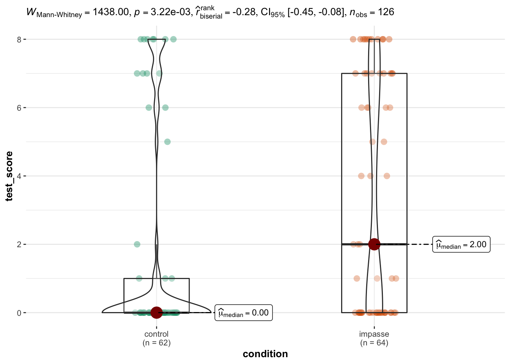
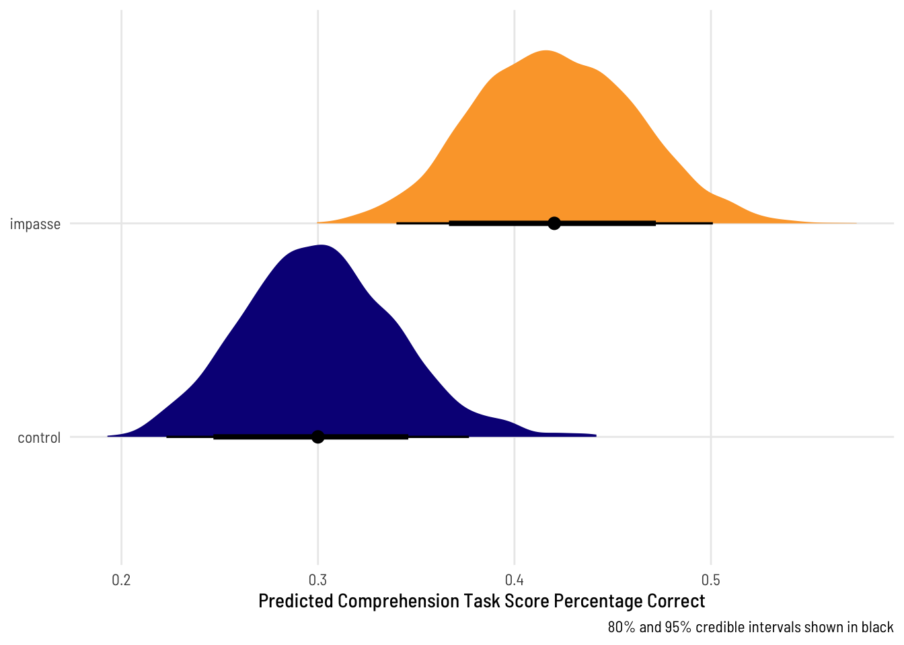

In this notebook we use data from study SGC3A to explore different modelling techniques and assess their suitability for the bimodal accuracy distributions in the SGC project data.
# HACK WD FOR LOCAL RUNNING?# imac = "/Users/amyraefox/Code/SGC-Scaffolding_Graph_Comprehension/SGC-X/ANALYSIS/MAIN"#mbp = "/Users/amyfox/Sites/RESEARCH/SGC—Scaffolding Graph Comprehension/SGC-X/ANALYSIS/MAIN"#setwd(mbp)#IMPORT DATA df_items<-read_rds('analysis/SGC3A/data/2-scored-data/sgc3a_scored_items.rds')df_subjects<-read_rds('analysis/SGC3A/data/2-scored-data/sgc3a_scored_participants.rds')#PREP DATA df_subjects<-df_subjects%>%mutate(
test_score =item_test_NABS,
raw_condition =condition,
condition =pretty_condition)df_items<-df_items%>%mutate(
accuracy =as.factor(score_niceABS),
scaled =recode_factor(score_SCALED, "-1"="orth", "-0.5"="unknown","0"="uncertain","0.5"="lines","1"="tri"),
scaled =as.ordered(scaled),
raw_condition =condition,
condition =pretty_condition,
state =recode_factor(score_SCALED, #for ordinal"-1"="orth-like",
"-0.5"="unknown",
"0"="unknown",
"0.5"="tri-like",
"1"="tri-like"),
state =as.ordered(state))# 3 group ordered STATE variable# 5 group ordered SCALED variable [matches high_interpretation]
INDEPENDENT SAMPLES
test-equivalents of GLM models: https://rpubs.com/palday/glm-test
models as test :https://lindeloev.github.io/tests-as-linear/
CONTINUOUS OUTCOME
Does CONDITION have an effect on TEST PHASE ABSOLUTE SCORE?
(# questions correct on test phase of task, [in lab] participants)
(Can also be transformed to proportion or percentage).
CODE
#::::::::::::SETUP DATAdf=df_subjects%>%filter(mode=="lab-synch")#::::::::::::DESCRIPTIVESmosaic::favstats(test_score~condition, data =df)
condition min Q1 median Q3 max mean sd n missing
1 control 0 0 0 1 8 1.71 3.05 62 0
2 impasse 0 0 2 7 8 3.33 3.40 64 0
CODE
#::::::::::::VISUALIZE DISTRIBUTIONS# #GGFORMULA | FACETED HISTOGRAM# stats = df %>% group_by(pretty_condition) %>% dplyr::summarise(mean = mean(item_test_NABS))# gf_props(~item_test_NABS, # fill = ~pretty_condition, data = df) %>% # gf_facet_grid(~pretty_condition) %>% # gf_vline(data = stats, xintercept = ~mean, color = "red") +# labs(x = "# Correct",# y = "proportion of subjects",# title = "Test Phase Absolute Score (# Correct)",# subtitle = "") + theme(legend.position = "blank")##GGPUBR | HIST+DENSITY SCORE p<-gghistogram(df, x ="test_score", binwidth =0.5,
add ="mean", rug =TRUE,
fill ="pretty_condition", #, palette = c("#00AFBB", "#E7B800"),
add_density =TRUE)facet(p, facet.by=c("condition"))+labs( title ="Distribution of TEST Absolute Score",
subtitle ="Pattern of response is similar across data collection modes but differs by condition",
x ="Total Absolute Score (Test Phase)", y ="number of subjects")+theme_minimal()+theme(legend.position ="blank")
CODE
##VERTICAL RAINCLOUD USING GGDISTRggplot(df, aes(x =condition, y =test_score,
fill =condition))+ggdist::stat_halfeye(
side ="left",
justification =1.1,
width =1,
point_colour =NA)+geom_boxplot(
inherit.aes =FALSE, #supress fill
mapping =aes(x=condition, y =test_score),
width =.15,
outlier.shape =NA)+geom_point(
inherit.aes =FALSE, #supress fill
mapping =aes(x=condition, y =test_score, color =condition),
size =1.3,
alpha =.3,
position =position_jitter(
seed =1, width =.05))+labs(
title ="Distribution of TEST Absolute Score ",
x ="Condition", y ="Total Absolute Score (Test Phase)")+theme(legend.position ="blank")+coord_cartesian(xlim =c(0.5, NA), clip ="off")
Independent Samples T-Test (Student’s T)
Tests null hypothesis that true difference in population mean is == 0
Assumes normally distributed variables
Assumes equal variance of samples (homogeneity of variance)
SGC accuracy data violate both homogeneity and normality*
CODE
(t<-t.test(test_score~condition,data =df,
paired =FALSE, var.equal =TRUE, alternative =c("two.sided")))# less, greater for one sided tests
Two Sample t-test
data: test_score by condition
t = -3, df = 124, p-value = 0.006
alternative hypothesis: true difference in means between group control and group impasse is not equal to 0
95 percent confidence interval:
-2.759 -0.478
sample estimates:
mean in group control mean in group impasse
1.71 3.33
Warning in effectsize.htest(x, type = type, verbose = verbose, ...): Unable to
retrieve data from htest object. Using t_to_d() approximation.
The Two Sample t-test testing the difference of test_score by condition (mean in group control = 1.71, mean in group impasse = 3.33) suggests that the effect is negative, statistically significant, and medium (difference = -1.62, 95% CI [-2.76, -0.48], t(124) = -2.81, p = 0.006; Cohen's d = -0.50, 95% CI [-0.86, -0.15])
CODE
#STATSPLOT | VIOLIN#one tailed tests must be done manually by extracting results expression and adding as subtitle#default is two tailed test# results <- two_sample_test( data = df, x = pretty_condition, # y = item_test_NABS,# alternative = "g")ggbetweenstats(y =test_score, x =condition, data =df,
type ="parametric", var.equal =TRUE,
alternative ="g",
pairwide.display ="significant", )
CODE
# + labs(subtitle = results$expression[[1]])
Independent Samples T-Test (Welch’s T)
Tests null hypothesis that true difference in population mean is == 0
Assumes normally distributed variables
Does not assumes equal variance of samples (homogeneity of variance)
Welch Two Sample t-test
data: test_score by condition
t = -3, df = 123, p-value = 0.006
alternative hypothesis: true difference in means between group control and group impasse is not equal to 0
95 percent confidence interval:
-2.76 -0.48
sample estimates:
mean in group control mean in group impasse
1.71 3.33
Warning in effectsize.htest(x, type = type, verbose = verbose, ...): Unable to
retrieve data from htest object. Using t_to_d() approximation.
The Welch Two Sample t-test testing the difference of test_score by condition (mean in group control = 1.71, mean in group impasse = 3.33) suggests that the effect is negative, statistically significant, and medium (difference = -1.62, 95% CI [-2.76, -0.48], t(123.25) = -2.81, p = 0.006; Cohen's d = -0.51, 95% CI [-0.86, -0.15])
CODE
#STATSPLOT | VIOLINggbetweenstats(y =test_score, x =condition, data =df,
type ="parametric", var.equal =FALSE,
pairwide.display ="significant", )
Yuen’s T-Test (Trimmed Means)
Robust alternative to to t-test is Yuen’s t-test which uses trimmed means
Trimmed means are not desireable for this research scenario because they trim data from the extremes, and in this study these are true, interesting values
(w<-wilcox.test(df$test_score~df$condition,
paired =FALSE, alternative ="two.sided"))#less, greater
Wilcoxon rank sum test with continuity correction
data: df$test_score by df$condition
W = 1438, p-value = 0.003
alternative hypothesis: true location shift is not equal to 0
The Wilcoxon rank sum test with continuity correction testing the difference in ranks between df$test_score and df$condition suggests that the effect is negative, statistically significant, and medium (W = 1438.00, p = 0.003; r (rank biserial) = -0.28, 95% CI [-0.45, -0.08])
# A tibble: 1 × 7
.y. group1 group2 effsize n1 n2 magnitude
* <chr> <chr> <chr> <dbl> <int> <int> <ord>
1 test_score control impasse 0.263 62 64 small
CODE
#STATSPLOT | VIOLINggbetweenstats(y =test_score, x =condition, data =df,
type ="nonparametric", var.equal =FALSE,
pairwide.display ="significant", )

Floor/Ceiling Corrections + Wilcoxon Rank Sum
The bimodal distribution of the subject-level score data do not meet the requirements for t-tests.
However, a non-parametric alternative is available (Wilcoxon rank sum test / Man-Whitney test)
Additional corrections are available for data with ‘floor’ and/or ‘ceiling’ effects via the ‘DACR’ package
https://link.springer.com/article/10.3758/s13428-020-01407-2#Sec14 see also https://qmliu.shinyapps.io/DACFE/
For comparison we run a standard followed by a Wilcoxon rank-sum (Mann-Whitney) test that is a nonparametric alternative for non-normally distributed data.
Wilcoxon rank sum test with continuity correction
data: df$test_score by df$condition
W = 1438, p-value = 0.003
alternative hypothesis: true location shift is not equal to 0
Next, we calculate the t-test and ANOVA (F-test) based on a series of corrections provided for data with floor and/or ceiling effects.
Using properties from truncated normal distributions, the authors propose an easy-to-use method for the t-test and ANOVA with ceiling/floor data.
The proposed method calculates the degrees of freedom based on the after-truncation sample sizes (where l = number of floor observations, and r = number of ceiling observations). The rationale was that the proposed method utilizes full information only from data points of n − r − l participants and partial information from data points of r + l participants of a group for the mean and variance estimation. Specifically, the corrected mean and variance estimates (Eqs. 14 and 15) are functions of mean and variance estimates using after-truncation data (n − r − l participants) and the standardized floor and ceiling threshold estimates. The thresholds are estimated using the ceiling and floor percentage estimates based on data points of n − r and n − l participants, respectively. This is a relatively conservative approach for calculating the degrees of freedom, which can help control the type I error rate. This feature can be beneficial, especially given the “replication crisis” in psychological and behavioral research.
CODE
#FLOOR-CEILING ADJUSTED T TESTSlibrary(DACF)#tests for data with floor and ceiling # https://www.rdocumentation.org/packages/DACF/versions/1.0.0#prepare data [vector of scores for each group]score_111<-df%>%filter(condition=="control")%>%dplyr::select(test_score)%>%pull()score_121<-df%>%filter(condition=="impasse")%>%dplyr::select(test_score)%>%pull()# recover the mean and variance for ceiling/floor dataa<-rec.mean.var(score_111)%>%unlist()# recover the mean and variance for ceiling/floor datab<-rec.mean.var(score_121)%>%unlist()r<-as.data.frame(rbind("control"=a ,"impasse"=b))r
# method "a" uses original sample size# method "b" uses after-truncation sample size
The control condition has 11% of data at ceiling and 71% at floor, with corrected mean of -7 and variance of 207. The impasse condition has 17% at ceiling, and only 42% at floor, with with corrected mean of 2.39 and variance respectively as of 58.
A corrected t-test t statistic is -4.94, p = 0.05. The estimated Cohen’s d is -0.89 with a confidence interval 0f [-14.22, -5.97].
A correct F-test (ANOVA) has a corrected F-statstic of 5.85, p < 0.05, and Fsquared effect size of 0.195
Linear Regression
Assumes homogeneity of variance
Assumes normally distributed residuals
when default dummy coding is used;
intercept = predicted mean of first group,
predictor coefficient = difference to mean of second group
CODE
#SCORE predicted by CONDITIONlm.1<-lm(test_score~condition, data =df)paste("Model")
Warning: 'data_findcols()' is deprecated and will be removed in a future update.
Its usage is discouraged. Please use 'data_find()' instead.
Warning: 'data_findcols()' is deprecated and will be removed in a future update.
Its usage is discouraged. Please use 'data_find()' instead.
Warning: 'data_findcols()' is deprecated and will be removed in a future update.
Its usage is discouraged. Please use 'data_find()' instead.
We fitted a linear model (estimated using OLS) to predict test_score with condition (formula: test_score ~ condition). The model explains a statistically significant and weak proportion of variance (R2 = 0.06, F(1, 124) = 7.89, p = 0.006, adj. R2 = 0.05). The model's intercept, corresponding to condition = control, is at 1.71 (95% CI [0.90, 2.52], t(124) = 4.16, p < .001). Within this model:
- The effect of condition [impasse] is statistically significant and positive (beta = 1.62, 95% CI [0.48, 2.76], t(124) = 2.81, p = 0.006; Std. beta = 0.49, 95% CI [0.14, 0.83])
Standardized parameters were obtained by fitting the model on a standardized version of the dataset. 95% Confidence Intervals (CIs) and p-values were computed using the Wald approximation.
For censored data (i.e. truncated axis). The tobit model, also called a censored regression model, is designed to estimate linear relationships between variables when there is either left- or right-censoring in the dependent variable (also known as censoring from below and above, respectively). Censoring from above takes place when cases with a value at or above some threshold, all take on the value of that threshold, so that the true value might be equal to the threshold, but it might also be higher. In the case of censoring from below, values those that fall at or below some threshold are censored.
censored vs truncated : There is sometimes confusion about the difference between truncated data and censored data.
With censored variables, all of the observations are in the dataset, but we don’t know the “true” values of some of them.
With truncation some of the observations are not included in the analysis because of the value of the variable.
When a variable is censored, regression models for truncated data provide inconsistent estimates of the parameters. See Long (1997, chapter 7) for a more detailed discussion of problems of using regression models for truncated data to analyze censored data.
#TEST FIT#We can test the significance of condition overall by fitting an empty model and using a likelihood ratio test.m0<-vglm(test_score~1, tobit(Lower =lo, Upper =hi), data =df)(p<-pchisq(2*(logLik(m1)-logLik(m0)), df =2, lower.tail =FALSE))
[1] 0.0134
CODE
paste("P value of likelihood ratio test less than alpha = 0.05? ", p<0.05)
[1] "P value of likelihood ratio test less than alpha = 0.05? TRUE"
df$yhat<-fitted(m1)[,1]df$rr<-resid(m1, type ="response")df$rp<-resid(m1, type ="pearson")[,1]par(mfcol =c(2, 3))with(df, {plot(yhat, rr, main ="Fitted vs Residuals")qqnorm(rr)plot(yhat, rp, main ="Fitted vs Pearson Residuals")qqnorm(rp)plot(test_score, rp, main ="Actual vs Pearson Residuals")plot(test_score, yhat, main ="Actual vs Fitted")})
# Indices of model performance
AIC | BIC | RMSE | Sigma
---------------------------------
398.060 | 406.569 | 7.101 | 7.144
CODE
#NOTE: censReg package also does Tobit regression [including mixed models]
The coefficient labeled “(Intercept):1” is the intercept or constant for the model.
The coefficient labeled “(Intercept):2” is an ancillary statistic. If we exponentiate this value, we get a statistic that is analogous to the square root of the residual variance in OLS regression. logSigma is the variance of the model (logarithmized) (same as the second intercept in the VGAM output)
The predicted value of test_phase_score is 5.75 points higher for students in the impasse condition than for students in the control condition. (72% improvement in score!)
Using censReg package - https://cran.r-project.org/web/packages/censReg/vignettes/censReg.pdf
Warning: package 'censReg' was built under R version 4.1.2
Loading required package: maxLik
Loading required package: miscTools
Please cite the 'maxLik' package as:
Henningsen, Arne and Toomet, Ott (2011). maxLik: A package for maximum likelihood estimation in R. Computational Statistics 26(3), 443-458. DOI 10.1007/s00180-010-0217-1.
If you have questions, suggestions, or comments regarding the 'maxLik' package, please use a forum or 'tracker' at maxLik's R-Forge site:
https://r-forge.r-project.org/projects/maxlik/
Please cite the 'censReg' package as:
Henningsen, Arne (2017). censReg: Censored Regression (Tobit) Models. R package version 0.5. http://CRAN.R-Project.org/package=censReg.
If you have questions, suggestions, or comments regarding the 'censReg' package, please use a forum or 'tracker' at the R-Forge site of the 'sampleSelection' project:
https://r-forge.r-project.org/projects/sampleselection/
CODE
#FIT MODELc1<-censReg(test_score~condition, left=lo, right=hi, data =df)summary(c1)
Call:
censReg(formula = test_score ~ condition, left = lo, right = hi,
data = df)
Observations:
Total Left-censored Uncensored Right-censored
126 71 37 18
Coefficients:
Estimate Std. error t value Pr(> t)
(Intercept) -4.1854 1.7149 -2.441 0.01466 *
conditionimpasse 5.5775 1.9995 2.789 0.00528 **
logSigma 2.2033 0.1424 15.471 < 2e-16 ***
---
Signif. codes: 0 '***' 0.001 '**' 0.01 '*' 0.05 '.' 0.1 ' ' 1
Newton-Raphson maximisation, 5 iterations
Return code 1: gradient close to zero (gradtol)
Log-likelihood: -196 on 3 Df
#TEST FIT#We can test the significance of condition overall by fitting an empty model and using a likelihood ratio test.c0<-censReg(test_score~1, left=lo, right=hi, data =df)(p<-pchisq(2*(logLik(c1)-logLik(c0)), df =2, lower.tail =FALSE))
'log Lik.' 0.0134 (df=3)
CODE
paste("P value of likelihood ratio test less than alpha = 0.05? ", p<0.05)
[1] "P value of likelihood ratio test less than alpha = 0.05? TRUE"
Warning in get_residuals.default(model, verbose = verbose, type = "response", :
Can't extract residuals from model.
Warning: Response residuals not available to calculate mean square error. (R)MSE
is probably not reliable.
# Indices of model performance
AIC | BIC
-----------------
398.060 | 406.569
logSigma is the variance of the model (logarithmized) (same as the second intercept in the VGAM output)
output should match that of VGAM
COUNT OUTCOME
Does CONDITION have an effect on TEST PHASE ABSOLUTE SCORE?
(# questions correct on test phase of task, [in lab] participants)
The outcome variable absolute score is clearly not normal. As it represents the cumulative number of items a participant has answered correctly, we can try considering it a type of count, (i.e. count of the number of questions the participant got correct) and attempt to model it using a General Linear Model with the Poisson distribution (and the default log-link function). Note that the process of answering questions on a test do not seem to strictly match the assumptions of a Poisson process.
CODE
#::::::::::::SETUP DATAdf=df_subjects%>%filter(mode=="lab-synch")#::::::::::::DESCRIPTIVESmosaic::favstats(test_score~condition, data =df)
condition min Q1 median Q3 max mean sd n missing
1 control 0 0 0 1 8 1.71 3.05 62 0
2 impasse 0 0 2 7 8 3.33 3.40 64 0
CODE
#::::::::::::VISUALIZE DISTRIBUTIONS# #GGFORMULA | FACETED HISTOGRAM# stats = df %>% group_by(pretty_condition) %>% dplyr::summarise(mean = mean(item_test_NABS))# gf_props(~item_test_NABS, # fill = ~pretty_condition, data = df) %>% # gf_facet_grid(~pretty_condition) %>% # gf_vline(data = stats, xintercept = ~mean, color = "red") +# labs(x = "# Correct",# y = "proportion of subjects",# title = "Test Phase Absolute Score (# Correct)",# subtitle = "") + theme(legend.position = "blank")##GGPUBR | HIST+DENSITY SCORE p<-gghistogram(df, x ="test_score", binwidth =0.5,
add ="mean", rug =TRUE,
fill ="pretty_condition", #, palette = c("#00AFBB", "#E7B800"),
add_density =TRUE)facet(p, facet.by=c("condition"))+labs( title ="Distribution of TEST Absolute Score",
subtitle ="Pattern of response is similar across data collection modes but differs by condition",
x ="Total Absolute Score (Test Phase)", y ="number of subjects")+theme_minimal()+theme(legend.position ="blank")
CODE
##VERTICAL RAINCLOUD USING GGDISTRggplot(df, aes(x =condition, y =test_score,
fill =condition))+ggdist::stat_halfeye(
side ="left",
justification =1.1,
width =1,
point_colour =NA)+geom_boxplot(
inherit.aes =FALSE, #supress fill
mapping =aes(x=condition, y =test_score),
width =.15,
outlier.shape =NA)+geom_point(
inherit.aes =FALSE, #supress fill
mapping =aes(x=condition, y =test_score, color =condition),
size =1.3,
alpha =.3,
position =position_jitter(
seed =1, width =.05))+labs(
title ="Distribution of TEST Absolute Score ",
x ="Condition", y ="Total Absolute Score (Test Phase)")+theme(legend.position ="blank")+coord_cartesian(xlim =c(0.5, NA), clip ="off")
Warning: 'data_findcols()' is deprecated and will be removed in a future update.
Its usage is discouraged. Please use 'data_find()' instead.
Warning: 'data_findcols()' is deprecated and will be removed in a future update.
Its usage is discouraged. Please use 'data_find()' instead.
Warning: 'data_findcols()' is deprecated and will be removed in a future update.
Its usage is discouraged. Please use 'data_find()' instead.
Warning: 'data_findcols()' is deprecated and will be removed in a future update.
Its usage is discouraged. Please use 'data_find()' instead.
Warning: 'data_findcols()' is deprecated and will be removed in a future update.
Its usage is discouraged. Please use 'data_find()' instead.
We fitted a poisson model (estimated using ML) to predict test_score with condition (formula: test_score ~ condition). The model's explanatory power is moderate (Nagelkerke's R2 = 0.23). The model's intercept, corresponding to condition = control, is at 0.54 (95% CI [0.34, 0.72], p < .001). Within this model:
- The effect of condition [impasse] is statistically significant and positive (beta = 0.67, 95% CI [0.44, 0.90], p < .001; Std. beta = 0.67, 95% CI [0.44, 0.90])
Standardized parameters were obtained by fitting the model on a standardized version of the dataset. 95% Confidence Intervals (CIs) and p-values were computed using
The variable condition has a coefficient of 0.67, (p < 0.005). This means that for the impasse condition, the expected log count # of questions increases by 0.67. By exponentiating the estimate we see that # question correct rate for the impasse condition is 1.95x that of the control condition. However, model diagnostics suggest the residuals are not normally distributed.
similar to Poisson regression, but using the negative binomial distribution, which can better account for ‘overdispersed’ data where variance is much greater than the mean
CODE
#NEGATIVE BIONOMIAL REGRESSIONlibrary(MASS)#fit model nb.1<-glm.nb(test_score~condition, data =df)#check overdispersion need #assumes conditional means are not equal to conditional variances#conduct likelihood ration test to compare and test [need poisson]m.t<-glm(test_score~condition, family ="poisson", data =df)#pchisq(2 * (logLik(nb.1) - logLik(m.t)), df = 1, lower.tail = FALSE)#A large (+) log likelihood suggests that the negative binomial is more appropriate than the Poisson modeltest_lrt(m.t, nb.1)
# Likelihood-Ratio-Test (LRT) for Model Comparison
Name | Model | df | df_diff | Chi2 | p
----------------------------------------------
m.t | glm | 2 | | |
nb.1 | negbin | 3 | 1 | 277.71 | < .001
Warning: 'data_findcols()' is deprecated and will be removed in a future update.
Its usage is discouraged. Please use 'data_find()' instead.
Warning: 'data_findcols()' is deprecated and will be removed in a future update.
Its usage is discouraged. Please use 'data_find()' instead.
Warning: 'data_findcols()' is deprecated and will be removed in a future update.
Its usage is discouraged. Please use 'data_find()' instead.
Warning: 'data_findcols()' is deprecated and will be removed in a future update.
Its usage is discouraged. Please use 'data_find()' instead.
Warning: 'data_findcols()' is deprecated and will be removed in a future update.
Its usage is discouraged. Please use 'data_find()' instead.
We fitted a negative-binomial model (estimated using ML) to predict test_score with condition (formula: test_score ~ condition). The model's explanatory power is weak (Nagelkerke's R2 = 0.05). The model's intercept, corresponding to condition = control, is at 0.54 (95% CI [0.07, 1.06], p = 0.033). Within this model:
- The effect of condition [impasse] is statistically non-significant and positive (beta = 0.67, 95% CI [-0.02, 1.35], p = 0.055; Std. beta = 0.67, 95% CI [-0.02, 1.35])
Standardized parameters were obtained by fitting the model on a standardized version of the dataset. 95% Confidence Intervals (CIs) and p-values were computed using
The variable condition has a coefficient of 0.67, (p < 0.005). This means that for the impasse condition, the expected log count # of questions increases by 0.67. By exponentiating the estimate we see that # question correct rate for the impasse condition is nearly 1.95x that of the control condition. However, model diagnostics suggest the residuals are not normally distributed.
# Likelihood-Ratio-Test (LRT) for Model Comparison
Name | Model | df | df_diff | Chi2 | p
----------------------------------------------
p.1 | glm | 2 | | |
nb.1 | negbin | 3 | 1 | 277.71 | < .001
AIC, Pseudo-R2 and a likelihood ratio test indicate that the negative binomial regression model are a better fit for the distribution of test-phase scores.
The Zero-Inflated model allows specification of two models (a mixture) where some of the zeros are included in the DGP for the Poisson model, while only the ‘excess’ zeros are included in the DGP for the Binomial model [the zero-inflated part]
The model includes:
A logistic model to model which of the two processes the zero outcome is associated with
A poisson model to model the count process
Can specify different predictors for each part of the model
predictors after the | are for the binomial zero-inflated part of the model, while those infront are for the poisson process
CODE
#ZERO INFLATED POISSONzinfp.1<-zeroinfl(test_score~condition|condition , data =df)summary(zinfp.1)
Call:
zeroinfl(formula = test_score ~ condition | condition, data = df)
Pearson residuals:
Min 1Q Median 3Q Max
-0.988 -0.575 -0.575 1.090 2.117
Count model coefficients (poisson with log link):
Estimate Std. Error z value Pr(>|z|)
(Intercept) 1.7702 0.0979 18.07 <2e-16 ***
conditionimpasse -0.0231 0.1199 -0.19 0.85
Zero-inflation model coefficients (binomial with logit link):
Estimate Std. Error z value Pr(>|z|)
(Intercept) 0.890 0.280 3.18 0.0015 **
conditionimpasse -1.213 0.378 -3.21 0.0013 **
---
Signif. codes: 0 '***' 0.001 '**' 0.01 '*' 0.05 '.' 0.1 ' ' 1
Number of iterations in BFGS optimization: 7
Log-likelihood: -213 on 4 Df
Warning: 'data_findcols()' is deprecated and will be removed in a future update.
Its usage is discouraged. Please use 'data_find()' instead.
Warning: 'data_findcols()' is deprecated and will be removed in a future update.
Its usage is discouraged. Please use 'data_find()' instead.
Warning: 'data_findcols()' is deprecated and will be removed in a future update.
Its usage is discouraged. Please use 'data_find()' instead.
Warning: 'data_findcols()' is deprecated and will be removed in a future update.
Its usage is discouraged. Please use 'data_find()' instead.
Warning: 'data_findcols()' is deprecated and will be removed in a future update.
Its usage is discouraged. Please use 'data_find()' instead.
We fitted a zero-inflated poisson model to predict test_score with condition (formula: test_score ~ condition). The model's explanatory power is substantial (R2 = 0.39, adj. R2 = 0.38). The model's intercept, corresponding to condition = control, is at 1.77 (95% CI [1.58, 1.96], p < .001). Within this model:
- The effect of condition [impasse] is statistically non-significant and negative (beta = -0.02, 95% CI [-0.26, 0.21], p = 0.847; Std. beta = -0.02, 95% CI [-0.26, 0.21])
- The effect of condition [impasse] is statistically significant and negative (beta = -1.21, 95% CI [-1.95, -0.47], p = 0.001; Std. beta = -1.21, 95% CI [-1.95, -0.47])
Standardized parameters were obtained by fitting the model on a standardized version of the dataset.
In the count model, the coefficient for the condition is not significant.
In the zero-inflation model, the coefficient for the condition variable is -1.23 and statistically significant. This suggests that the log odds of being an excessive zero decrease by 1.23 if you are in the impasse condition
Zero-inflated negative binomial regression is for modelling count variables with excessive zeros, and especially when the count data are overdispersed (mean is much larger than variance). It can help account for situations where theory suggests that excess zeros are generated by 2 separate processes, one that includes the other count values, and the other that is just the zeros, and thus that the excess zeros can be modelled independently.
Total Absolute Score (# items correct) may fit this situation, as the data are overdispersed (variance much greater than the mean) and there are are very large number of zeros. It is theoretically plausible that these excess zeros (no answers correct) are the result of a different ‘process’ … (i.e) little understanding and/or resistance to restructuring understanding of the coordinate system. However, I am not certain if it is plausible to suggest that the zeros themselves are the result of two different processes: (ie. perhaps trying to understand, and not trying to understand?) <- this could maybe be disentangled by first question latency?
The model includes:
A logistic model to model which of the two processes the zero outcome is associated with
A negative binomial model to model the count process
CODE
library(pscl)# for zeroinfl negbinomial#ZERO INFLATED NEGATIVE BINOMIALzinb.1<-zeroinfl(test_score~condition|condition ,
data =df, dist ="negbin")#before the | is the count part, after the | is the logit modelpaste("Model")
Warning: 'data_findcols()' is deprecated and will be removed in a future update.
Its usage is discouraged. Please use 'data_find()' instead.
Warning: 'data_findcols()' is deprecated and will be removed in a future update.
Its usage is discouraged. Please use 'data_find()' instead.
Warning: 'data_findcols()' is deprecated and will be removed in a future update.
Its usage is discouraged. Please use 'data_find()' instead.
Warning: 'data_findcols()' is deprecated and will be removed in a future update.
Its usage is discouraged. Please use 'data_find()' instead.
Warning: 'data_findcols()' is deprecated and will be removed in a future update.
Its usage is discouraged. Please use 'data_find()' instead.
We fitted a zero-inflated negative-binomial model to predict test_score with condition (formula: test_score ~ condition). The model's explanatory power is substantial (R2 = 0.40, adj. R2 = 0.39). The model's intercept, corresponding to condition = control, is at 1.77 (95% CI [1.56, 1.97], p < .001). Within this model:
- The effect of condition [impasse] is statistically non-significant and negative (beta = -0.02, 95% CI [-0.27, 0.23], p = 0.856; Std. beta = -0.02, 95% CI [-0.27, 0.23])
- The effect of condition [impasse] is statistically significant and negative (beta = -1.21, 95% CI [-1.96, -0.47], p = 0.001; Std. beta = -1.21, 95% CI [-1.96, -0.47])
Standardized parameters were obtained by fitting the model on a standardized version of the dataset.
In the count model, the coefficient for the condition is very small, and not significant (suggesting it does not contribute to the count yielding process?).
In the zero-inflation model, the coefficient for the condition variable is -1.056 and statistically significant. This suggests that the log odds of being an excessive zero decrease by 1.06 if you are in the impasse condition
class of models for count data with both overdispersion and excess zeros;
different from zero-inflated models where the excess zeros are theorized to arise from two different processes; in the hurdle model, there is a separate model for P(x=0) and a separate model for P(x!=0)
The model includes:
A binary logit model to model whether the observation takes a positive count or not. (1) Does the student get any questions right?
a truncated Poisson or Negative binomial model that only fits positive counts (2) How many questions does the student get right?
The following objects are masked from 'package:VGAM':
dzipois, pzipois, qzipois, rzipois
The following objects are masked from 'package:pscl':
hurdle, hurdle.control, hurdletest, zeroinfl, zeroinfl.control
The following object is masked from 'package:vcd':
rootogram
CODE
#install.packages("countreg", repos="http://R-Forge.R-project.org")#SYNTAX OUTCOME ~ count model predictor | hurdle predictorh.1<-pscl::hurdle(test_score~condition|condition , data =df,
zero.dist ="binomial", dist ="poisson", size =8)
Warning in optim(fn = countDist, gr = countGrad, par = c(start$count, if (dist
== : unknown names in control: size
Warning in optim(fn = zeroDist, gr = zeroGrad, par = c(start$zero, if (zero.dist
== : unknown names in control: size
CODE
h.2<-pscl::hurdle(test_score~condition|condition , data =df,
zero.dist ="binomial", dist ="negbin", size =8)
Warning in optim(fn = countDist, gr = countGrad, par = c(start$count, if (dist
== : unknown names in control: size
Warning in optim(fn = countDist, gr = countGrad, par = c(start$count, if (dist
== : unknown names in control: size
Note that in all cases, we have to slightly adjust the parameters because the distribution can’t handle values at 0 or 1. So we scrunch the data in just a bit.
The syntax is just like all other formula-based regression functions, but with an added bit: the first part of the equation (x ~ y) models the mean, or MU, while anything that comes after a | in the formula will explain variation in the precision, or PHI.
The link parameter determines the link function for the mu estimate?.
Which link function should be used for each? We now have two sets of coefficients, one set for each parameter (the mean and precision). The parameters for the mean are measured on the logit scale, just like with logistic regression previously, and we can calculate the marginal effect of having a quota by using plogis() and piecing together the coefficient and the intercept:
Impasse increases the average of the distribution of accuracy by 12% percentage points, on average. This should match the value we get with fractional regression. (logistic regression with count variable instead of binomial)
The intercept of MU indicates the average of the distribution of score proportion in the control condition
The coefficient of MU indicates the change in the average distribution of score proportion in the impasse condition
The PHI parameter estimates are not measured on a logit scale. Instead, they’re log values. We can invert them by exponentiating them with exp(). - The phi intercept indicates the precision of the distribution of score proportion in the control condition - The phi coefficient indicates the change in the precision of the distribution of score proportion in the impasse condition
CONDITION is a significant predictor of MEAN (location) but not PHI (precision). Put another way, the shape of both distributions is similar, but the impasse condition distribution is shift to the right (higher) than the control distribution.
Compare
CODE
# COMPARE MODELS#PREP DATA df<-df_subjects%>%filter(mode=="lab-synch")n=nrow(df)%>%unlist()df<-df%>%mutate(
accuracy =item_test_NABS/8,
test_trans =(accuracy*(n-1)+0.5)/n,
all_trans =(DV_percent_NABS*(n-1)+0.5)/n)# LINEAR REGRESSIONlm1<-lm(test_trans~pretty_condition , data =df)# summary(lm1)# LINEAR REGRESSION on LOGTRANSFORMEDqlm1<-lm(qlogis(test_trans)~pretty_condition , data =df)# summary(qlm1)# FRACTIONAL REGRESSION#uses quasibinomial [like binomial] on proportion #instead of binomial data. coeffs on logit scaleflm1<-glm(test_trans~pretty_condition, data =df, family =quasibinomial())summary(flm1)
Call:
glm(formula = test_trans ~ pretty_condition, family = quasibinomial(),
data = df)
Deviance Residuals:
Min 1Q Median 3Q Max
-1.014 -0.667 -0.667 0.949 1.733
Coefficients:
Estimate Std. Error t value Pr(>|t|)
(Intercept) -1.289 0.274 -4.71 6.6e-06 ***
pretty_conditionimpasse 0.953 0.354 2.69 0.0082 **
---
Signif. codes: 0 '***' 0.001 '**' 0.01 '*' 0.05 '.' 0.1 ' ' 1
(Dispersion parameter for quasibinomial family taken to be 0.788)
Null deviance: 117.11 on 125 degrees of freedom
Residual deviance: 111.18 on 124 degrees of freedom
AIC: NA
Number of Fisher Scoring iterations: 4
CODE
# BETA REGRESSION predictor phibm1<-betareg(test_trans~pretty_condition|pretty_condition,
data =df, link ="logit")
Warning in betareg.fit(X, Y, Z, weights, offset, link, link.phi, type, control):
no valid starting value for precision parameter found, using 1 instead
Warning in modelsummary(models): The table includes duplicate term names.
This can happen when `coef_map` or `coef_rename` are misused. This can also
happen when a model produces "grouped" terms, such as in multinomial logit or
gamlss models. You may want to call `get_estimates(model)` to see how estimates
are labelled internally, and use the `group` argument of the `modelsummary`
function.
LM
LM log transform
GLM Quasibinomial
beta
(Intercept)
0.216
−3.241
−1.289
−0.432
0.216
−3.241
−1.289
−0.851
(0.051)
(0.518)
(0.274)
(0.154)
(0.051)
(0.518)
(0.274)
(0.186)
pretty_conditionimpasse
0.201
2.059
0.953
−0.063
0.201
2.059
0.953
0.530
(0.071)
(0.727)
(0.354)
(0.205)
(0.071)
(0.727)
(0.354)
(0.252)
Num.Obs.
126
126
126
126
R2
0.060
0.061
R2 Adj.
0.052
0.053
R2 Pseudo
0.061
AIC
131.3
715.9
−357.1
BIC
139.8
724.4
−345.7
Log.Lik.
−62.653
−354.946
182.533
F
7.887
8.022
7.225
RMSE
0.40
4.08
0.95
CODE
#GET ESTIMATESmodel_beta<-bm1beta_mu_intercept<-model_beta%>%tidy()%>%filter(component=="mean", term=="(Intercept)")%>%pull(estimate)beta_mu_condition<-model_beta%>%tidy()%>%filter(component=="mean", term=="pretty_conditionimpasse")%>%pull(estimate)beta_phi_intercept<-model_beta%>%tidy()%>%filter(component=="precision", term=="(Intercept)")%>%pull(estimate)beta_phi_condition<-model_beta%>%tidy()%>%filter(component=="precision", term=="pretty_conditionimpasse")%>%pull(estimate)mu_control=plogis(beta_mu_intercept)phi_control=plogis(beta_phi_intercept)#when you don’t explicitly model the precision, the resulting coefficient in the table isn’t on the log scale—it’s a regular non-logged number, so there’s no need to exponentiate#PLOT ESTIMATEScontrol_title<-paste0("dprop(mean = plogis(", round(beta_mu_intercept, 2),
"), size = exp(", round(beta_phi_intercept, 2), "))")impasse_title<-paste0("dprop(mean = plogis(", round(beta_mu_intercept, 2),
" + ", round(beta_mu_condition, 2),
"), size = exp(", round(beta_phi_intercept, 2),
" + ", round(beta_phi_condition, 2), "))")ggplot(data =tibble(x =0:1), aes(x =x))+stat_function(fun =dprop, size =1,
args =list(size =exp(beta_phi_intercept),
mean =plogis(beta_mu_intercept)),
aes(color =control_title))+stat_function(fun =dprop, size =1,
args =list(size =exp(beta_phi_intercept+beta_phi_condition),
mean =plogis(beta_mu_intercept+beta_mu_condition)),
aes(color =impasse_title))+geom_density(data =df,
aes(x =test_trans, fill =pretty_condition),
alpha =0.5, color =NA)+labs(x ="Beta Regression Predictions")+theme_clean()+theme(legend.position ="right")
We can also convert the parameter estimates back to A and B. for the impasse condition, MU = 0.397 SIZE = 0.666
a = mu * phi = 0.397 * 0.66 = 0.264 b = (1 - mu) * phi = (1 - 0.397) * 0.666 = 0.402
we should expect it to look more like … (for 50% ) a = correct = 3 b = incorrect = 10 a + b = total = 13
MU = a / (a+b) [the score] = 3 / 13 = 0.23 PHI = a + b [ the total # items ] = 13
mu = 0.277 = a / (a + b) phi = 0.395 = a + b let b = 13
CODE
#RECOVER A AND B FROM MU AND PHImuphi_to_shapes<-function(mu, phi){shape1<-mu*phishape2<-(1-mu)*phireturn(list(shape1 =shape1, shape2 =shape2))}shapes_to_muphi<-function(shape1, shape2){mu<-shape1/(shape1+shape2)phi<-shape1+shape2return(list(mu =mu, phi =phi))}paste("model predicts control A and B ")
It seems like the although the (shrinkled) beta regression model is working, it is really messing up the estimate of the PHI parameter, such that we can’t even recover the A and B. I expect whole numbers, and instead I’m geting values less than 1. I think this might be because the phi value is so low (note that phi = precision, so like inverse of variance. Lower values are more less precise (more variance)). Since I have so many values near 0 and near 1 (even though I’ve shrunk the estimates to be in the open interval (0,1) rather than [0,1], I think it causing problems with the estimation. )
Warning: package 'Rcpp' was built under R version 4.1.2
Loading 'brms' package (version 2.16.3). Useful instructions
can be found by typing help('brms'). A more detailed introduction
to the package is available through vignette('brms_overview').
Attaching package: 'brms'
The following objects are masked from 'package:extraDistr':
ddirichlet, dfrechet, pfrechet, qfrechet, rdirichlet, rfrechet
The following objects are masked from 'package:VGAM':
acat, cratio, cumulative, dfrechet, dirichlet, exponential,
frechet, geometric, lognormal, multinomial, negbinomial, pfrechet,
qfrechet, rfrechet, s, sratio
The following objects are masked from 'package:ordinal':
ranef, VarCorr
The following object is masked from 'package:lme4':
ngrps
The following objects are masked from 'package:ggdist':
dstudent_t, pstudent_t, qstudent_t, rstudent_t
The following object is masked from 'package:survival':
kidney
The following object is masked from 'package:stats':
ar
CODE
model_beta_bayes<-brm(bf(test_trans~pretty_condition,
phi~pretty_condition),
data =df,
family =Beta(),
chains =4, iter =2000, warmup =1000,
cores =4, seed =1234,
# Use the cmdstanr backend for Stan because it's faster and more modern than# the default rstan You need to install the cmdstanr package first# (https://mc-stan.org/cmdstanr/) and then run cmdstanr::install_cmdstan() to# install cmdstan on your computer.
backend ="cmdstanr")
Warning: package 'tidybayes' was built under R version 4.1.2
Attaching package: 'tidybayes'
The following objects are masked from 'package:brms':
dstudent_t, pstudent_t, qstudent_t, rstudent_t
The following object is masked from 'package:bayestestR':
hdi
The following object is masked from 'package:distributional':
parameters
The following object is masked from 'package:gnm':
parameters
The following objects are masked from 'package:ggridges':
scale_point_color_continuous, scale_point_color_discrete,
scale_point_colour_continuous, scale_point_colour_discrete,
scale_point_fill_continuous, scale_point_fill_discrete,
scale_point_size_continuous
CODE
posterior_beta<-model_beta_bayes%>%gather_draws(`b_.*`, regex =TRUE)%>%mutate(component =ifelse(str_detect(.variable, "phi_"), "Precision", "Mean"),
intercept =str_detect(.variable, "Intercept"))ggplot(posterior_beta, aes(x =.value, y =fct_rev(.variable), fill =component))+geom_vline(xintercept =0)+stat_halfeye(aes(slab_alpha =intercept),
.width =c(0.8, 0.95), point_interval ="median_hdi")+scale_fill_viridis_d(option ="viridis", end =0.6)+scale_slab_alpha_discrete(range =c(1, 0.4))+guides(fill ="none", slab_alpha ="none")+labs(x ="Coefficient", y ="Variable",
caption ="80% and 95% credible intervals shown in black; RAW COEFF")+facet_wrap(vars(component), ncol =1, scales ="free_y")+theme_clean()
# now phi is a raw value indicating precision# now mu is an odds ratio for median? of the distribution
Bayesian predictions
CODE
# Plug a dataset where quota is FALSE and TRUE into the modelbeta_bayes_pred<-model_beta_bayes%>%epred_draws(newdata =tibble(pretty_condition =c("control", "impasse")))ggplot(beta_bayes_pred,
aes(x =.epred, y =pretty_condition, fill =pretty_condition))+stat_halfeye(.width =c(0.8, 0.95), point_interval ="median_hdi")+scale_fill_viridis_d(option ="plasma", end =0.8)+guides(fill ="none")+labs(x ="Predicted Comprehension Task Score Percentage Correct", y =NULL,
caption ="80% and 95% credible intervals shown in black")+theme_clean()

ZERO INFLATED BETA
logistic regression for zero inflated \(\alpha\) (logit scale)
beta regression for proportion \(\mu\) (logit scale) and \(\phi\) (log scale)
CODE
df<-df_subjects%>%dplyr::select(pretty_condition, DV_percent_NABS)%>%mutate(
condition =pretty_condition,
accuracy =DV_percent_NABS)#shrink accuracy just a tiny bit from 1 for testing purposes library(tidyfst)
Warning: package 'tidyfst' was built under R version 4.1.2
Life's short, use R.
Attaching package: 'tidyfst'
The following objects are masked from 'package:dplyr':
between, cummean, nth
The following object is masked from 'package:scales':
percent
CODE
df<-df%>%mutate_when(accuracy==1, accuracy =0.99)#INTERCEPT ONLY model for alphazinb<-brm(bf(accuracy~condition, #mean of (0,1) values, muphi~condition, #precision of (0,1) values, phizi~condition), #zero inflated is extreme? alpha
data =df,
family =zero_inflated_beta(),
chains =4, iter =2000, warmup =1000,
cores =4, seed =1234# backend = "cmdstanr")
Compiling Stan program...
Trying to compile a simple C file
Running /Library/Frameworks/R.framework/Resources/bin/R CMD SHLIB foo.c
clang -mmacosx-version-min=10.13 -I"/Library/Frameworks/R.framework/Resources/include" -DNDEBUG -I"/Library/Frameworks/R.framework/Versions/4.1/Resources/library/Rcpp/include/" -I"/Library/Frameworks/R.framework/Versions/4.1/Resources/library/RcppEigen/include/" -I"/Library/Frameworks/R.framework/Versions/4.1/Resources/library/RcppEigen/include/unsupported" -I"/Library/Frameworks/R.framework/Versions/4.1/Resources/library/BH/include" -I"/Library/Frameworks/R.framework/Versions/4.1/Resources/library/StanHeaders/include/src/" -I"/Library/Frameworks/R.framework/Versions/4.1/Resources/library/StanHeaders/include/" -I"/Library/Frameworks/R.framework/Versions/4.1/Resources/library/RcppParallel/include/" -I"/Library/Frameworks/R.framework/Versions/4.1/Resources/library/rstan/include" -DEIGEN_NO_DEBUG -DBOOST_DISABLE_ASSERTS -DBOOST_PENDING_INTEGER_LOG2_HPP -DSTAN_THREADS -DBOOST_NO_AUTO_PTR -include '/Library/Frameworks/R.framework/Versions/4.1/Resources/library/StanHeaders/include/stan/math/prim/mat/fun/Eigen.hpp' -D_REENTRANT -DRCPP_PARALLEL_USE_TBB=1 -I/usr/local/include -fPIC -Wall -g -O2 -c foo.c -o foo.o
In file included from <built-in>:1:
In file included from /Library/Frameworks/R.framework/Versions/4.1/Resources/library/StanHeaders/include/stan/math/prim/mat/fun/Eigen.hpp:13:
In file included from /Library/Frameworks/R.framework/Versions/4.1/Resources/library/RcppEigen/include/Eigen/Dense:1:
In file included from /Library/Frameworks/R.framework/Versions/4.1/Resources/library/RcppEigen/include/Eigen/Core:88:
/Library/Frameworks/R.framework/Versions/4.1/Resources/library/RcppEigen/include/Eigen/src/Core/util/Macros.h:628:1: error: unknown type name 'namespace'
namespace Eigen {
^
/Library/Frameworks/R.framework/Versions/4.1/Resources/library/RcppEigen/include/Eigen/src/Core/util/Macros.h:628:16: error: expected ';' after top level declarator
namespace Eigen {
^
;
In file included from <built-in>:1:
In file included from /Library/Frameworks/R.framework/Versions/4.1/Resources/library/StanHeaders/include/stan/math/prim/mat/fun/Eigen.hpp:13:
In file included from /Library/Frameworks/R.framework/Versions/4.1/Resources/library/RcppEigen/include/Eigen/Dense:1:
/Library/Frameworks/R.framework/Versions/4.1/Resources/library/RcppEigen/include/Eigen/Core:96:10: fatal error: 'complex' file not found
#include <complex>
^~~~~~~~~
3 errors generated.
make: *** [foo.o] Error 1
Warning in tidy.brmsfit(zinb, effects = "fixed"): some parameter names contain
underscores: term naming may be unreliable!
Warning in tidy.brmsfit(zinb, effects = "fixed"): Method 'posterior_samples' is
deprecated. Please see ?as_draws for recommended alternatives.
CODE
# Logit scale interceptzi_intercept
b_zi_Intercept
0.525
CODE
## b_zi_Intercept ## 0.525# Transformed to a probability/proportionplogis(zi_intercept)
TODO - explore priors - explore random effects - explore non-beta distribution; once the 1s and zeros are gone, do we need the beta?
A zero-inflated beta regression allows us to model a separate data generating process for the 0s and 1s and the rest.
A ZOINB is a mixture of:
A logistic regression model that predicts if an outcome is either 0 or 1 or not 0 or 1, defined by (or alternatively, a model that predicts if outcomes are extreme (0 or 1) or not (between 0 and 1); “IS EXTREME” model; defined by \(\alpha\)
A logistic regression model that predicts if any of the 0 or 1 outcomes are actually 1s, defined by (or alternatively, a model that predicts if the extreme values are 1) “WHICH EXTREME” model defined by \(\gamma\)
A beta regression model that predicts if an outcome is between 0 and 1 if it’s not zero or not one, defined by and (or alternatively, a model that predicts the non-extreme (0 or 1) values) “THE REST” model \(\mu\) and \(\phi\)
Can also do mixed! (but no reason do this here, as the item level data is not beta reg )
CODE
#DATA SETUP# sub <- df_subjects %>% dplyr::select(condition, DV_percent_NABS) # don't need to transform anymoredf<-df_subjects%>%filter(mode=="lab-synch")%>%mutate(
condition =pretty_condition,
scaled =(s_SCALED+13)/26, #transform scaled onto 0-1 scale
accuracy =item_test_NABS/8)%>%dplyr::select(condition, scaled, accuracy)#INTERCEPT ONLY model for alphazoinb<-brm(bf(accuracy~condition, #mean of (0,1) values, muphi~condition, #precision of (0,1) values, phizoi~condition, #is extreme? alphacoi~condition), #is 1? gamma
data =df,
family =zero_one_inflated_beta(),
chains =4, iter =2000, warmup =1000,
cores =4, seed =1234,
backend ="cmdstanr")
Possible multicollinearity between b_phi_conditionimpasse and b_phi_Intercept (r = 0.83), b_zoi_conditionimpasse and b_zoi_Intercept (r = 0.78), b_coi_conditionimpasse and b_coi_Intercept (r = 0.75). This might lead to inappropriate results. See 'Details' in '?rope'.
Possible multicollinearity between b_phi_conditionimpasse and b_phi_Intercept (r = 0.81). This might lead to inappropriate results. See 'Details' in '?rope'.
Warning in tidy.brmsfit(zoinb, effects = "fixed"): some parameter names contain
underscores: term naming may be unreliable!
Warning in tidy.brmsfit(zoinb, effects = "fixed"): Method 'posterior_samples' is
deprecated. Please see ?as_draws for recommended alternatives.
CODE
# Logit scale interceptzoi_intercept
b_zoi_Intercept
1.55
CODE
# Transformed to a probability/proportionplogis(zoi_intercept)
Next we’ll explore doing a beta regression on a proportion transformed scaled score at the item level, as a zero one inflated mixed beta reg
CODE
df<-df_items%>%filter(mode=="lab-synch")%>%filter(q%nin%c(6,9))%>%mutate(scaled =(score_SCALED+1)/2,
condition =pretty_condition)%>%dplyr::select(subject, scaled, condition)zoinb_scaled<-brm(bf(scaled~condition+(1|subject) , #mean of (0,1) values, muphi~condition , #precision of (0,1) values, phizoi~condition , #is extreme? alphacoi~condition), #is 1? gamma
data =df,
family =zero_one_inflated_beta(),
chains =4, iter =2000, warmup =1000,
cores =4, seed =1234,
backend ="cmdstanr")
Warning in '/var/folders/52/q436r3nd6kvcz73cchs_t98r0000gn/T/RtmpR7bjpB/model-667f45df313b.stan', line 39, column 2: Declaration
of arrays by placing brackets after a variable name is deprecated and
will be removed in Stan 2.32.0. Instead use the array keyword before the
type. This can be changed automatically using the auto-format flag to
stanc
Warning in '/var/folders/52/q436r3nd6kvcz73cchs_t98r0000gn/T/RtmpR7bjpB/model-667f45df313b.stan', line 84, column 2: Declaration
of arrays by placing brackets after a variable name is deprecated and
will be removed in Stan 2.32.0. Instead use the array keyword before the
type. This can be changed automatically using the auto-format flag to
stanc
Warning: There were 1 divergent transitions after warmup. Increasing adapt_delta
above may help. See http://mc-stan.org/misc/warnings.html#divergent-transitions-
after-warmup
Family: zero_one_inflated_beta
Links: mu = logit; phi = log; zoi = logit; coi = logit
Formula: scaled ~ condition + (1 | subject)
phi ~ condition
zoi ~ condition
coi ~ condition
Data: df (Number of observations: 1638)
Draws: 4 chains, each with iter = 1000; warmup = 0; thin = 1;
total post-warmup draws = 4000
Group-Level Effects:
~subject (Number of levels: 126)
Estimate Est.Error l-95% CI u-95% CI Rhat Bulk_ESS Tail_ESS
sd(Intercept) 0.21 0.09 0.03 0.37 1.00 718 1164
Population-Level Effects:
Estimate Est.Error l-95% CI u-95% CI Rhat Bulk_ESS
Intercept -0.56 0.10 -0.76 -0.37 1.00 3731
phi_Intercept 2.09 0.18 1.72 2.43 1.00 3595
zoi_Intercept 2.40 0.13 2.16 2.66 1.00 5146
coi_Intercept -1.16 0.09 -1.33 -0.99 1.00 7441
conditionimpasse 0.25 0.12 0.02 0.48 1.00 4205
phi_conditionimpasse -0.09 0.21 -0.49 0.33 1.00 4217
zoi_conditionimpasse -1.20 0.15 -1.49 -0.91 1.00 5556
coi_conditionimpasse 1.46 0.12 1.22 1.71 1.00 8209
Tail_ESS
Intercept 2772
phi_Intercept 2667
zoi_Intercept 3015
coi_Intercept 2654
conditionimpasse 2479
phi_conditionimpasse 2776
zoi_conditionimpasse 3083
coi_conditionimpasse 2153
Draws were sampled using sample(hmc). For each parameter, Bulk_ESS
and Tail_ESS are effective sample size measures, and Rhat is the potential
scale reduction factor on split chains (at convergence, Rhat = 1).
Warning: package 'gamlss' was built under R version 4.1.2
Loading required package: gamlss.data
Attaching package: 'gamlss.data'
The following object is masked from 'package:datasets':
sleep
Loading required package: gamlss.dist
Warning: package 'gamlss.dist' was built under R version 4.1.2
Loading required package: nlme
Warning: package 'nlme' was built under R version 4.1.2
Attaching package: 'nlme'
The following object is masked from 'package:dplyr':
collapse
The following objects are masked from 'package:ordinal':
ranef, VarCorr
The following object is masked from 'package:lme4':
lmList
Loading required package: parallel
********** GAMLSS Version 5.4-3 **********
For more on GAMLSS look at https://www.gamlss.com/
Type gamlssNews() to see new features/changes/bug fixes.
Attaching package: 'gamlss'
The following object is masked from 'package:brms':
cs
The following object is masked from 'package:extraDistr':
pcat
The following object is masked from 'package:lme4':
refit
CODE
#CREATE SAMPLE DATA n<-5000mu<-0.40sigma<-0.60p0<-0.13p1<-0.17p2<-1-p0-p1a<-mu*(1-sigma^2)/(sigma^2)b<-a*(1-mu)/mu#CREATE DISTset.seed(1839)y<-rbeta(n, a, b)cat<-sample(1:3, n, prob =c(p0, p2, p1), replace =TRUE)y[cat==1]<-0y[cat==3]<-1#VISUALIZE DISTRIBUTIONx<-as.data.frame(y)gf_histogram(~x$y)
CODE
#this looks not unlike my distribution! #CREATE AN EMPTY MODELfit<-gamlss( formula =y~1, # formula for mu
formula.sigma =~1, # formula for sigma
formula.nu =~1, # formula for nu
formula.tau =~1, # formula for tau
family =BEINF())
GAMLSS-RS iteration 1: Global Deviance = 7799
GAMLSS-RS iteration 2: Global Deviance = 7778
GAMLSS-RS iteration 3: Global Deviance = 7778
GAMLSS-RS iteration 4: Global Deviance = 7778
BETA HURDLE INTERPRETATION - beta component
- MU “location” (mean)
- SIGMA “scale” (positively related to variance; variance = sigma.squared mean (1-mean)
- Rigby, Stasinopoulos, Heller, and De Bastiani (2017) “reparameterized” the beta distribution so that the two parameters determining the shape of the distribution would be more useful in a regression framework (see Ferrari & Cribari-Neto, 2004 for a different parameterization)
ZERO-ONE HURDLE COMPONENT
- The two additional parameters, ν NU and τTAU , are related to p0 and p1, respectively.
- p0 is the probability that a case equals 0,
- p1 is the probability that a case equals 1,
- p2 (i.e., 1 −p0 −p1) is the probability that the case comes from the beta distribution
CODE
#MY DATA#SETUP DATA min=0#min possible value of scalemax=13#max possible value of scalelibrary(mosaic)#for shuffling
The 'mosaic' package masks several functions from core packages in order to add
additional features. The original behavior of these functions should not be affected by this.
Attaching package: 'mosaic'
The following object is masked from 'package:brms':
mm
The following objects are masked from 'package:dplyr':
count, do, tally
The following object is masked from 'package:purrr':
cross
The following objects are masked from 'package:VGAM':
chisq, logit
The following object is masked from 'package:lmerTest':
rand
The following object is masked from 'package:lme4':
factorize
The following object is masked from 'package:Matrix':
mean
The following objects are masked from 'package:rstatix':
cor_test, prop_test, t_test
The following object is masked from 'package:modelr':
resample
The following object is masked from 'package:modelsummary':
msummary
The following object is masked from 'package:vcd':
mplot
The following object is masked from 'package:scales':
rescale
The following object is masked from 'package:cowplot':
theme_map
The following object is masked from 'package:ggplot2':
stat
The following objects are masked from 'package:stats':
binom.test, cor, cor.test, cov, fivenum, IQR, median, prop.test,
quantile, sd, t.test, var
The following objects are masked from 'package:base':
max, mean, min, prod, range, sample, sum
CODE
#1. Rescale accuracy using # recommended adjustment #rescaled = value-min/(max-min)df<-df_subjects%>%mutate(
accuracy =s_NABS,
R_acc =(accuracy-min)/(max-min), #as %
T_acc =(accuracy*(nrow(df)-1)+0.5)/nrow(df)/max, #transform for no 0 and 1# perm = shuffle(condition),
scaffold_rt =item_scaffold_rt)%>%dplyr::select(accuracy,R_acc, T_acc, condition,scaffold_rt)#VISUALIZE DISTRIBUTIONgf_histogram(~R_acc, fill =~condition, data =df)%>%gf_facet_wrap(~condition)+labs(title ="Histogram of accuracy")
CODE
#VISUALIZE DISTRIBUTIONgf_histogram(~T_acc, fill =~condition, data =df)%>%gf_facet_wrap(~condition)+labs(title ="Histogram of [rescaled] accuracy")
CODE
# gf_histogram(~R_acc, fill = ~perm, data = df) %>% gf_facet_wrap(~perm) + labs(title = "Histogram of shuffled accuracy")#SUMMARIZE SAMPLEpaste("Grand mean", mean(df$R_acc))
df$condition min Q1 median Q3 max mean sd n missing var
1 control 0 0 0.000 0.154 1 0.190 0.343 158 0 0.118
2 impasse 0 0 0.154 0.788 1 0.379 0.395 172 0 0.156
#CREATE MODEL#CREATE AN EMPTY MODELm0<-gamlss( formula =R_acc~1, # formula for mu
formula.sigma =~1, # formula for sigma
formula.nu =~1, # formula for nu
formula.tau =~1, # formula for tau
family =BEINF(), data =df)
GAMLSS-RS iteration 1: Global Deviance = 611
GAMLSS-RS iteration 2: Global Deviance = 610
GAMLSS-RS iteration 3: Global Deviance = 610
GAMLSS-RS iteration 4: Global Deviance = 610
CODE
m0<-gamlss(R_acc~1, ~1, ~1, ~1,
data =df, family =BEINF())
GAMLSS-RS iteration 1: Global Deviance = 611
GAMLSS-RS iteration 2: Global Deviance = 610
GAMLSS-RS iteration 3: Global Deviance = 610
GAMLSS-RS iteration 4: Global Deviance = 610
******************************************************************
Family: c("BEINF", "Beta Inflated")
Call: gamlss(formula = R_acc ~ condition, sigma.formula = ~condition,
nu.formula = ~condition, tau.formula = ~condition,
family = BEINF(), data = df)
Fitting method: RS()
------------------------------------------------------------------
Mu link function: logit
Mu Coefficients:
Estimate Std. Error t value Pr(>|t|)
(Intercept) -0.421 0.171 -2.46 0.014 *
conditionimpasse 0.274 0.205 1.33 0.183
---
Signif. codes: 0 '***' 0.001 '**' 0.01 '*' 0.05 '.' 0.1 ' ' 1
------------------------------------------------------------------
Sigma link function: logit
Sigma Coefficients:
Estimate Std. Error t value Pr(>|t|)
(Intercept) 0.3949 0.1407 2.81 0.0053 **
conditionimpasse 0.0309 0.1687 0.18 0.8549
---
Signif. codes: 0 '***' 0.001 '**' 0.01 '*' 0.05 '.' 0.1 ' ' 1
------------------------------------------------------------------
Nu link function: log
Nu Coefficients:
Estimate Std. Error t value Pr(>|t|)
(Intercept) 0.767 0.178 4.30 2.3e-05 ***
conditionimpasse -1.440 0.247 -5.84 1.3e-08 ***
---
Signif. codes: 0 '***' 0.001 '**' 0.01 '*' 0.05 '.' 0.1 ' ' 1
------------------------------------------------------------------
Tau link function: log
Tau Coefficients:
Estimate Std. Error t value Pr(>|t|)
(Intercept) -1.264 0.314 -4.02 0.000072 ***
conditionimpasse -0.471 0.405 -1.16 0.25
---
Signif. codes: 0 '***' 0.001 '**' 0.01 '*' 0.05 '.' 0.1 ' ' 1
------------------------------------------------------------------
No. of observations in the fit: 330
Degrees of Freedom for the fit: 8
Residual Deg. of Freedom: 322
at cycle: 4
Global Deviance: 572
AIC: 588
SBC: 618
******************************************************************
CODE
#CREATE PREDICTOR MODEL ON SHUFFLED [PERMUTATION TEST]# mperm <- gamlss(R_acc ~ perm, ~ perm, ~ perm, ~ perm, # data = df, family = BEINF())# summary(mperm)#sanity check with scaled outcome, no zeros ones# m3 <- gamlss(T_acc ~ condition, ~ condition, ~ condition, ~ condition, # data = df, family = BEINF())# summary(m3)#m3 shouldn't show condition as significant for nu and tau, because T_acc was scaled to not include any 0s and 1s#investigate beta negative binomial distribution#https://en.wikipedia.org/wiki/Beta_negative_binomial_distribution#TRANSFORM PARAMETRS BACK inv_logit<-function(x)exp(x)/(1+exp(x))# inverse of link functionm1_mu<-inv_logit(m1$mu.coefficients)paste("MU: ",m1_mu)
******************************************************************
Summary of the Randomised Quantile Residuals
mean = 0.0127
variance = 0.938
coef. of skewness = 0.11
coef. of kurtosis = 2.76
Filliben correlation coefficient = 0.997
******************************************************************
MU tells if mean is different by condition
SIGMA tells if variance is different by condition
NU coefficient tells if condition yields different probability at floor
TAU coefficient tells if condition yields different probability at ceiling
BINOMIAL OUTCOME
CODE
#PREPARE DATA df<-df_items%>%filter(q==1)%>%filter(mode=="lab-synch")# %>% mutate(# accuracy = recode_factor(score_niceABS, "0" ="incorrect","1"="correct"),# scaled = as.ordered(score_SCALED),# q = as.factor(q),# high_interpretation = as.factor(high_interpretation)# )#GROUPED PROPORTIONAL BAR CHARTgf_props(~accuracy, fill =~pretty_condition, x =~pretty_condition,
position =position_dodge(), data =df)%>%gf_facet_grid(~pretty_mode)+labs(x ="Question 1 Accuracy",
title ="Accuracy on Q1",
subtitle="")
CODE
#STACKED PROPORTIONAL BAR CHARTdf%>%ggplot(data =.,
mapping =aes(x =pretty_condition,
fill =accuracy))+geom_bar(position ="fill")+#,color = "black") +scale_fill_brewer(palette ="Set1")+labs(#y = "",
title ="Accuracy on Test Phase",
x ="Condition",
fill ="",
subtitle="Impasse Condition yields a greater proportion of correct responses")
CHI SQUARE
CODE
#::::::::::::CROSSTABLE# CrossTable( x = df$condition, y = df$accuracy, # fisher = TRUE, chisq=TRUE, expected = TRUE, sresid = TRUE)#::::::::::::MOSAIC PLOT# note: blue indicates cell count higher than expected, # red indicates cell count less than expected; under null hypothesis# mosaicplot(main="Accuracy on First Question by Condition",# data = df, pretty_condition ~ accuracy, # shade = T)#::::::::::::TABLEdf%>%sjtab( fun ="xtab", var.labels=c("accuracy", "pretty_condition"),
show.row.prc=F, show.col.prc=T, show.summary=T, show.exp=T, show.legend=T,
statistics =c("auto"))
accuracy
pretty_condition
Total
control
impasse
0
52 48 83.9 %
45 49 70.3 %
97 97 77 %
1
10 14 16.1 %
19 15 29.7 %
29 29 23 %
Total
62 62 100 %
64 64 100 %
126 126 100 %
χ2=2.547 · df=1 · φ=0.161 · p=0.111
observed values expected values % within pretty_condition
CODE
#::::::::::::BAR PLOTggbarstats(data =df, x =accuracy, y =condition,
type ="nonparametric")
CODE
#::::::::::::CHISQR TEST(x<-stats::chisq.test(x =df$accuracy, y =df$condition, simulate.p.value =T))
Pearson's Chi-squared test with simulated p-value (based on 2000
replicates)
data: df$accuracy and df$condition
X-squared = 3, df = NA, p-value = 0.09
CODE
#::::::::::::POWER ANALYSIS(po<-pwr.chisq.test( w =0.1, df=(2-1), N =nrow(df), sig.level =0.05))
Chi squared power calculation
w = 0.1
N = 126
df = 1
sig.level = 0.05
power = 0.202
NOTE: N is the number of observations
A Chi-Square test of independence of Q1 accuracy [correct,incorrect] by condition indicates the question accuracy is not dependent on condition. However, this test may be underpowered, as with the given sample size it has only 20% power to detect a small effect (w = 0.1)
Fit a logistic regression (at the subject-item level), predicting Q1 accuracy (absolute score) by condition. note: this example uses the combined dataset rather than lab-only, as learning notes were done with the combined and I don’t want to recalcualte all the marginal probabilities by hand for learning purposes.
Fit a logistic regression predicting accuracy (absolute score) (n = r nrow(df)) by condition. (k = 2).
Parameter estimate: \(\beta_{0}\) = Log Odds of (correct) responses in CONTROL condition
\(e^{\beta_{0}}\) = ODDS of correct response in CONTROL condition
Parameter estimate: \(\beta_{1}\) = \(\beta_{1impasse}\) Log Odds (Log OR; change in odds for correct response in impasse (vs) control [log scale])
\(e^{\beta_{1}}\) = ODDS RATIO of correct response in IMPASSE (vs) CONTROL
Null hypothesis:\(\beta_{impasse} \le 0\) the odds for a correct response does not change, or decreases
Alternative hypothesis: \(\beta_{impasse} \gt 0\) the odds of a correct response increases
Fit Model
First, we fit a logistic regression with condition as predictor, and compare its fit to an empty (intercept-only) model.
CODE
#combined dataset, not lab onlydf<-df_items%>%filter(q==1)%>%mutate(
accuracy =as.factor(score_niceABS))# FREQUENCY TABLE# my.table <- table(df$accuracy, df$pretty_condition)# addmargins(my.table) #counts# addmargins(prop.table(my.table)) #props# MODEL FITTING:::::::::::::::::::::::::::::::::::::#: 1 EMPTY MODEL baseline glm model intercept onlym0=glm(accuracy~1, data =df, family ="binomial")print("EMPTY MODEL")
Call:
glm(formula = accuracy ~ 1, family = "binomial", data = df)
Deviance Residuals:
Min 1Q Median 3Q Max
-0.696 -0.696 -0.696 -0.696 1.753
Coefficients:
Estimate Std. Error z value Pr(>|z|)
(Intercept) -1.294 0.134 -9.66 <2e-16 ***
---
Signif. codes: 0 '***' 0.001 '**' 0.01 '*' 0.05 '.' 0.1 ' ' 1
(Dispersion parameter for binomial family taken to be 1)
Null deviance: 343.66 on 329 degrees of freedom
Residual deviance: 343.66 on 329 degrees of freedom
AIC: 345.7
Number of Fisher Scoring iterations: 4
CODE
#: 2 CONDITION modelm1<-glm(accuracy~pretty_condition, data =df, family ="binomial")print("PREDICTOR MODEL")
# MANUAL ONE-SIDED SIGTEST ::::::::::::::::::::::::::: # one-sided (right tail) z test for B COEFFICIENT#https://stats.stackexchange.com/questions/330655/strategy-for-a-one-sided-test-of-glms-coefficients#https://www.ibm.com/support/pages/can-one-get-one-tailed-tests-logistic-regression-dividing-significance-levels-half#SANITY CHECK 2-tailed test should match the model outputtt<-2*pnorm(summary(m1)$coefficients[2,3], lower.tail =F)paste("p value for two-tailed test, null B = 0 : ",round(tt,3))
[1] "p value for two-tailed test, null B = 0 : 0.002"
CODE
ot<-pnorm(summary(m1)$coefficients[2,3], lower.tail =F)paste("BUT we want a one tailed directional, null: B <= 0: ",round(ot,3))
[1] "BUT we want a one tailed directional, null: B <= 0: 0.001"
CODE
paste("adjusted confint for directional hypothesis")
[1] "adjusted confint for directional hypothesis"
CODE
(dcint<-confint(m1, level =0.90))# get 90% for right side))
# https://stats.stackexchange.com/questions/20734/is-a-1-sided-90-prediction-interval-equivalent-to-a-2-sided-95-prediction-inte#:::::::: INTERPRET COEFFICIENTS [directional]# print("Confidence Interval —- LOG ODDS")# confint(m1) #not adjusted for 1-tailed# print("Coefficients —- ODDS RATIOS")# (e <- cbind( exp(coef(m1)), exp(confint(m1)))) #exponentiated, not adjusted# (e <- cbind( exp(coef(m1)), exp(dcint))) #exponentiated, adjusted
Understanding the logistic regression model
CODE
#::::::::::::DESCRIPTIVEStable(df$accuracy, df$condition)%>%addmargins(2)%>%#display sum for rowprop.table(margin=2)%>%#return proportion (of column)addmargins(1)#sanity check sum of columns
control impasse Sum
0 0.861 0.715 0.785
1 0.139 0.285 0.215
Sum 1.000 1.000 1.000
control impasse Sum
0 136 123 259
1 22 49 71
Sum 158 172 330
The logistic regression intercept gives the log odds of the outcome for the reference level of the predictor variable
The logistic regression coefficients give the change in the log odds of the outcome for a one unit increase in the predictor variable.
[the empty model
The intercept of an empty model (glm(accuracy ~ 1) is equal to log(p/(1-p)), where p = the overall probability of a correct response (df$accuracy ==1 ).
In SGC3A Q1 accuracy this = 71 correct / 330 = 0.215 -> log(0.215 / (1-0.215)) = -1.29.
In other words, the intercept from the model with no predictor variables is the estimated log odds of a correct response for the whole sample.
We can also transform the log of the odds back to a probability: p = ODDS/ (1+ODDS) = exp(-1.29)/(1+exp(-1.29)) = 0.215. This should matched the prediction of the empty model
[a dichotomous predictor]
natural log (odds of +) = -1.822 + 0.901(x1) ; x1 = 0 for control, 1 for impasse - b0 intercept is ODDS OF CORRECT RESPONSE IN REFERENCE (control) - b1 intercept is ODDS RATIO (difference in odds) FOR CORRECT RESPONSE IN IMPASSE
INTERCEPT: log odds of (+ response) in control condition
log odds of (+) in control : -1.822 + 0.9(0) = -1.822
convert to odds by exponentiating the coefficients
log odds of (+) in control = exp(-1.822) = 0.162 odds
convert to probability by formula =>
p(+) = odds / (1+odds) = 0.162 / (1 + 0.162) = 0.139
probability of (+) in control = ~14%
B1 COEFFICIENT: DIFFERENCE in log odds of (+) in impasse vs. control
log odds of (+) in impasse: -1.822 + 0.901 = -0.921
convert to odds by exponentiating log odds
log odds (+) in impasse = exp(-0.921) = 0.398
convert to probability by formula =>
p(+) = odds / (1 + odds) = 0.398 / (1+0.398) = 0.285
probaility of (+) in impasse = ~ 29%
ODDS RATIO : exponentiated B1 COEFFICIENT
B1 = (slope of logit model = difference in log odds = log odds ratio
B1 = 0.901 is log odds ratio of (+) in impasse vs control
exp(b1) = exp(0.901) = 2.46
Ratio of odds in impasse are 2.46 times higher than in control. Bein in the impasse condition yields odds athat are 2.46 X higher than in control.
#:::::::: PLOT#GGSTATS | MODEL | LOG ODDS ggcoefstats(m1, output ="plot",
conf.level =0.90)+labs(x ="Log Odds Estimate",
subtitle ="p is for two tailed test")
CODE
#SJPLOT | MODEL | ODDS RATIO#library(sjPlot)plot_model(m1, vline.color ="red",
show.intercept =TRUE,
show.values =TRUE,
p.threshold =0.1, #manually adjust to account for directional test
ci.lvl =0.90)+#manually adjusted for directional test labs(title ="Model Predicted Odds Ratio",
subtitle ="",
x ="Condition")
CODE
#SJPLOT | MODEL | PROBABILITIESplot_model(m1, type="eff",
show.intercept =TRUE,
show.values =TRUE,
title ="Model Predicted Probability of Accuracy",
axis.title =c("Condition","Probability of Accurate Response"))
$pretty_condition
CODE
#SJPLOT | MODEL | TABLE# tab_model(m1)#MODELSUMMARY | MODEL | PROBABILITIES# modelsummary(m1, exponentiate = TRUE)#MARGINALEFFECTS | MODEL | PROBABILITIESlibrary(marginaleffects)
Warning: package 'marginaleffects' was built under R version 4.1.2
Attaching package: 'marginaleffects'
The following object is masked from 'package:modelr':
typical
CODE
#plot adjusted predictions, conditional on the CONDITION variable using the plot_cap#interactions plot_cap(mod, condition = c("length", "style"))plot_cap(m1, condition ="pretty_condition")
CODE
# The plot_cme function can be used to draw “Conditional Marginal Effects.” #use for ixns # plot_cme(m1, effect = "var1", condition = "pretty_condition")
Warning: 'data_findcols()' is deprecated and will be removed in a future update.
Its usage is discouraged. Please use 'data_find()' instead.
Warning: 'data_findcols()' is deprecated and will be removed in a future update.
Its usage is discouraged. Please use 'data_find()' instead.
Warning: 'data_findcols()' is deprecated and will be removed in a future update.
Its usage is discouraged. Please use 'data_find()' instead.
Warning: 'data_findcols()' is deprecated and will be removed in a future update.
Its usage is discouraged. Please use 'data_find()' instead.
Warning: 'data_findcols()' is deprecated and will be removed in a future update.
Its usage is discouraged. Please use 'data_find()' instead.
We fitted a logistic model (estimated using ML) to predict accuracy with pretty_condition (formula: accuracy ~ pretty_condition). The model's explanatory power is weak (Tjur's R2 = 0.03). The model's intercept, corresponding to pretty_condition = control, is at -1.82 (95% CI [-2.30, -1.39], p < .001). Within this model:
- The effect of pretty condition [impasse] is statistically significant and positive (beta = 0.90, 95% CI [0.35, 1.48], p = 0.002; Std. beta = 0.90, 95% CI [0.35, 1.48])
Standardized parameters were obtained by fitting the model on a standardized version of the dataset. 95% Confidence Intervals (CIs) and p-values were computed using
Ok: About 100% of the residuals are inside the error bounds.
CODE
# logitgof(df$accuracy, m1$fitted.values, ord=FALSE)# hoslem.test(x = df$accuracy, y = fitted(m1), g = 2)# p should be non significant
Inference
We fit a logistic regression model to analyze the effect of experimental condition on probability of a correct answer on the first question. In this model, the effect of condition is statistically significant (z = 3.16, p = 0.0016). The model predicts that the odds of a correct response on the first question in the impasse condition increase by 146% (\(e^{beta_1}\) = 2.46, 95% CI [1.42, 4.37]) over the control condition.
Equivalent statements:
being in impasse condition increases log odds of correct response by 0.901 (over control)
being in impasse increases odds of correct response in impasse over control increases by factor of 2.46
probability of correct response in control predicted as 28.5%, vs only 14% in control condition
Does CONDITION affect the Q1 [ordered] type of response given?
CODE
#SETUP DATAdf<-df_items%>%filter(q==1)%>%filter(mode=="lab-synch")#scaled has already been set as an ordered factor of score_SCALED#::::::::::::DESCRIPTIVESprop.table(table(df$scaled, df$condition))
control impasse
orth 0.39683 0.15873
unknown 0.00794 0.00000
uncertain 0.00000 0.14286
lines 0.00794 0.05556
tri 0.07937 0.15079
#STACKED PROPORTIONAL BAR CHARTdf%>%ggplot(data =.,
mapping =aes(x =condition,
fill =scaled))+geom_bar(position ="fill")+#,color = "black") +scale_fill_brewer(palette ="Set1")+facet_wrap(~pretty_mode)+labs(#y = "",
title ="Q1 Interpretation",
x ="Condition",
fill ="",
subtitle="")
Does CONDITION affect the Q1 [ordered] state of understanding?
CODE
#SETUP DATAdf<-df_items%>%filter(q==1)%>%filter(mode=="lab-synch")#scaled has already been set as an ordered factor of score_SCALED#::::::::::::DESCRIPTIVESprop.table(table(df$state, df$condition))
#STACKED PROPORTIONAL BAR CHARTdf%>%ggplot(data =.,
mapping =aes(x =condition,
fill =state))+geom_bar(position ="fill")+#,color = "black") +scale_fill_brewer(palette ="Set1")+facet_wrap(~pretty_mode)+labs(#y = "",
title ="Q1 State",
x ="Condition",
fill ="",
subtitle="")
proportional odds regression models effectively act as a series of stratified binomial models under the assumption that the ‘slope’ of the logistic function of each stratified model is the same.
thus need to verify proportional odds assumption - ordinal regression requires an proportional odds assumption (the same slope holds for each equation)
this is required because the model simultaneously estimates k-1 equations, but each equation has the same slope, with different intercepts.
conversely, a multinomial (categorical) model will have different slopes as well as intercepts - the intercepts are always ordered in size alpha 1 < alpha 2 < alpha k-1…
TODO - see difference between the three types of ordinal models (adjacent category (vs) cumulative proportions; check Agresti book
Overall, participants in the impasse condition had higher odds (6.68 X as likely) to offer more correct interpretations than those in the control condition (z = 4.74, p < 0.001).
we see the estimates for the 2 intercepts, which are sometimes called cutpoints.
The intercepts indicate where the latent variable is cut to make the three groups that we observe in our data.
Note that this latent variable is continuous. In general, these are not used in the interpretation of the results.
The cutpoints are closely related to thresholds, which are reported by other statistical packages.
for k groups there will be k-1 intercepts (cutpoints)
confirm that the CI does not include 0 (the units are ordered logits [ordered log odds])
as with logistic regression we exponentiate the coefficients and confints to get odds ratio
Can't calculate log-loss.
Can't calculate proper scoring rules for ordinal, multinomial or cumulative link models.
# Indices of model performance
AIC | BIC | Nagelkerke's R2 | RMSE | Sigma
---------------------------------------------------
225.090 | 233.599 | 0.216 | 1.629 | 1.648
CODE
# #test proporitional odds assumption brant(m)#only works for polyr type model not clm type model
----------------------------------------------------
Test for X2 df probability
----------------------------------------------------
Omnibus 15.6 1 0
conditionimpasse 15.6 1 0
----------------------------------------------------
H0: Parallel Regression Assumption holds
CODE
# # A p-value of less than 0.05 on this test—particularly on the Omnibus plus at least one of the variables—should be interpreted as a failure of the proportional odds assumption.#test proportional odds assumptionlibrary(pomcheckr)# https://cran.r-project.org/web/packages/pomcheckr/pomcheckr.pdf(p<-pomcheck(scaled~condition , data =df))
The output of the graphical test for proportional odds assumption suggests that the proportional odds assumption may be unreasonable for this dataset. Also, inspecting the output table, we see the coefficients for each level of the scaled variable are quite different.
Thus, an alternative approach may be more appropriate:
Baseline logistic model. This model is the same as the multinomial regression model covered in the previous chapter, using the lowest ordinal value as the reference.
Adjacent-category logistic model. This model compares each level of the ordinal variable to the next highest level, and it is a constrained version of the baseline logistic model. The brglm2 package in R offers a function bracl() for calculating an adjacent category logistic model.
Continuation-ratio logistic model. This model compares each level of the ordinal variable to all lower levels. This can be modeled using binary logistic regression techniques, but new variables need to be constructed from the data set to allow this. The R package rms has a function cr.setup() which is a utility for preparing an outcome variable for a continuation ratio model.
*Note: for multiple regression, the ordinal package offers a parameter (nominal = ~predictors) that allow you to designate some predictors as nominal rather than ordinal. But this is not appropriate for this use case._
CATEGORICAL OUTCOME
Does CONDITION affect the Q1 [ordered] type of response given?
CODE
#SETUP DATAdf<-df_items%>%filter(q==1)%>%filter(mode=="lab-synch")#scaled has already been set as an ordered factor of score_SCALED#::::::::::::DESCRIPTIVESprop.table(table(df$scaled, df$condition))
control impasse
orth 0.39683 0.15873
unknown 0.00794 0.00000
uncertain 0.00000 0.14286
lines 0.00794 0.05556
tri 0.07937 0.15079
#STACKED PROPORTIONAL BAR CHARTdf%>%ggplot(data =.,
mapping =aes(x =condition,
fill =scaled))+geom_bar(position ="fill")+#,color = "black") +scale_fill_brewer(palette ="Set1")+facet_wrap(~pretty_mode)+labs(#y = "",
title ="Q1 Interpretation",
x ="Condition",
fill ="",
subtitle="")
Does CONDITION affect the Q1 [ordered] state of understanding?
CODE
#SETUP DATAdf<-df_items%>%filter(q==1)%>%filter(mode=="lab-synch")#scaled has already been set as an ordered factor of score_SCALED#::::::::::::DESCRIPTIVEStable(df$state, df$condition)%>%addmargins(2)%>%#display sum for rowprop.table(margin=2)%>%#return proportion (of column)addmargins(1)#sanity check sum of columns
control impasse Sum
orth-like 0.8065 0.3125 0.5556
unknown 0.0161 0.2812 0.1508
tri-like 0.1774 0.4062 0.2937
Sum 1.0000 1.0000 1.0000
#STACKED PROPORTIONAL BAR CHARTdf%>%ggplot(data =.,
mapping =aes(x =condition,
fill =state))+geom_bar(position ="fill")+#,color = "black") +scale_fill_brewer(palette ="Set1")+facet_wrap(~pretty_mode)+labs(#y = "",
title ="Q1 State",
x ="Condition",
fill ="",
subtitle="")
#MOSAIC PLOT#note: blue indicates cell count higher than expected, red indicates cell count less than expected; under null hypothesismosaicplot(main="Interpretation on First Question by Condition",
data =df, condition~scaled,
shade =T)
CODE
#::::::::::::WITH STATISTICSggbarstats(data =df, x =condition, y =scaled,
type ="nonparametric")
CODE
#MOSAIC PLOT#note: blue indicates cell count higher than expected, red indicates cell count less than expected; under null hypothesismosaicplot(main="Response Type on First Question by Condition",
data =df, condition~scaled,
shade =T)
CODE
CrossTable( x =df$condition, y =df$scaled,
fisher =TRUE, chisq=TRUE, expected =TRUE, sresid =TRUE)
Warning in chisq.test(t, correct = FALSE, ...): Chi-squared approximation may be
incorrect
Can use nnet package multinom() or mclogit package mblogit() [“baseline logit model”] or brms with family = “categorical”
Fit a logistic regression predicting interpretation (k=#response categories) by condition. (k = 2).
2 equations will be estimated (# categories - 1); each representing the odds of answering in that particular interpretation (vs) the reference category (orthogonal answer)
(from experience, seems) Each cell must have at least one observation (if one cell is blank, then it seems to be incorrectly estimated, see predicting high_interpretation vs. state. suggests nonsignificant OR for ‘unknown’ category, when infact that difference drives the effect
For each equation:
\(\beta_{0}\)= Log Odds of [this category type vs. reference category type) response in CONTROL condition
\(e^{\beta_{0}}\)= ODDS of [this category type vs. reference category type] response in CONTROL condition
\(\beta_{1}\)=\(\beta_{1impasse}\)Log Odds (Log OR; change in odds for [this category] type response in impasse (vs) control [log scale])
\(e^{\beta_{1}}\)= ODDS RATIO of [this. vs reference category type] response in IMPASSE (vs) CONTROL
Null hypothesis:\(\beta_{impasse} \le 0\)the odds for [this category of response vs. reference] does not change, or decreases
Alternative hypothesis:\(\beta_{impasse} \gt 0\)the odds of [this category of response vs. reference] increases
CODE
#::::::::::::DESCRIPTIVES RESPONSE STATEtable(df$state, df$condition)%>%addmargins(2)%>%#display sum for rowprop.table(margin=2)%>%#return proportion (of column)addmargins(1)#sanity check sum of columns
control impasse Sum
orth-like 0.8065 0.3125 0.5556
unknown 0.0161 0.2812 0.1508
tri-like 0.1774 0.4062 0.2937
Sum 1.0000 1.0000 1.0000
#FIT EMPTY MODELcatm.0<-multinom(state~1, data =df)
# weights: 6 (2 variable)
initial value 138.425148
final value 122.428550
converged
CODE
# summary(catm.0)#FIT PREDICTOR MODELcatm<-multinom(formula =state~condition, data =df, model =TRUE)
# weights: 9 (4 variable)
initial value 138.425148
iter 10 value 103.421004
iter 10 value 103.421004
final value 103.421004
converged
CODE
# summary(catm)#COMPARE MODEL FITtest_lrt(catm.0, catm)
# Likelihood-Ratio-Test (LRT) for Model Comparison
Name | Model | df | df_diff | Chi2 | p
-------------------------------------------------
catm.0 | multinom | 2 | | |
catm | multinom | 4 | 2 | 38.02 | < .001
CODE
##compare bayesian version#library(brms)# bm1 <- brm( state ~ pretty_condition, data = df, family = "categorical")# summary(bm1)# plot_model(bm1)# report(bm1)# coefficient estimates are very simliar to catm. super cool!##compare mclogit version#"baseline-category logit model# https://www.elff.eu/software/mclogit/manual/mblogit/# blm1 <- mblogit(state ~ pretty_condition , data = df)# summary(blm1)#identical to catm. super cool!
Likelihood ratio test indicates predictor model is significantly better fit to the sample data than the empty (intercept only) model.
# convert to p-valuesp_values<-(1-pnorm(abs(z_stats)))*2# display p-values in transposed data framep_values<-data.frame(p =(p_values))# display odds ratios in transposed data framepaste("ODDS RATIOS")
effect of predictor on log odds of being in [unknown] instead of reference category [orth-like]
effect of predictor on log odds of being in [tri-like] instead of reference category [orth-like]
[need to to double check interpretation, but I think that the OR intercepts converted to probabilities equate to the marginal probability of being in each state in the [reference] control condition. which makes sense. I think]
IF I change reference category for condition… then the intercepts should no longer be significant. The b1 coefficients should still be significant, but with changed sign (much less likely) [Yup! this works!]
Inference
Being in the IMPASSE condition increases the odds of giving ‘unknown/uncertain’ response rather than an orthogonal (or satisficing) response by a factor of 50 (z = 3.59, p < 0.001 ).
Being in the IMPASSE condition increases the odds of giving an ‘triangular or line-driven’ response rather than an orthogonal (or satisficing) response by a factor of 6 (z = 3.98, p <0.001 )
#EXAMINE PREDICTIONS#create sample data frametest<-data.frame(condition =c("control", "impasse"))pred<-predict(catm, newdata =test, "probs")paste("Predicted Probability of Being in Each State")
[1] "Predicted Probability of Being in Each State"
Can't calculate log-loss.
Can't calculate proper scoring rules for ordinal, multinomial or cumulative link models.
# Indices of model performance
AIC | BIC | Nagelkerke's R2 | RMSE | Sigma
---------------------------------------------------
214.842 | 226.187 | 0.304 | 0.404 | 1.302
CODE
DescTools::PseudoR2(catm, which =c("McFadden", "CoxSnell", "Nagelkerke"))
Registered S3 method overwritten by 'DescTools':
method from
reorder.factor gdata
McFadden CoxSnell Nagelkerke
0.155 0.260 0.304
CODE
#General Goodness of Fit# library(generalhoslem)# logitgof(df$state, catm$fitted.values, g = 3)# hoslem.test(x = df$state, y = catm$fitted.values, g = 10)#A non-significant p value indicates that there is no evidence that the observed and expected frequencies differ (i.e., evidence of good fit).#don't fret! this version of the hoslem-lem test is problematic with fewer than 10 input variables
MIXED (Repeated Measures)
CODE
#PREPARE DATA n_items=8#number of items in test#item leveldf=df_items%>%filter(q%nin%c(1,2,3,4,5,6,9))%>%mutate(
accuracy =recode_factor(score_niceABS, "0"="incorrect","1"="correct"),
q =as.factor(q))#FACETED HISTOGRAMstats=df_subjects%>%group_by(pretty_condition)%>%dplyr::summarise(mean =mean(item_test_NABS))gf_props(~item_test_NABS,
fill =~pretty_condition, data =df_subjects)%>%gf_facet_grid(pretty_condition~pretty_mode)%>%gf_vline(data =stats, xintercept =~mean, color ="red")+labs(x ="# Correct",
y ="proportion of subjects",
title ="Test Phase Absolute Score (# Correct)",
subtitle ="")+theme(legend.position ="blank")
CODE
#GROUPED PROPORTIONAL BAR CHARTgf_props(~accuracy, fill =~pretty_condition, x =~pretty_condition,
position =position_dodge(), data =df)%>%gf_facet_grid(~pretty_mode)+labs(x ="Correct Responses in Test Phase",
title ="Accuracy on Task by Condition",
subtitle="Impasse Condition yields a greater proportion of correct responses")
CODE
#STACKED PROPORTIONAL BAR CHARTdf%>%ggplot(data =.,
mapping =aes(x =pretty_condition,
fill =accuracy))+geom_bar(position ="fill")+#,color = "black") +scale_fill_brewer(palette ="Set1")+facet_wrap(~pretty_mode)+labs(#y = "",
title ="Accuracy on Test Phase",
x ="Condition",
fill ="",
subtitle="Impasse Condition yields a greater proportion of correct responses")
MIXED — CONTINUOUS
MIXED — BINOMIAL
Mixed Logistic Regression
Fit a mixed logistic regression (at the item level), predicting accuracy (absolute score) on test phase questions by condition; accounting for random effects of subject.
Fit Model
CODE
#SETUP DATA n_items=8#number of items in test#item leveldf=df_items%>%filter(q%nin%c(1,2,3,4,5,6,9))%>%mutate(
accuracy =as.factor(score_niceABS),
q =as.factor(q))%>%filter(mode=="lab-synch")library(lmerTest)#for CIs in glmer ## 1 | SETUP RANDOM EFFECT#:: EMPTY MODEL (baseline, no random effect)m0=glm(accuracy~1, family ="binomial", data =df)#:: RANDOM INTERCEPT SUBJECTmm.rS<-glmer(accuracy~(1|subject), data =df,family ="binomial")# :: TEST random effectpaste("AIC with random effect is lower than glm empty model?", m0$aic>AIC(logLik(mm.rS)))
[1] "AIC with random effect is lower than glm empty model? TRUE"
CODE
test_lrt(m0,mm.rS)#same as anova(m0, m1, test = "Chi")
# Likelihood-Ratio-Test (LRT) for Model Comparison
Name | Model | df | df_diff | Chi2 | p
-------------------------------------------------
m0 | glm | 1 | | |
mm.rS | glmerMod | 2 | 1 | 678.41 | < .001
CODE
paste("Likelihood Ratio test is significant? p = ",(test_lrt(m0,mm.rS))$p[2])
[1] "Likelihood Ratio test is significant? p = 1.48371797931313e-149"
CODE
## 2 | ADD FIXED EFFECT# SUBJECT INTERCEPT | FIXED CONDITION mm.CrS<-glmer(accuracy~pretty_condition+(1|subject),
data =df,family ="binomial")# :: TEST fixed factor paste("AIC with fixed effect is lower than random intercept only model?", AIC(logLik(mm.rS))>AIC(logLik(mm.CrS)))
[1] "AIC with fixed effect is lower than random intercept only model? TRUE"
CODE
test_lrt(mm.rS,mm.CrS)#same as anova(m0, m1, test = "Chi")
# Likelihood-Ratio-Test (LRT) for Model Comparison
Name | Model | df | df_diff | Chi2 | p
-----------------------------------------------
mm.rS | glmerMod | 2 | | |
mm.CrS | glmerMod | 3 | 1 | 3.91 | 0.048
CODE
paste("Likelihood Ratio test is significant? p = ",(test_lrt(mm.rS,mm.CrS))$p[2])
[1] "Likelihood Ratio test is significant? p = 0.047907883063779"
Warning: 'data_findcols()' is deprecated and will be removed in a future update.
Its usage is discouraged. Please use 'data_find()' instead.
Warning: 'data_findcols()' is deprecated and will be removed in a future update.
Its usage is discouraged. Please use 'data_find()' instead.
Warning: 'data_findcols()' is deprecated and will be removed in a future update.
Its usage is discouraged. Please use 'data_find()' instead.
Warning: 'data_findcols()' is deprecated and will be removed in a future update.
Its usage is discouraged. Please use 'data_find()' instead.
Warning: 'data_findcols()' is deprecated and will be removed in a future update.
Its usage is discouraged. Please use 'data_find()' instead.
We fitted a logistic mixed model (estimated using ML and Nelder-Mead optimizer) to predict accuracy with pretty_condition (formula: accuracy ~ pretty_condition). The model included subject as random effect (formula: ~1 | subject). The model's total explanatory power is substantial (conditional R2 = 0.95) and the part related to the fixed effects alone (marginal R2) is of 0.07. The model's intercept, corresponding to pretty_condition = control, is at -7.46 (95% CI [-9.81, -5.11], p < .001). Within this model:
- The effect of pretty condition [impasse] is statistically significant and positive (beta = 4.03, 95% CI [0.76, 7.29], p = 0.016; Std. beta = 4.03, 95% CI [0.76, 7.29])
Standardized parameters were obtained by fitting the model on a standardized version of the dataset. 95% Confidence Intervals (CIs) and p-values were computed using the Wald approximation.
CODE
# se <- sqrt(diag(stats::vcov(m1)))# # table of estimates with 95% CI# (tab <- cbind(Est = fixef(m1), LL = fixef(m1) - 1.96 * se, UL = fixef(m1) + 1.96 *# se))# (e <- exp(tab))#: PLOT#SJPLOT | MODEL | ODDS RATIO#library(sjPlot)plot_model(mm.CrS, type="std2", vline.color ="red",
show.intercept =TRUE,
show.values =TRUE)+labs(title ="Model Predicted Odds Ratio",
subtitle ="",
x ="Condition")
CODE
#SJPLOT | MODEL | PROBABILITIESplot_model(mm.CrS, type="pred",
show.intercept =TRUE,
show.values =TRUE,
title ="Model Predicted Probability of Accuracy",
axis.title =c("Condition","Probability of Accurate Response"))
Warning: Probably bad model fit. Only about 64% of the residuals are inside the error bounds.
Inference
We fit a mixed-effect binomial logistic regression model with random intercepts for subjects to investigate the effect of condition on test phase item accuracy. The model including a fixed effect of condition performed significantly better than an intercept-only baseline model (χ2(3): 4.98, p < 0.05). Consistent with the pattern of results for the first question only, across all test-phase items, being in the impasse condition increases the odds of a correct response by a factor of 5 over the control condition \(e^{\beta_1}\) = 5.11, 95% CI [1.17,22,36], p < 0.05.
library(brms)#DEFINE DATA df<-df_items%>%filter(q==1)%>%filter(mode=="lab-synch")#TODO: why is this probit instead of logit?cumord<-brm( formula =state~condition,
data =df,
family =cumulative("probit"),
file ="analysis/models/sgc3a_brms_cumord_q1state.rds"# cache model (can be removed))summary(cumord)
Family: cumulative
Links: mu = probit; disc = identity
Formula: state ~ condition
Data: df (Number of observations: 126)
Draws: 4 chains, each with iter = 2000; warmup = 1000; thin = 1;
total post-warmup draws = 4000
Population-Level Effects:
Estimate Est.Error l-95% CI u-95% CI Rhat Bulk_ESS Tail_ESS
Intercept[1] 0.75 0.18 0.41 1.11 1.00 3054 2790
Intercept[2] 1.22 0.19 0.85 1.60 1.00 3305 2732
conditionimpasse 1.11 0.23 0.66 1.55 1.00 3192 2953
Family Specific Parameters:
Estimate Est.Error l-95% CI u-95% CI Rhat Bulk_ESS Tail_ESS
disc 1.00 0.00 1.00 1.00 NA NA NA
Draws were sampled using sampling(NUTS). For each parameter, Bulk_ESS
and Tail_ESS are effective sample size measures, and Rhat is the potential
scale reduction factor on split chains (at convergence, Rhat = 1).
Possible multicollinearity between b_conditionimpasse and b_Intercept[2] (r = 0.76). This might lead to inappropriate results. See 'Details' in '?rope'.
Possible multicollinearity between b_conditionimpasse and b_Intercept[2] (r = 0.76). This might lead to inappropriate results. See 'Details' in '?rope'.
Warning: Predictions are treated as continuous variables in 'bayes_R2' which is
likely invalid for ordinal families.
Warning: 'data_findcols()' is deprecated and will be removed in a future update.
Its usage is discouraged. Please use 'data_find()' instead.
Possible multicollinearity between b_conditionimpasse and b_Intercept[2] (r = 0.76). This might lead to inappropriate results. See 'Details' in '?rope'.
Possible multicollinearity between b_conditionimpasse and b_Intercept[2] (r = 0.76). This might lead to inappropriate results. See 'Details' in '?rope'.
Warning: Predictions are treated as continuous variables in 'bayes_R2' which is likely invalid for ordinal families.
Warning: 'data_findcols()' is deprecated and will be removed in a future update.
Its usage is discouraged. Please use 'data_find()' instead.
We fitted a Bayesian probit model (estimated using MCMC sampling with 4 chains of 2000 iterations and a warmup of 1000) to predict state with condition (formula: state ~ condition). Priors over parameters were set as uniform (location = , scale = ), student_t (location = 0.00, scale = 2.50), student_t (location = 0.00, scale = 2.50), student_t (location = 0.00, scale = 2.50), uniform (location = , scale = ), student_t (location = 0.00, scale = 2.50), student_t (location = 0.00, scale = 2.50), student_t (location = 0.00, scale = 2.50) and uniform (location = , scale = ) distributions. The model's explanatory power is moderate (R2 = 0.18, 95% CI [0.08, 0.28]). Within this model:
- The effect of b Intercept[1] (Median = 0.74, 95% CI [0.41, 1.11]) has a 100.00% probability of being positive (> 0), 100.00% of being significant (> 0.05), and 99.58% of being large (> 0.30). The estimation successfully converged (Rhat = 1.001) and the indices are reliable (ESS = 3139)
- The effect of b Intercept[2] (Median = 1.22, 95% CI [0.85, 1.60]) has a 100.00% probability of being positive (> 0), 100.00% of being significant (> 0.05), and 100.00% of being large (> 0.30). The estimation successfully converged (Rhat = 1.001) and the indices are reliable (ESS = 3040)
- The effect of b conditionimpasse (Median = 1.11, 95% CI [0.66, 1.55]) has a 100.00% probability of being positive (> 0), 100.00% of being significant (> 0.05), and 99.98% of being large (> 0.30). The estimation successfully converged (Rhat = 1.002) and the indices are reliable (ESS = 3314)
Following the Sequential Effect eXistence and sIgnificance Testing (SEXIT) framework, we report the median of the posterior distribution and its 95% CI (Highest Density Interval), along the probability of direction (pd), the probability of significance and the probability of being large. The thresholds beyond which the effect is considered as significant (i.e., non-negligible) and large are |0.05| and |0.30|. Convergence and stability of the Bayesian sampling has been assessed using R-hat, which should be below 1.01 (Vehtari et al., 2019), and Effective Sample Size (ESS), which should be greater than 1000 (Burkner, 2017).
library(brms)#DEFINE DATA df<-df_items%>%filter(q==1)%>%filter(mode=="lab-synch")#TODO: why is this probit instead of logit?u.cumord<-brm(
formula =bf(state~condition)+lf(disc~0+condition, cmc =FALSE),
data =df,
family =cumulative("probit"),
file ="analysis/models/sgc3a_brms_ucumord_q1state.rds"# cache model (can be removed))summary(u.cumord)
Warning: There were 97 divergent transitions after warmup. Increasing
adapt_delta above 0.8 may help. See http://mc-stan.org/misc/
warnings.html#divergent-transitions-after-warmup
Family: cumulative
Links: mu = probit; disc = log
Formula: state ~ condition
disc ~ 0 + condition
Data: df (Number of observations: 126)
Draws: 4 chains, each with iter = 2000; warmup = 1000; thin = 1;
total post-warmup draws = 4000
Population-Level Effects:
Estimate Est.Error l-95% CI u-95% CI Rhat Bulk_ESS
Intercept[1] 0.84 0.18 0.48 1.19 1.00 960
Intercept[2] 1.01 0.19 0.64 1.39 1.01 908
conditionimpasse 0.96 0.19 0.60 1.32 1.01 954
disc_conditionimpasse 1.52 0.61 0.43 2.68 1.02 313
Tail_ESS
Intercept[1] 1061
Intercept[2] 764
conditionimpasse 848
disc_conditionimpasse 227
Draws were sampled using sampling(NUTS). For each parameter, Bulk_ESS
and Tail_ESS are effective sample size measures, and Rhat is the potential
scale reduction factor on split chains (at convergence, Rhat = 1).
Warning: Predictions are treated as continuous variables in 'bayes_R2' which is likely invalid for ordinal families.
Warning: 'data_findcols()' is deprecated and will be removed in a future update.
Its usage is discouraged. Please use 'data_find()' instead.
We fitted a Bayesian probit model (estimated using MCMC sampling with 4 chains of 2000 iterations and a warmup of 1000) to predict state with condition (formula: state ~ condition). Priors over parameters were set as uniform (location = , scale = ), student_t (location = 0.00, scale = 2.50), student_t (location = 0.00, scale = 2.50), student_t (location = 0.00, scale = 2.50), uniform (location = , scale = ), student_t (location = 0.00, scale = 2.50), student_t (location = 0.00, scale = 2.50), student_t (location = 0.00, scale = 2.50), uniform (location = , scale = ) and uniform (location = , scale = ) distributions. The model's explanatory power is moderate (R2 = 0.17, 95% CI [0.07, 0.26]). Within this model:
- The effect of b Intercept[1] (Median = 0.84, 95% CI [0.48, 1.19]) has a 100.00% probability of being positive (> 0), 100.00% of being significant (> 0.05), and 99.98% of being large (> 0.30). The estimation successfully converged (Rhat = 1.000) but the indices are unreliable (ESS = 953)
- The effect of b Intercept[2] (Median = 1.01, 95% CI [0.64, 1.39]) has a 100.00% probability of being positive (> 0), 100.00% of being significant (> 0.05), and 100.00% of being large (> 0.30). The estimation successfully converged (Rhat = 1.008) but the indices are unreliable (ESS = 298)
- The effect of b conditionimpasse (Median = 0.95, 95% CI [0.60, 1.32]) has a 100.00% probability of being positive (> 0), 100.00% of being significant (> 0.05), and 100.00% of being large (> 0.30). The estimation successfully converged (Rhat = 1.000) but the indices are unreliable (ESS = 952)
- The effect of b disc conditionimpasse (Median = 1.48, 95% CI [0.43, 2.68]) has a 99.80% probability of being positive (> 0), 99.72% of being significant (> 0.05), and 98.67% of being large (> 0.30). The estimation successfully converged (Rhat = 1.000) but the indices are unreliable (ESS = 905)
Following the Sequential Effect eXistence and sIgnificance Testing (SEXIT) framework, we report the median of the posterior distribution and its 95% CI (Highest Density Interval), along the probability of direction (pd), the probability of significance and the probability of being large. The thresholds beyond which the effect is considered as significant (i.e., non-negligible) and large are |0.05| and |0.30|. Convergence and stability of the Bayesian sampling has been assessed using R-hat, which should be below 1.01 (Vehtari et al., 2019), and Effective Sample Size (ESS), which should be greater than 1000 (Burkner, 2017).
In brms, the parameter related to latent variances is called disc (short for “discrimination”), following conventions in item response theory. Note that disc is not the variance itself, but the inverse of the standard deviation, s. That is, s = 1/disc. Further, because disc must be strictly positive, it is by default modeled on the log scale.
Adjacent-Category Ordinal (Bayesian)
CODE
df<-df_items%>%filter(q==1)%>%filter(mode=="lab-synch")# # To specify an adjacent-category model, we use family = acat() instead of family = cumulative() as an argument to the brm() function. Then, to model condition with possible category-specific effects, we wrap this variable in cs() in the model’s formula:adjcat<-brm( formula =state~cs(condition),
data =df,
family =acat("probit"),
file ="analysis/models/sgc3a_brms_adjcat_q1state.rds"# cache model (can be removed))summary(adjcat)
Family: acat
Links: mu = probit; disc = identity
Formula: state ~ cs(condition)
Data: df (Number of observations: 126)
Draws: 4 chains, each with iter = 2000; warmup = 1000; thin = 1;
total post-warmup draws = 4000
Population-Level Effects:
Estimate Est.Error l-95% CI u-95% CI Rhat Bulk_ESS Tail_ESS
Intercept[1] 1.99 0.37 1.38 2.80 1.00 637 822
Intercept[2] -1.26 0.47 -2.29 -0.41 1.00 644 812
conditionimpasse[1] 1.92 0.42 1.18 2.79 1.00 656 827
conditionimpasse[2] -1.02 0.50 -2.08 -0.14 1.00 652 732
Family Specific Parameters:
Estimate Est.Error l-95% CI u-95% CI Rhat Bulk_ESS Tail_ESS
disc 1.00 0.00 1.00 1.00 NA NA NA
Draws were sampled using sampling(NUTS). For each parameter, Bulk_ESS
and Tail_ESS are effective sample size measures, and Rhat is the potential
scale reduction factor on split chains (at convergence, Rhat = 1).
Warning: Predictions are treated as continuous variables in 'bayes_R2' which is
likely invalid for ordinal families.
Warning: Predictions are treated as continuous variables in 'bayes_R2' which is
likely invalid for ordinal families.
Warning: A `range` must be provided for data with only one unique value.
Possible multicollinearity between bcs_conditionimpasse[1] and b_Intercept[2] (r = 0.81), bcs_conditionimpasse[2] and bcs_conditionimpasse[1] (r = 0.86). This might lead to inappropriate results. See 'Details' in '?rope'.
Warning: Predictions are treated as continuous variables in 'bayes_R2' which is
likely invalid for ordinal families.
Warning: 'data_findcols()' is deprecated and will be removed in a future update.
Its usage is discouraged. Please use 'data_find()' instead.
Possible multicollinearity between bcs_conditionimpasse[1] and b_Intercept[2] (r = 0.81), bcs_conditionimpasse[2] and bcs_conditionimpasse[1] (r = 0.86). This might lead to inappropriate results. See 'Details' in '?rope'.
Possible multicollinearity between bcs_conditionimpasse[1] and b_Intercept[2] (r = 0.83), bcs_conditionimpasse[2] and bcs_conditionimpasse[1] (r = 0.87). This might lead to inappropriate results. See 'Details' in '?rope'.
Warning: Predictions are treated as continuous variables in 'bayes_R2' which is likely invalid for ordinal families.
Warning: 'data_findcols()' is deprecated and will be removed in a future update.
Its usage is discouraged. Please use 'data_find()' instead.
We fitted a Bayesian probit model (estimated using MCMC sampling with 4 chains of 2000 iterations and a warmup of 1000) to predict state with condition (formula: state ~ cs(condition)). Priors over parameters were set as uniform (location = , scale = ), student_t (location = 0.00, scale = 2.50), student_t (location = 0.00, scale = 2.50), student_t (location = 0.00, scale = 2.50), uniform (location = , scale = ), student_t (location = 0.00, scale = 2.50), student_t (location = 0.00, scale = 2.50), student_t (location = 0.00, scale = 2.50), NA (NA) and NA (NA) distributions. The model's explanatory power is moderate (R2 = 0.17, 95% CI [0.07, 0.27]). Within this model:
- The effect of b Intercept[1] (Median = 1.94, 95% CI [1.38, 2.80]) has a 100.00% probability of being positive (> 0), 100.00% of being significant (> 0.05), and 100.00% of being large (> 0.30). The estimation successfully converged (Rhat = 1.004) but the indices are unreliable (ESS = 598)
- The effect of b Intercept[2] (Median = -1.22, 95% CI [-2.29, -0.41]) has a 99.85% probability of being negative (< 0), 99.85% of being significant (< -0.05), and 98.90% of being large (< -0.30). The estimation successfully converged (Rhat = 1.002) but the indices are unreliable (ESS = 612)
- The effect of bcs conditionimpasse[1] (Median = 1.88, 95% CI [1.18, 2.79]) has a 100.00% probability of being positive (> 0), 100.00% of being significant (> 0.05), and 100.00% of being large (> 0.30). The estimation successfully converged (Rhat = 1.004) but the indices are unreliable (ESS = 617)
- The effect of bcs conditionimpasse[2] (Median = -0.99, 95% CI [-2.08, -0.14]) has a 99.12% probability of being negative (< 0), 98.70% of being significant (< -0.05), and 93.70% of being large (< -0.30). The estimation successfully converged (Rhat = 1.003) but the indices are unreliable (ESS = 620)
Following the Sequential Effect eXistence and sIgnificance Testing (SEXIT) framework, we report the median of the posterior distribution and its 95% CI (Highest Density Interval), along the probability of direction (pd), the probability of significance and the probability of being large. The thresholds beyond which the effect is considered as significant (i.e., non-negligible) and large are |0.05| and |0.30|. Convergence and stability of the Bayesian sampling has been assessed using R-hat, which should be below 1.01 (Vehtari et al., 2019), and Effective Sample Size (ESS), which should be greater than 1000 (Burkner, 2017).
Converges, but estimates are unreliable?
Source Code
---subtitle: 'SGCX | Modelling Reference'---\newpage# Modelling Reference {#modelling .unnumbered}**In this notebook we use data from study SGC3A to explore different modelling techniques and assess their suitability for the bimodal accuracy distributions in the SGC project data.**```{r}#| label: SETUP#| warning : false#| message : falselibrary(Hmisc) # %nin% operatorlibrary(jtools) #misc helpers library(ggpubr) #arrange plotslibrary(cowplot) #arrange shift function plotslibrary(ggformula) #easy graphslibrary(vcd) #mosaic plotslibrary(vcdExtra) #mosaic plotslibrary(kableExtra) #printing tables library(sjPlot) #visualize model coefficientslibrary(ggeasy) #the way it should belibrary(statsExpressions) #expressions to add to plotslibrary(ggstatsplot) #plots with expressionslibrary(ggdist) #uncertainty viz library(ggeffects) #visualization log regr modelslibrary(modelsummary) #tableslibrary(broom) #tidy modelslibrary(broom.mixed) #tidy mixed and mixture models#misc utilitieslibrary(broom)library(modelr)library(distributional)library(report) #easystats reportinglibrary(see) #easystats visualizationlibrary(performance) #easystats model diagnosticslibrary(equatiomatic) #extract model equationlibrary(pwr) #power analyses#modellinglibrary(rstatix) #helpful basic stats & non parametricslibrary(WRS2) #robust and nonparametric tests library(lmerTest) #for CIs in glmer library(qqplotr) #confint on qq plotlibrary(gmodels) #contingency table and CHISQRlibrary(pscl) #zeroinfl / hurdle models library(lme4) #mixed effects models library(ordinal) #ordinal regressionlibrary(MASS) # polyr ordinal regressionlibrary(VGAM) #censored, zero infl, etclibrary(brant) #brant test for ordinal regressionlibrary(nnet) #multinomial logistic regression library(bayestestR)#one package to rule them alllibrary(tidyverse) #ALL THE THINGS#OUTPUT OPTIONSlibrary(dplyr, warn.conflicts =FALSE)options(dplyr.summarise.inform =FALSE)options(ggplot2.summarise.inform =FALSE)options(scipen=1, digits=3)#GRAPH THEMEINGtheme_set(theme_minimal()) ``````{r}#| label: IMPORT-DATA#| warning : false#| message : false# HACK WD FOR LOCAL RUNNING?# imac = "/Users/amyraefox/Code/SGC-Scaffolding_Graph_Comprehension/SGC-X/ANALYSIS/MAIN"#mbp = "/Users/amyfox/Sites/RESEARCH/SGC—Scaffolding Graph Comprehension/SGC-X/ANALYSIS/MAIN"#setwd(mbp)#IMPORT DATA df_items <-read_rds('analysis/SGC3A/data/2-scored-data/sgc3a_scored_items.rds')df_subjects <-read_rds('analysis/SGC3A/data/2-scored-data/sgc3a_scored_participants.rds')#PREP DATA df_subjects <- df_subjects %>%mutate(test_score = item_test_NABS,raw_condition = condition,condition = pretty_condition)df_items <- df_items %>%mutate(accuracy =as.factor(score_niceABS),scaled =recode_factor(score_SCALED, "-1"="orth", "-0.5"="unknown","0"="uncertain","0.5"="lines","1"="tri"),scaled =as.ordered(scaled),raw_condition = condition,condition = pretty_condition,state =recode_factor(score_SCALED, #for ordinal"-1"="orth-like","-0.5"="unknown","0"="unknown","0.5"="tri-like","1"="tri-like"),state =as.ordered(state))# 3 group ordered STATE variable# 5 group ordered SCALED variable [matches high_interpretation]```# INDEPENDENT SAMPLES- test-equivalents of GLM models: https://rpubs.com/palday/glm-test- models as test :https://lindeloev.github.io/tests-as-linear/## CONTINUOUS OUTCOME**Does CONDITION have an effect on TEST PHASE ABSOLUTE SCORE?\(# questions correct on test phase of task, \[in lab\] participants)***(Can also be transformed to proportion or percentage).*```{r}#| label: SETUP-IND-TESTSCORE#| message: false#| warning: false#::::::::::::SETUP DATAdf = df_subjects %>%filter(mode =="lab-synch")#::::::::::::DESCRIPTIVESmosaic::favstats(test_score ~ condition, data = df)#::::::::::::VISUALIZE DISTRIBUTIONS# #GGFORMULA | FACETED HISTOGRAM# stats = df %>% group_by(pretty_condition) %>% dplyr::summarise(mean = mean(item_test_NABS))# gf_props(~item_test_NABS, # fill = ~pretty_condition, data = df) %>% # gf_facet_grid(~pretty_condition) %>% # gf_vline(data = stats, xintercept = ~mean, color = "red") +# labs(x = "# Correct",# y = "proportion of subjects",# title = "Test Phase Absolute Score (# Correct)",# subtitle = "") + theme(legend.position = "blank")##GGPUBR | HIST+DENSITY SCORE p <-gghistogram(df, x ="test_score", binwidth =0.5,add ="mean", rug =TRUE,fill ="pretty_condition", #, palette = c("#00AFBB", "#E7B800"),add_density =TRUE)facet(p, facet.by=c("condition")) +labs( title ="Distribution of TEST Absolute Score",subtitle ="Pattern of response is similar across data collection modes but differs by condition",x ="Total Absolute Score (Test Phase)", y ="number of subjects") +theme_minimal() +theme(legend.position ="blank")##VERTICAL RAINCLOUD USING GGDISTRggplot(df, aes(x = condition, y = test_score,fill = condition) ) + ggdist::stat_halfeye(side ="left",justification =1.1,width =1, point_colour =NA ) +geom_boxplot(inherit.aes =FALSE, #supress fillmapping =aes(x=condition, y = test_score),width = .15, outlier.shape =NA ) +geom_point(inherit.aes =FALSE, #supress fillmapping =aes(x=condition, y = test_score, color = condition),size =1.3,alpha = .3,position =position_jitter( seed =1, width = .05 )) +labs( title ="Distribution of TEST Absolute Score ",x ="Condition", y ="Total Absolute Score (Test Phase)") +theme(legend.position ="blank") +coord_cartesian(xlim =c(0.5, NA), clip ="off")```### Independent Samples T-Test (Student's T)- Tests null hypothesis that true difference in population mean is == 0- Assumes normally distributed variables- Assumes equal variance of samples (homogeneity of variance)- **SGC accuracy data violate both homogeneity and normality**\*```{r}#| label: STUDENTS-T(t <-t.test( test_score ~ condition,data = df,paired =FALSE, var.equal =TRUE, alternative =c("two.sided"))) # less, greater for one sided testsreport(t)``````{r}#STATSPLOT | VIOLIN#one tailed tests must be done manually by extracting results expression and adding as subtitle#default is two tailed test# results <- two_sample_test( data = df, x = pretty_condition, # y = item_test_NABS,# alternative = "g")ggbetweenstats(y = test_score, x = condition, data = df,type ="parametric", var.equal =TRUE,alternative ="g",pairwide.display ="significant", ) # + labs(subtitle = results$expression[[1]])```### Independent Samples T-Test (Welch's T)- Tests null hypothesis that true difference in population mean is == 0- Assumes normally distributed variables- **Does not** assumes equal variance of samples (homogeneity of variance)- ***SGC accuracy data violates normality assumption***```{r}#| label: WELCHES-T(t <-t.test( test_score ~ condition,data = df,paired =FALSE, var.equal =FALSE))report(t)``````{r}#STATSPLOT | VIOLINggbetweenstats(y = test_score, x = condition, data = df,type ="parametric", var.equal =FALSE,pairwide.display ="significant", )```### Yuen's T-Test (Trimmed Means)- **Robust alternative to** to t-test is Yuen's t-test which uses trimmed means- Trimmed means are not desireable for this research scenario because they trim data from the extremes, and in this study these are true, interesting values- <https://garstats.wordpress.com/2017/11/28/trimmed-means/>```{r}#| label: YUENS-T(y <-yuenbt( formula = test_score ~ condition, data = df,side =TRUE, EQVAR =FALSE))``````{r}#STATSPLOT | VIOLINggbetweenstats(y = test_score, x = condition, data = df,type ="robust", var.equal =FALSE,pairwide.display ="significant", )```### Wilcoxon Rank Sum (Mann-Whitney Test)- **Non parametric alternative** to t-test; compares median rather than mean by ranking data- Does not assume normality- Does not assume equal variance of samples (homogeneity of variance)- **Appropriate for SGC accuracy data**- https://www.datanovia.com/en/lessons/wilcoxon-test-in-r/#two-sample-wilcoxon-test- https://data.library.virginia.edu/the-wilcoxon-rank-sum-test/```{r}#| label: WILCOXON RANK SUM(w <-wilcox.test(df$test_score ~ df$condition,paired =FALSE, alternative ="two.sided")) #less, greaterreport(w)#effect sizedf %>%wilcox_effsize(test_score ~ condition)``````{r}#STATSPLOT | VIOLINggbetweenstats(y = test_score, x = condition, data = df,type ="nonparametric", var.equal =FALSE,pairwide.display ="significant", )```### Floor/Ceiling Corrections + Wilcoxon Rank Sum- The bimodal distribution of the subject-level score data do not meet the requirements for t-tests.- However, a non-parametric alternative is available (Wilcoxon rank sum test / Man-Whitney test)- Additional corrections are available for data with 'floor' and/or 'ceiling' effects via the 'DACR' package- https://link.springer.com/article/10.3758/s13428-020-01407-2#Sec14 see also https://qmliu.shinyapps.io/DACFE/For comparison we run a standard followed by a Wilcoxon rank-sum (Mann-Whitney) test that is a nonparametric alternative for non-normally distributed data.```{r}(t <-wilcox.test(df$test_score ~ df$condition))```Next, we calculate the t-test and ANOVA (F-test) based on a series of corrections provided for data with floor and/or ceiling effects.- <https://link.springer.com/article/10.3758/s13428-020-01407-2#Sec14>Using properties from truncated normal distributions, the authors propose an easy-to-use method for the *t*-test and ANOVA with ceiling/floor data.*The proposed method calculates the degrees of freedom based on the after-truncation sample sizes (where l = number of floor observations, and r = number of ceiling observations). The rationale was that the proposed method utilizes full information only from data points of n − r − l participants and partial information from data points of r + l participants of a group for the mean and variance estimation. Specifically, the corrected mean and variance estimates (Eqs. 14 and 15) are functions of mean and variance estimates using after-truncation data (n − r − l participants) and the standardized floor and ceiling threshold estimates. The thresholds are estimated using the ceiling and floor percentage estimates based on data points of n − r and n − l participants, respectively. This is a relatively conservative approach for calculating the degrees of freedom, which can help control the type I error rate. This feature can be beneficial, especially given the "replication crisis" in psychological and behavioral research.*```{r}#FLOOR-CEILING ADJUSTED T TESTSlibrary(DACF) #tests for data with floor and ceiling # https://www.rdocumentation.org/packages/DACF/versions/1.0.0#prepare data [vector of scores for each group]score_111 <- df %>%filter(condition =="control") %>% dplyr::select(test_score) %>%pull()score_121 <- df %>%filter(condition =="impasse") %>% dplyr::select(test_score) %>%pull()# recover the mean and variance for ceiling/floor dataa <-rec.mean.var(score_111) %>%unlist()# recover the mean and variance for ceiling/floor datab <-rec.mean.var(score_121) %>%unlist()r <-as.data.frame(rbind("control"=a ,"impasse"=b))r# method "a" uses original sample size# method "b" uses after-truncation sample size# perform adjusted t testlw.t.test(score_111,score_121,"b")#FLOOR-CEILING ADJUSTED F* TEST ANOVAlw.f.star(df,test_score~condition,"b")# method "a" uses original sample size# method "b" uses after-truncation sample size```*The control condition has 11% of data at ceiling and 71% at floor, with corrected mean of -7 and variance of 207. The impasse condition has 17% at ceiling, and only 42% at floor, with with corrected mean of 2.39 and variance respectively as of 58.**A corrected t-test t statistic is -4.94, p = 0.05. The estimated Cohen's d is -0.89 with a confidence interval 0f \[-14.22, -5.97\].**A correct F-test (ANOVA) has a corrected F-statstic of 5.85, p \< 0.05, and Fsquared effect size of 0.195*### Linear Regression- Assumes homogeneity of variance- Assumes normally distributed residuals- when default dummy coding is used; - intercept = predicted mean of first group, - predictor coefficient = difference to mean of second group```{r}#SCORE predicted by CONDITIONlm.1<-lm(test_score ~ condition, data = df)paste("Model")summary(lm.1)paste("Partition Variance")anova(lm.1)paste("Confidence Interval on Parameter Estimates")confint(lm.1)report(lm.1) #sanity checkcheck_model(lm.1)``````{r}#| label: PLOT-MODEL-COEFSS-GGDIST#MODEL ESTIMATES WITH UNCERTAINTY#setup referencesm <- lm.1df <- dfcall <- m$call %>%as.character()# uncertainty model visualizationdf %>% modelr::data_grid(condition) %>%augment(lm.1, newdata = ., se_fit =TRUE) %>%ggplot(aes(y = condition, color = condition)) +stat_halfeye( scale = .5,aes(xdist =dist_student_t(df =df.residual(m), mu = .fitted, sigma = .se.fit),fill =stat(cut_cdf_qi(cdf,.width =c(.90, .95),labels = scales::percent_format())))) +scale_fill_brewer(direction =-1) +labs (title ="(LAB) Test Phase Accuracy ~ Condition",x ="model predicted mean (% correct)", y ="Condition", fill ="Interval",subtitle =paste("lm(",call[2],")") ) +theme(legend.position ="blank")``````{r}#| label: PLOT-MODEL-PRED-SJPLOT#sjPlotp1 <-plot_model(lm.1, type ="eff", show.data =TRUE, jitter =TRUE,show.p =TRUE) #BS TO MANUALLY ADD REGRESSION FORMULA AS SUBTITLE # library(equatiomatic)# library(latex2exp)# (x <- extract_eq(lm.1, use_coefs = TRUE, ital_vars=TRUE, coef_digits = 1, raw_tex = FALSE))# b = TeX(x)# p1[["condition"]][["labels"]][["subtitle"]]= expression( paste(widehat(accuracy), " = ", 1.7, " + ", "1.6", "*", condition[impasse]) )p1```### Censored (Tobit) Regression<https://stats.oarc.ucla.edu/r/dae/tobit-models/>**For censored data (i.e. truncated axis).** The tobit model, also called a censored regression model, is designed to estimate linear relationships between variables when there is either left- or right-censoring in the dependent variable (also known as censoring from below and above, respectively). Censoring from above takes place when cases with a value at or above some threshold, all take on the value of that threshold, so that the true value might be equal to the threshold, but it might also be higher. In the case of censoring from below, values those that fall at or below some threshold are censored.- censored vs truncated : There is sometimes confusion about the difference between truncated data and censored data.- With censored variables, all of the observations are in the dataset, but we don't know the "true" values of some of them.- With truncation some of the observations are not included in the analysis because of the value of the variable.- When a variable is censored, regression models for truncated data provide inconsistent estimates of the parameters. See Long (1997, chapter 7) for a more detailed discussion of problems of using regression models for truncated data to analyze censored data.```{r}#set censoring values lo =0hi =8range(df$test_score)print("Lo and Hi should equate to upper and lower bounds of the # Qs ")library(VGAM)#FIT MODELm1<-vglm(test_score ~ condition, tobit(Lower = lo, Upper =hi ), data = df)summary(m1)#CONFIDENCE INTERVALSb <-coef(m1)se <-sqrt(diag(vcov(m1)))cbind(LL = b -qnorm(0.975) * se, UL = b +qnorm(0.975) * se)#TEST FIT#We can test the significance of condition overall by fitting an empty model and using a likelihood ratio test.m0 <-vglm(test_score ~1, tobit(Lower = lo, Upper = hi), data = df)(p <-pchisq(2* (logLik(m1) -logLik(m0)), df =2, lower.tail =FALSE))paste("P value of likelihood ratio test less than alpha = 0.05? ", p <0.05)compare_performance(m0,m1)#DIAGNOSTICSplot(m1)df$yhat <-fitted(m1)[,1]df$rr <-resid(m1, type ="response")df$rp <-resid(m1, type ="pearson")[,1]par(mfcol =c(2, 3))with(df, {plot(yhat, rr, main ="Fitted vs Residuals")qqnorm(rr)plot(yhat, rp, main ="Fitted vs Pearson Residuals")qqnorm(rp)plot(test_score, rp, main ="Actual vs Pearson Residuals")plot(test_score, yhat, main ="Actual vs Fitted")})#VARIANCE ACCOUNTED FORprint("VARIANCE ACCOUNTED FOR")# correlation(r <-with(df, cor(yhat, test_score)))# variance accounted forr^2performance(m1)#NOTE: censReg package also does Tobit regression [including mixed models]```- The coefficient labeled "(Intercept):1" is the intercept or constant for the model.- The coefficient labeled "(Intercept):2" is an ancillary statistic. If we exponentiate this value, we get a statistic that is analogous to the square root of the residual variance in OLS regression. logSigma is the variance of the model (logarithmized) (same as the second intercept in the VGAM output)- The predicted value of test_phase_score is 5.75 points *higher* for students in the impasse condition than for students in the control condition. (72% improvement in score!)**Using censReg package** - https://cran.r-project.org/web/packages/censReg/vignettes/censReg.pdf```{r}library(censReg) #censored regression#FIT MODELc1 <-censReg( test_score ~ condition, left=lo, right=hi, data = df )summary(c1)#CONFIDENCE INTERVALSb <-coef(c1)se <-sqrt(diag(vcov(c1)))cbind(LL = b -qnorm(0.975) * se, UL = b +qnorm(0.975) * se)#TEST FIT#We can test the significance of condition overall by fitting an empty model and using a likelihood ratio test.c0 <-censReg( test_score ~1, left=lo, right=hi, data = df )(p <-pchisq(2* (logLik(c1) -logLik(c0)), df =2, lower.tail =FALSE))paste("P value of likelihood ratio test less than alpha = 0.05? ", p <0.05)performance(c1)```- logSigma is the variance of the model (logarithmized) (same as the second intercept in the VGAM output)- output should match that of VGAM## COUNT OUTCOME**Does CONDITION have an effect on TEST PHASE ABSOLUTE SCORE?\(# questions correct on test phase of task, \[in lab\] participants)**The outcome variable absolute score is clearly not normal. As it represents the cumulative number of items a participant has answered correctly, we can try considering it a type of *count*, (i.e. count of the number of questions the participant got correct) and attempt to model it using a General Linear Model with the Poisson distribution (and the default log-link function). Note that the process of answering questions on a test do not seem to strictly match the assumptions of a Poisson process.```{r}#| label: SETUP-COUNT-TESTSCORE#| message: false#| warning: false#::::::::::::SETUP DATAdf = df_subjects %>%filter(mode =="lab-synch")#::::::::::::DESCRIPTIVESmosaic::favstats(test_score ~ condition, data = df)#::::::::::::VISUALIZE DISTRIBUTIONS# #GGFORMULA | FACETED HISTOGRAM# stats = df %>% group_by(pretty_condition) %>% dplyr::summarise(mean = mean(item_test_NABS))# gf_props(~item_test_NABS, # fill = ~pretty_condition, data = df) %>% # gf_facet_grid(~pretty_condition) %>% # gf_vline(data = stats, xintercept = ~mean, color = "red") +# labs(x = "# Correct",# y = "proportion of subjects",# title = "Test Phase Absolute Score (# Correct)",# subtitle = "") + theme(legend.position = "blank")##GGPUBR | HIST+DENSITY SCORE p <-gghistogram(df, x ="test_score", binwidth =0.5,add ="mean", rug =TRUE,fill ="pretty_condition", #, palette = c("#00AFBB", "#E7B800"),add_density =TRUE)facet(p, facet.by=c("condition")) +labs( title ="Distribution of TEST Absolute Score",subtitle ="Pattern of response is similar across data collection modes but differs by condition",x ="Total Absolute Score (Test Phase)", y ="number of subjects") +theme_minimal() +theme(legend.position ="blank")##VERTICAL RAINCLOUD USING GGDISTRggplot(df, aes(x = condition, y = test_score,fill = condition) ) + ggdist::stat_halfeye(side ="left",justification =1.1,width =1, point_colour =NA ) +geom_boxplot(inherit.aes =FALSE, #supress fillmapping =aes(x=condition, y = test_score),width = .15, outlier.shape =NA ) +geom_point(inherit.aes =FALSE, #supress fillmapping =aes(x=condition, y = test_score, color = condition),size =1.3,alpha = .3,position =position_jitter( seed =1, width = .05 )) +labs( title ="Distribution of TEST Absolute Score ",x ="Condition", y ="Total Absolute Score (Test Phase)") +theme(legend.position ="blank") +coord_cartesian(xlim =c(0.5, NA), clip ="off")```### Poisson Regression<https://stats.oarc.ucla.edu/r/dae/poisson-regression/>\*General Linear model using the Poisson distribution*```{r}#SCORE predicted by CONDITION --> POISSON DISTRIBUTIONp.1<-glm(test_score ~ condition, data = df, family ="poisson")paste("Model")summ(p.1)paste("Partition Variance")anova(p.1)paste("Confidence Interval on Parameter Estimates")confint(p.1)report(p.1) #sanity checkplot_model(p.1)check_model(p.1)```*The variable condition has a coefficient of 0.67, (p \< 0.005). This means that for the impasse condition, the expected log count \# of questions increases by 0.67. By exponentiating the estimate we see that \# question correct rate for the impasse condition is 1.95x that of the control condition. However, model diagnostics suggest the residuals are not normally distributed.*### Negative Binomial Regression<https://stats.oarc.ucla.edu/r/dae/negative-binomial-regression/> -*overdispersed count data (variance much greater than mean)*- similar to Poisson regression, but using the negative binomial distribution, which can better account for 'overdispersed' data where variance is much greater than the mean```{r}#NEGATIVE BIONOMIAL REGRESSIONlibrary(MASS)#fit model nb.1<-glm.nb(test_score ~ condition, data = df)#check overdispersion need #assumes conditional means are not equal to conditional variances#conduct likelihood ration test to compare and test [need poisson]m.t <-glm(test_score ~ condition, family ="poisson", data = df)#pchisq(2 * (logLik(nb.1) - logLik(m.t)), df = 1, lower.tail = FALSE)#A large (+) log likelihood suggests that the negative binomial is more appropriate than the Poisson modeltest_lrt(m.t, nb.1)#EXPONENTIATE PARAMETER ESTIMATESest <-cbind(Estimate =coef(nb.1), confint(nb.1))#exponentiate parameter estimatesprint("Exponentiated Estimates")exp(est)summary(nb.1)report(nb.1)plot_model(nb.1)check_model(nb.1)```*The variable condition has a coefficient of 0.67, (p \< 0.005). This means that for the impasse condition, the expected log count \# of questions increases by 0.67. By exponentiating the estimate we see that \# question correct rate for the impasse condition is nearly 1.95x that of the control condition. However, model diagnostics suggest the residuals are not normally distributed.*```{r}#COMPARE POISSON AND NEGATIVE BINOMIALcompare_performance(p.1, nb.1)test_lrt(p.1, nb.1)```*AIC, Pseudo-R2 and a likelihood ratio test indicate that the negative binomial regression model are a better fit for the distribution of test-phase scores.*## MIXTURE MODELS### Zero Inflated Poisson<https://stats.oarc.ucla.edu/r/dae/zip/>\*A Poisson count process with excess zeros*- The Zero-Inflated model allows specification of two models (a mixture) where *some* of the zeros are included in the DGP for the Poisson model, while only the 'excess' zeros are included in the DGP for the Binomial model \[the zero-inflated part\]- The model includes: - A logistic model to model which of the two processes the zero outcome is associated with - A poisson model to model the count process- Can specify different predictors for each part of the model- predictors after the \| are for the binomial zero-inflated part of the model, while those infront are for the poisson process```{r}#ZERO INFLATED POISSONzinfp.1<-zeroinfl(test_score ~ condition| condition , data = df)summary(zinfp.1)report(zinfp.1)performance(zinfp.1)#check_model(zinfp.1)```*In the count model, the coefficient for the condition is not significant.**In the zero-inflation model, the coefficient for the condition variable is -1.23 and statistically significant. This suggests that the log odds of being an excessive zero decrease by 1.23 if you are in the impasse condition*### Zero Inflated Negative Binomial Regression<https://stats.oarc.ucla.edu/r/dae/zinb/>\*count data that are overdispersed and have excess zeros*Zero-inflated negative binomial regression is for modelling count variables with excessive zeros, and especially when the count data are overdispersed (mean is much larger than variance). It can help account for situations where theory suggests that excess zeros are generated by 2 separate processes, one that includes the other count values, and the other that is just the zeros, and thus that the *excess* zeros can be modelled independently.Total Absolute Score (# items correct) may fit this situation, as the data are overdispersed (variance much greater than the mean) and there are are very large number of zeros. It is theoretically plausible that these excess zeros (no answers correct) are the result of a different 'process' ... (i.e) little understanding and/or resistance to restructuring understanding of the coordinate system. However, I am not certain if it is plausible to suggest that the zeros themselves are the result of two different processes: (ie. perhaps trying to understand, and not trying to understand?) \<- this could maybe be disentangled by first question latency?The model includes:- A logistic model to model which of the two processes the zero outcome is associated with- A negative binomial model to model the count process```{r}#| label: MODEL-TESTABS-ZINFNEGBINOMlibrary(pscl) # for zeroinfl negbinomial#ZERO INFLATED NEGATIVE BINOMIALzinb.1<-zeroinfl(test_score ~ condition | condition , data = df, dist ="negbin")#before the | is the count part, after the | is the logit modelpaste("Model")summary(zinb.1)report(zinb.1)performance(zinb.1)# rootogram(zinb.1)# #EXPONENTIATE PARAMETER ESTIMATES# est <- cbind(Estimate = coef(zinb.1), confint(zinb.1))# #exponentiate parameter estimates# print("Exponentiated Estimates")# exp(est)```*In the count model, the coefficient for the condition is very small, and not significant (suggesting it does not contribute to the count yielding process?).**In the zero-inflation model, the coefficient for the condition variable is -1.056 and statistically significant. This suggests that the log odds of being an excessive zero decrease by 1.06 if you are in the impasse condition*```{r}compare_performance(zinfp.1, zinb.1)test_likelihoodratio(zinfp.1, zinb.1)```**TODO come back to this and discuss further**\### Hurdle Model- <https://data.library.virginia.edu/getting-started-with-hurdle-models/>- <https://en.wikipedia.org/wiki/Hurdle_model#:~:text=A%20hurdle%20model%20is%20a,of%20the%20non%2Dzero%20values.>class of models for count data with both overdispersion and excess zeros;\different from zero-inflated models where the excess zeros are theorized to arise from two *different* processes; in the hurdle model, there is a separate model for P(x=0) and a separate model for P(x!=0)The model includes:- A binary logit model to model whether the observation takes a positive count or not. (1) Does the student get *any* questions right?- a truncated Poisson or Negative binomial model that only fits positive counts (2) How many questions does the student get right?```{r}library(pscl) #zero-inf and hurdle models library(countreg) #rootogram#install.packages("countreg", repos="http://R-Forge.R-project.org")#SYNTAX OUTCOME ~ count model predictor | hurdle predictorh.1<- pscl::hurdle(test_score ~ condition | condition , data = df,zero.dist ="binomial", dist ="poisson", size =8)h.2<- pscl::hurdle(test_score ~ condition | condition , data = df,zero.dist ="binomial", dist ="negbin", size =8)summary(h.1)summary(h.2)rootogram(h.1)rootogram(h.2)plot(compare_performance(h.1,h.2))test_lrt(h.1, h.2)```## BETA REGRESSION### BETA DistributionBeta regression on % correct (with standard transformation for including \[0,1\])<https://stats.stackexchange.com/questions/63350/how-to-interpret-the-coefficients-from-a-beta-regression>https://www.andrewheiss.com/blog/2021/11/08/beta-regression-guide/#2-fractional-logistic-regressionIf a test score is conceptualized as correct (a) and b (incorrect) score = correct / (correct + incorrect) = a/ (a + b)In the beta distribution, a and b are the shape parameters!```{r}theme_clean <-function() {theme_minimal(base_family ="Barlow Semi Condensed") +theme(panel.grid.minor =element_blank(),plot.title =element_text(family ="BarlowSemiCondensed-Bold"),axis.title =element_text(family ="BarlowSemiCondensed-Medium"),strip.text =element_text(family ="BarlowSemiCondensed-Bold",size =rel(1), hjust =0),strip.background =element_rect(fill ="grey80", color =NA))}ggplot() +geom_function(fun = dbeta, args =list(shape1 =6, shape2 =4),aes(color ="Beta(shape1 = 6, shape2 = 4)"),size =1) +scale_color_viridis_d(option ="plasma", name ="") +theme_clean() +theme(legend.position ="bottom")+labs(title ="Beta a = 6, b = 4" )ggplot() +geom_function(fun = dbeta, args =list(shape1 =8, shape2 =0.001),aes(color ="Beta(shape1 = 8, shape2 = 0.001)"),size =1) +scale_color_viridis_d(option ="plasma", name ="") +theme_clean() +theme(legend.position ="bottom") +labs("ALL CORRECT" )ggplot() +geom_function(fun = dbeta, args =list(shape1 =0.001, shape2 =8),aes(color ="Beta(shape1 = 0.001, shape2 = 8)"),size =1) +scale_color_viridis_d(option ="plasma", name ="") +theme_clean() +theme(legend.position ="bottom") +labs("ALL WRONG" )ggplot() +geom_function(fun = dbeta, args =list(shape1 =4, shape2 =4),aes(color ="Beta(shape1 = 4, shape2 = 4)"),size =1) +scale_color_viridis_d(option ="plasma", name ="") +theme_clean() +theme(legend.position ="bottom") +labs("FIGURED IT OUT HALFWAY " )```ALTERNATIVE conceptualization of a and b is as mean MU and precision PHI (same idea as variance).a = mu \* phi b = (1 - mu) \* phiMU = a / (a+b) \[the score\] PHI = a + b \[ the total \# items \]The `extraDistr::dprop` function can also handle mu and phi parameters, named as mean and size```{r}library(extraDistr)ggplot() +geom_function(fun = dprop, args =list(mean =0.999, size =8),aes(color ="Beta(mean = 0.99, size = 8)"),size =1) +scale_color_viridis_d(option ="plasma", name ="") +theme_clean() +theme(legend.position ="bottom") +labs("ALL CORRECT" )ggplot() +geom_function(fun = dprop, args =list(mean =0.001, size =8),aes(color ="Beta(mean = 0.001, size = 8)"),size =1) +scale_color_viridis_d(option ="plasma", name ="") +theme_clean() +theme(legend.position ="bottom") +labs("ALL WRONG" )ggplot() +geom_function(fun = dprop, args =list(mean =0.5, size =8),aes(color ="Beta(mean = 0.5, size = 8)"),size =1) +scale_color_viridis_d(option ="plasma", name ="") +theme_clean() +theme(legend.position ="bottom") +labs("FIGURED IT OUT HALFWAY " )ggplot() +geom_function(fun = dbeta, args =list(shape1 =0.001, shape2 =1),aes(color ="Beta(shape1 = 6, shape2 = 4)"),size =1) +scale_color_viridis_d(option ="plasma", name ="") +theme_clean() +theme(legend.position ="bottom")```**Note that in all cases, we have to slightly adjust the parameters because the distribution can't handle values at 0 or 1. So we scrunch the data in just a bit.**### BETA Regressionhttps://www.andrewheiss.com/blog/2021/11/08/beta-regression-guide/#2-fractional-logistic-regressionThe syntax is just like all other formula-based regression functions, but with an added bit: the first part of the equation (x \~ y) models the mean, or MU, while anything that comes after a \| in the formula will explain variation in the precision, or PHI.The link parameter determines the link function for the mu estimate?.#### Setup```{r}# library(betareg)#RESCLAE VARIABLE#beta reg can't handle 0s and 1s sub <- df_subjects %>% dplyr::select(condition, DV_percent_NABS)n =nrow(sub) %>%unlist()sub$dv_transformed = (sub$DV_percent_NABS * (n-1) +0.5)/n#VISUALIZE VARIABLESpaste("Slightly squished data")histogram(sub$dv_transformed)#FIT MODELmb1 <-betareg(dv_transformed ~ condition | condition, data = sub)summary(mb1)plot(mb1)```- Which link function should be used for each? We now have two sets of coefficients, one set for each parameter (the mean and precision). The parameters for the mean are measured on the logit scale, just like with logistic regression previously, and we can calculate the marginal effect of having a quota by using plogis() and piecing together the coefficient and the intercept:#### Interpret```{r}beta_mu_intercept <- mb1 %>%tidy() %>%filter(component =="mean", term =="(Intercept)") %>%pull(estimate)beta_mu_condition <- mb1 %>%tidy() %>%filter(component =="mean", term =="conditionimpasse") %>%pull(estimate)print("Coefficients —- PROBABILITIES")print("[these should math pred plots]")print("Probability at reference level")plogis(beta_mu_intercept)print("Probability at coefficient level")plogis(beta_mu_intercept + beta_mu_condition)print("CHANGE in probability by coefficient")plogis(beta_mu_intercept + beta_mu_condition) -plogis(beta_mu_intercept)plot_model(mb1, type ="pred")```Impasse increases the average of the distribution of accuracy by 12% percentage points, on average. This should match the value we get with fractional regression. (logistic regression with count variable instead of binomial)- The intercept of MU indicates the average of the distribution of score proportion in the control condition- The coefficient of MU indicates the change in the average distribution of score proportion in the impasse conditionThe PHI parameter estimates are not measured on a logit scale. Instead, they're log values. We can invert them by exponentiating them with exp(). - The phi intercept indicates the precision of the distribution of score proportion in the control condition - The phi coefficient indicates the change in the precision of the distribution of score proportion in the impasse condition- CONDITION is a significant predictor of MEAN (location) but not PHI (precision). Put another way, the shape of both distributions is similar, but the impasse condition distribution is shift to the right (higher) than the control distribution.#### Compare```{r}# COMPARE MODELS#PREP DATA df <- df_subjects %>%filter(mode =="lab-synch")n =nrow(df) %>%unlist()df <- df %>%mutate(accuracy = item_test_NABS/8,test_trans = (accuracy * (n-1) +0.5)/n,all_trans = (DV_percent_NABS * (n-1) +0.5)/n )# LINEAR REGRESSIONlm1 <-lm( test_trans ~ pretty_condition , data = df)# summary(lm1)# LINEAR REGRESSION on LOGTRANSFORMEDqlm1 <-lm( qlogis(test_trans) ~ pretty_condition , data = df)# summary(qlm1)# FRACTIONAL REGRESSION#uses quasibinomial [like binomial] on proportion #instead of binomial data. coeffs on logit scaleflm1 <-glm( test_trans ~ pretty_condition, data = df, family =quasibinomial())summary(flm1)# BETA REGRESSION predictor phibm1 <-betareg(test_trans ~ pretty_condition | pretty_condition, data = df, link ="logit")summary(bm1)models =list("LM"= lm1, "LM log transform"= qlm1, "GLM Quasibinomial"= flm1, "beta"= bm1)modelsummary(models)``````{r}#GET ESTIMATESmodel_beta <- bm1beta_mu_intercept <- model_beta %>%tidy() %>%filter(component =="mean", term =="(Intercept)") %>%pull(estimate)beta_mu_condition <- model_beta %>%tidy() %>%filter(component =="mean", term =="pretty_conditionimpasse") %>%pull(estimate)beta_phi_intercept <- model_beta %>%tidy() %>%filter(component =="precision", term =="(Intercept)") %>%pull(estimate)beta_phi_condition <- model_beta %>%tidy() %>%filter(component =="precision", term =="pretty_conditionimpasse") %>%pull(estimate)mu_control =plogis(beta_mu_intercept)phi_control =plogis(beta_phi_intercept)#when you don’t explicitly model the precision, the resulting coefficient in the table isn’t on the log scale—it’s a regular non-logged number, so there’s no need to exponentiate#PLOT ESTIMATEScontrol_title <-paste0("dprop(mean = plogis(", round(beta_mu_intercept, 2),"), size = exp(", round(beta_phi_intercept, 2), "))")impasse_title <-paste0("dprop(mean = plogis(", round(beta_mu_intercept, 2)," + ", round(beta_mu_condition, 2), "), size = exp(", round(beta_phi_intercept, 2)," + ", round(beta_phi_condition, 2), "))")ggplot(data =tibble(x =0:1), aes(x = x)) +stat_function(fun = dprop, size =1,args =list(size =exp(beta_phi_intercept), mean =plogis(beta_mu_intercept)),aes(color = control_title)) +stat_function(fun = dprop, size =1,args =list(size =exp(beta_phi_intercept + beta_phi_condition), mean =plogis(beta_mu_intercept + beta_mu_condition)),aes(color = impasse_title)) +geom_density(data = df, aes(x = test_trans, fill = pretty_condition), alpha =0.5, color =NA) +labs(x ="Beta Regression Predictions") +theme_clean() +theme(legend.position ="right")```We can also convert the parameter estimates back to A and B. for the impasse condition, MU = 0.397 SIZE = 0.666a = mu \* phi = 0.397 \* 0.66 = 0.264 b = (1 - mu) \* phi = (1 - 0.397) \* 0.666 = 0.402we should expect it to look more like ... (for 50% ) a = correct = 3 b = incorrect = 10 a + b = total = 13MU = a / (a+b) \[the score\] = 3 / 13 = 0.23 PHI = a + b \[ the total \# items \] = 13mu = 0.277 = a / (a + b) phi = 0.395 = a + b let b = 13```{r}#RECOVER A AND B FROM MU AND PHImuphi_to_shapes <-function(mu, phi) { shape1 <- mu * phi shape2 <- (1- mu) * phireturn(list(shape1 = shape1, shape2 = shape2))}shapes_to_muphi <-function(shape1, shape2) { mu <- shape1 / (shape1 + shape2) phi <- shape1 + shape2return(list(mu = mu, phi = phi))}paste("model predicts control A and B ")muphi_to_shapes(mu_control, phi_control)paste("should be something like ")shapes_to_muphi(5,13)```It seems like the although the (shrinkled) beta regression model is working, it is really messing up the estimate of the PHI parameter, such that we can't even recover the A and B. I expect whole numbers, and instead I'm geting values less than 1. I think this might be because the phi value is so low (note that phi = precision, so like inverse of variance. Lower values are more less precise (more variance)). Since I have so many values near 0 and near 1 (even though I've shrunk the estimates to be in the open interval (0,1) rather than \[0,1\], I think it causing problems with the estimation. )#### bayesian version```{r}library(brms)model_beta_bayes <-brm(bf(test_trans ~ pretty_condition, phi ~ pretty_condition),data = df,family =Beta(),chains =4, iter =2000, warmup =1000,cores =4, seed =1234,# Use the cmdstanr backend for Stan because it's faster and more modern than# the default rstan You need to install the cmdstanr package first# (https://mc-stan.org/cmdstanr/) and then run cmdstanr::install_cmdstan() to# install cmdstan on your computer.backend ="cmdstanr")``````{r}summary(model_beta_bayes)paste("Cool! parameters are almost identical to betareg")``````{r}library(tidybayes)posterior_beta <- model_beta_bayes %>%gather_draws(`b_.*`, regex =TRUE) %>%mutate(component =ifelse(str_detect(.variable, "phi_"), "Precision", "Mean"),intercept =str_detect(.variable, "Intercept"))ggplot(posterior_beta, aes(x = .value, y =fct_rev(.variable), fill = component)) +geom_vline(xintercept =0) +stat_halfeye(aes(slab_alpha = intercept), .width =c(0.8, 0.95), point_interval ="median_hdi") +scale_fill_viridis_d(option ="viridis", end =0.6) +scale_slab_alpha_discrete(range =c(1, 0.4)) +guides(fill ="none", slab_alpha ="none") +labs(x ="Coefficient", y ="Variable",caption ="80% and 95% credible intervals shown in black; RAW COEFF") +facet_wrap(vars(component), ncol =1, scales ="free_y") +theme_clean()##GET USEFUL ESTIMATESpaste("TRANSFORMED ESTIMATES")model_beta_bayes %>%spread_draws(`b_.*`, regex =TRUE) %>%mutate(across(starts_with("b_phi"), ~exp(.))) %>%mutate(across((!starts_with(".") &!starts_with("b_phi")), ~plogis(.))) %>%gather_variables() %>%median_hdi()# now phi is a raw value indicating precision# now mu is an odds ratio for median? of the distribution```#### Bayesian predictions```{r}# Plug a dataset where quota is FALSE and TRUE into the modelbeta_bayes_pred <- model_beta_bayes %>%epred_draws(newdata =tibble(pretty_condition =c("control", "impasse")))ggplot(beta_bayes_pred, aes(x = .epred, y = pretty_condition, fill = pretty_condition)) +stat_halfeye(.width =c(0.8, 0.95), point_interval ="median_hdi") +scale_fill_viridis_d(option ="plasma", end =0.8) +guides(fill ="none") +labs(x ="Predicted Comprehension Task Score Percentage Correct", y =NULL,caption ="80% and 95% credible intervals shown in black") +theme_clean()```### ZERO INFLATED BETA 1. logistic regression for zero inflated $\alpha$ (logit scale)2. beta regression for proportion $\mu$ (logit scale) and $\phi$ (log scale)```{r}df <- df_subjects %>% dplyr::select(pretty_condition, DV_percent_NABS) %>%mutate(condition = pretty_condition,accuracy = DV_percent_NABS )#shrink accuracy just a tiny bit from 1 for testing purposes library(tidyfst)df <- df %>%mutate_when(accuracy ==1, accuracy =0.99)#INTERCEPT ONLY model for alphazinb <-brm(bf(accuracy ~ condition, #mean of (0,1) values, mu phi ~ condition, #precision of (0,1) values, phi zi ~ condition), #zero inflated is extreme? alphadata = df,family =zero_inflated_beta(),chains =4, iter =2000, warmup =1000,cores =4, seed =1234# backend = "cmdstanr")``````{r}summary(zinb)performance(zinb)# plot(rope(zinb))``````{r}tidy(zinb, effects ="fixed")paste("INTERPRET ALPHA")zi_intercept <-tidy(zinb, effects ="fixed") %>%filter(component =="zi", term =="(Intercept)") %>%pull(estimate)# Logit scale interceptzi_intercept## b_zi_Intercept ## 0.525# Transformed to a probability/proportionplogis(zi_intercept)## b_zi_Intercept ## 0.628nrow(df %>%filter(accuracy ==0& condition =="control"))/nrow(df %>%filter(condition =="control"))```The value of the z_intercept should be the same as the proportion of 0s in the control condition. VISUALIZE ZERO INFLATED COMPONENT```{r}beta_zi_pred_int <- zinb %>%predicted_draws(newdata =tibble(condition =c("control", "impasse"))) %>%mutate(is_zero = .prediction ==0,.prediction =ifelse(is_zero, .prediction -0.01, .prediction))ggplot(beta_zi_pred_int, aes(x = .prediction)) +geom_histogram(aes(fill = is_zero), binwidth =0.025, boundary =0, color ="white") +geom_vline(xintercept =0) +scale_fill_viridis_d(option ="plasma", end =0.5,guide =guide_legend(reverse =TRUE)) +labs(x ="Predicted proportion of Correct Responses", y ="Count", fill ="Is zero?") +facet_wrap(vars(condition), ncol =2,labeller =labeller(condition =c(`control`="Control", `impasse`="Impasse"))) +theme_clean() +theme(legend.position ="bottom")```### ZERO-ONE INFLATED BETA Regressionhttps://sometimesir.com/posts/2019-02-18-analyze-analog-scale-ratings-with-zero-one-inflated-beta-models/#zoib-regressionhttps://www.andrewheiss.com/blog/2021/11/08/beta-regression-guide/#2-fractional-logistic-regression**TODO** - explore priors- explore random effects- explore non-beta distribution; once the 1s and zeros are gone, do we need the beta? A zero-inflated beta regression allows us to model a separate data generating process for the 0s and 1s and the rest.A ZOINB is a mixture of:1. A logistic regression model that predicts if an outcome is either 0 or 1 or not 0 or 1, defined by (or alternatively, a model that predicts if outcomes are extreme (0 or 1) or not (between 0 and 1); "IS EXTREME" model; defined by $\alpha$2. A logistic regression model that predicts if any of the 0 or 1 outcomes are actually 1s, defined by (or alternatively, a model that predicts if the extreme values are 1) "WHICH EXTREME" model defined by $\gamma$3. A beta regression model that predicts if an outcome is between 0 and 1 if it's not zero or not one, defined by and (or alternatively, a model that predicts the non-extreme (0 or 1) values) "THE REST" model $\mu$ and $\phi$Can also do mixed! (but no reason do this here, as the item level data is not beta reg )```{r}#DATA SETUP# sub <- df_subjects %>% dplyr::select(condition, DV_percent_NABS) # don't need to transform anymoredf <- df_subjects %>%filter(mode =="lab-synch") %>%mutate(condition = pretty_condition,scaled = (s_SCALED +13)/26, #transform scaled onto 0-1 scaleaccuracy = item_test_NABS/8 ) %>% dplyr::select(condition, scaled, accuracy)#INTERCEPT ONLY model for alphazoinb <-brm(bf(accuracy ~ condition, #mean of (0,1) values, mu phi ~ condition, #precision of (0,1) values, phi zoi ~ condition, #is extreme? alpha coi ~ condition), #is 1? gammadata = df,family =zero_one_inflated_beta(),chains =4, iter =2000, warmup =1000,cores =4, seed =1234,backend ="cmdstanr")zoinb_scaled <-brm(bf(scaled ~ condition, #mean of (0,1) values, mu phi ~ condition, #precision of (0,1) values, phi zoi ~ condition, #is extreme? alpha coi ~ condition), #is 1? gammadata = df,family =zero_one_inflated_beta(),chains =4, iter =2000, warmup =1000,cores =4, seed =1234,backend ="cmdstanr")``````{r}summary(zoinb)plot(rope(zoinb))plot_model(zoinb)plot(rope(zoinb_scaled))plot_model(zoinb_scaled)```More plots ```{r}tidy(zoinb, effects ="fixed")paste("INTERPRET ALPHA")zoi_intercept <-tidy(zoinb, effects ="fixed") %>%filter(component =="cond", term =="zoi_(Intercept)") %>%pull(estimate)# Logit scale interceptzoi_intercept# Transformed to a probability/proportionplogis(zoi_intercept)nrow(df %>%filter(accuracy %in%c(0,1) & condition =="control"))/nrow(df %>%filter(condition =="control"))```The value of the zoi_intercept should be the same as the proportion of 0s and 1s (vs non 0s and 1s) in the control condition... and it does!VISUALIZE ZERO INFLATED COMPONENT```{r}beta_zoi_pred_int <- zoinb %>%predicted_draws(newdata =tibble(condition =c("control", "impasse"))) %>%mutate(is_extreme = .prediction %in%c(0,1),is_one = .prediction ==1, .prediction =ifelse(is_extreme &!is_one, .prediction -0.01, .prediction),.prediction =ifelse(is_one, .prediction +0.01, .prediction))ggplot(beta_zoi_pred_int, aes(x = .prediction)) +geom_histogram(aes(fill = is_extreme), binwidth =0.05, boundary =0, color ="white") +geom_vline(xintercept =0) +geom_vline(xintercept =1) +scale_fill_viridis_d(option ="plasma", end =0.5,guide =guide_legend(reverse =TRUE)) +labs(x ="Predicted proportion of Correct Responses", y ="Count", fill ="Is extreme?") +facet_wrap(vars(condition), ncol =2,labeller =labeller(condition =c(`control`="Control", `impasse`="Impasse"))) +theme_clean() +theme(legend.position ="bottom")``````{r}beta_zoi_pred_int <- zoinb_scaled %>%predicted_draws(newdata =tibble(condition =c("control", "impasse"))) %>%mutate(is_extreme = .prediction %in%c(0,1),is_one = .prediction ==1, .prediction =ifelse(is_extreme &!is_one, .prediction -0.01, .prediction),.prediction =ifelse(is_one, .prediction +0.01, .prediction))ggplot(beta_zoi_pred_int, aes(x = .prediction)) +geom_histogram(aes(fill = is_extreme), binwidth =0.05, boundary =0, color ="white") +geom_vline(xintercept =0) +geom_vline(xintercept =1) +scale_fill_viridis_d(option ="plasma", end =0.5,guide =guide_legend(reverse =TRUE)) +labs(x ="Predicted proportion of Correct Responses", y ="Count", fill ="Is extreme?") +facet_wrap(vars(condition), ncol =2,labeller =labeller(condition =c(`control`="Control", `impasse`="Impasse"))) +theme_clean() +theme(legend.position ="bottom")```### ZOINF NEG BINOM?### MIXED ZERO-ONE-INFLATED BETA RegressionNext we'll explore doing a beta regression on a proportion transformed scaled score at the item level, as a zero one inflated mixed beta reg ```{r}df <- df_items %>%filter(mode =="lab-synch") %>%filter(q %nin%c(6,9)) %>%mutate(scaled = (score_SCALED +1)/2,condition = pretty_condition) %>% dplyr::select(subject, scaled, condition)zoinb_scaled <-brm(bf(scaled ~ condition + (1|subject) , #mean of (0,1) values, mu phi ~ condition , #precision of (0,1) values, phi zoi ~ condition , #is extreme? alpha coi ~ condition ), #is 1? gammadata = df,family =zero_one_inflated_beta(),chains =4, iter =2000, warmup =1000,cores =4, seed =1234,backend ="cmdstanr")summary(zoinb_scaled)plot_model(zoinb_scaled)```### BETA HURDLE Regression (Frequentist)<https://github.com/markhwhiteii/beta_hurdle/blob/master/manuscript/beta_hurdle.pdf>- MU tells if mean is different by condition- SIGMA tells if variance is different by condition- NU coefficient tells if condition yields different probability at floor- TAU coefficient tells if condition yields different probability at ceiling```{r}#BETA HURDLE REGRESSION EXAMPLElibrary(gamlss)#CREATE SAMPLE DATA n <-5000mu <-0.40sigma <-0.60p0 <-0.13p1 <-0.17p2 <-1- p0- p1a <- mu * (1- sigma ^2) / (sigma ^2) b <- a * (1- mu) / mu#CREATE DISTset.seed(1839) y <-rbeta(n, a, b) cat <-sample(1:3, n, prob =c(p0, p2, p1), replace =TRUE) y[cat ==1] <-0y[cat ==3] <-1#VISUALIZE DISTRIBUTIONx <-as.data.frame(y)gf_histogram(~x$y)#this looks not unlike my distribution! #CREATE AN EMPTY MODELfit <-gamlss( formula = y ~1, # formula for mu formula.sigma =~1, # formula for sigma formula.nu =~1, # formula for nu formula.tau =~1, # formula for tau family =BEINF() )summary(fit)plot(fit)#TRANSFORM PARAMETRS BACK inv_logit <-function(x) exp(x) / (1+exp(x)) # inverse of link functionfit_mu <-inv_logit(fit$mu.coefficients) paste("MU: ",fit_mu)fit_sigma <-inv_logit(fit$sigma.coefficients) paste("SIGMA: ",fit_sigma)fit_nu <-exp(fit$nu.coefficients) fit_tau <-exp(fit$tau.coefficients) fit_p0 <- fit_nu / (1+ fit_nu + fit_tau) paste("P0: ",fit_p0)fit_p1 <- fit_tau / (1+ fit_nu + fit_tau)paste("P1: ",fit_p1)```**BETA HURDLE INTERPRETATION** - beta component\- MU "location" (mean)\- SIGMA "scale" (positively related to variance; variance = sigma.squared *mean* (1-mean)\- Rigby, Stasinopoulos, Heller, and De Bastiani (2017) "reparameterized" the beta distribution so that the two parameters determining the shape of the distribution would be more useful in a regression framework (see Ferrari & Cribari-Neto, 2004 for a different parameterization)**ZERO-ONE HURDLE COMPONENT**\- The two additional parameters, ν NU and τTAU , are related to p0 and p1, respectively.\- p0 is the probability that a case equals 0,\- p1 is the probability that a case equals 1,\- p2 (i.e., 1 −p0 −p1) is the probability that the case comes from the beta distribution```{r}#MY DATA#SETUP DATA min =0#min possible value of scalemax =13#max possible value of scalelibrary(mosaic) #for shuffling#1. Rescale accuracy using # recommended adjustment #rescaled = value-min/(max-min)df <- df_subjects %>%mutate(accuracy = s_NABS,R_acc = (accuracy-min)/(max-min), #as %T_acc = (accuracy * (nrow(df)-1) +0.5)/nrow(df)/max, #transform for no 0 and 1# perm = shuffle(condition),scaffold_rt = item_scaffold_rt) %>% dplyr::select(accuracy,R_acc, T_acc, condition,scaffold_rt)#VISUALIZE DISTRIBUTIONgf_histogram(~R_acc, fill =~condition, data = df) %>%gf_facet_wrap(~condition) +labs(title ="Histogram of accuracy")#VISUALIZE DISTRIBUTIONgf_histogram(~T_acc, fill =~condition, data = df) %>%gf_facet_wrap(~condition) +labs(title ="Histogram of [rescaled] accuracy")# gf_histogram(~R_acc, fill = ~perm, data = df) %>% gf_facet_wrap(~perm) + labs(title = "Histogram of shuffled accuracy")#SUMMARIZE SAMPLEpaste("Grand mean", mean(df$R_acc))library(mosaic)stats =favstats(df$R_acc ~ df$condition)stats$mean <-mean(df$R_acc ~ df$condition)stats$var <-var(df$R_acc ~ df$condition)print("Grand stats")stats print("P0")nrow(df %>%filter(R_acc ==0))/nrow(df)print("P1")nrow(df %>%filter(R_acc ==1))/nrow(df)#CREATE MODEL#CREATE AN EMPTY MODELm0 <-gamlss( formula = R_acc ~1, # formula for mu formula.sigma =~1, # formula for sigma formula.nu =~1, # formula for nu formula.tau =~1, # formula for tau family =BEINF(), data = df )m0 <-gamlss(R_acc ~1, ~1, ~1, ~1, data = df, family =BEINF())paste("THE EMPTY MODEL")summary(m0)plot(m0)#TRANSFORM PARAMETRS BACK inv_logit <-function(x) exp(x) / (1+exp(x)) # inverse of link functionm0_mu <-inv_logit(m0$mu.coefficients) paste("MU: ",m0_mu)m0_sigma <-inv_logit(m0$sigma.coefficients) paste("SIGMA: ",m0_sigma)m0_nu <-exp(m0$nu.coefficients) paste("NU: ",m0_nu)m0_tau <-exp(m0$tau.coefficients) paste("TAU: ",m0_tau)m0_p0 <- fit_nu / (1+ fit_nu + fit_tau) paste("P0: ",m0_p0)m0_p1 <- fit_tau / (1+ fit_nu + fit_tau)paste("P1: ",m0_p1)#CREATE PREDICTOR MODELm1 <-gamlss(R_acc ~ condition, ~ condition, ~ condition, ~ condition, data = df, family =BEINF())paste("THE PREDICTOR MODEL")summary(m1)#LOOKING PREDICTOR MODELm <-gamlss(R_acc ~ condition , ~ condition , ~ condition , ~ condition , data = df, family =BEINF())paste("THE PREDICTOR MODEL")summary(m)#CREATE PREDICTOR MODEL ON SHUFFLED [PERMUTATION TEST]# mperm <- gamlss(R_acc ~ perm, ~ perm, ~ perm, ~ perm, # data = df, family = BEINF())# summary(mperm)#sanity check with scaled outcome, no zeros ones# m3 <- gamlss(T_acc ~ condition, ~ condition, ~ condition, ~ condition, # data = df, family = BEINF())# summary(m3)#m3 shouldn't show condition as significant for nu and tau, because T_acc was scaled to not include any 0s and 1s#investigate beta negative binomial distribution#https://en.wikipedia.org/wiki/Beta_negative_binomial_distribution#TRANSFORM PARAMETRS BACK inv_logit <-function(x) exp(x) / (1+exp(x)) # inverse of link functionm1_mu <-inv_logit(m1$mu.coefficients) paste("MU: ",m1_mu)m1_sigma <-inv_logit(m0$sigma.coefficients) paste("SIGMA: ",m1_sigma)m1_nu <-exp(m1$nu.coefficients) paste("NU: ",m1_nu)m1_tau <-exp(m1$tau.coefficients) paste("TAU: ",m1_tau)summary(m)plot(m)```- MU tells if mean is different by condition- SIGMA tells if variance is different by condition- NU coefficient tells if condition yields different probability at floor- TAU coefficient tells if condition yields different probability at ceiling## BINOMIAL OUTCOME```{r}#| label: SETUP-Q1-ACCURACY#PREPARE DATA df <- df_items %>%filter(q ==1) %>%filter(mode =="lab-synch")# %>% mutate(# accuracy = recode_factor(score_niceABS, "0" ="incorrect","1"="correct"),# scaled = as.ordered(score_SCALED),# q = as.factor(q),# high_interpretation = as.factor(high_interpretation)# )#GROUPED PROPORTIONAL BAR CHARTgf_props(~accuracy, fill =~pretty_condition, x =~pretty_condition,position =position_dodge(), data = df) %>%gf_facet_grid(~pretty_mode) +labs(x ="Question 1 Accuracy",title ="Accuracy on Q1",subtitle="")#STACKED PROPORTIONAL BAR CHARTdf %>%ggplot(data = .,mapping =aes(x = pretty_condition,fill = accuracy)) +geom_bar(position ="fill" ) +#,color = "black") +scale_fill_brewer(palette ="Set1") +labs(#y = "",title ="Accuracy on Test Phase",x ="Condition",fill ="",subtitle="Impasse Condition yields a greater proportion of correct responses")```#### CHI SQUARE```{r}#| label : CHISQR-Q1#::::::::::::CROSSTABLE# CrossTable( x = df$condition, y = df$accuracy, # fisher = TRUE, chisq=TRUE, expected = TRUE, sresid = TRUE)#::::::::::::MOSAIC PLOT# note: blue indicates cell count higher than expected, # red indicates cell count less than expected; under null hypothesis# mosaicplot(main="Accuracy on First Question by Condition",# data = df, pretty_condition ~ accuracy, # shade = T)#::::::::::::TABLEdf %>%sjtab( fun ="xtab", var.labels=c("accuracy", "pretty_condition"),show.row.prc=F, show.col.prc=T, show.summary=T, show.exp=T, show.legend=T,statistics =c("auto"))#::::::::::::BAR PLOTggbarstats(data = df, x = accuracy, y = condition,type ="nonparametric")#::::::::::::CHISQR TEST(x <- stats::chisq.test(x = df$accuracy, y = df$condition, simulate.p.value = T))#::::::::::::POWER ANALYSIS(po <-pwr.chisq.test( w =0.1, df=(2-1), N =nrow(df), sig.level =0.05))```**A Chi-Square test of independence of Q1 accuracy \[correct,incorrect\] by condition indicates the question accuracy is not dependent on condition. *However, this test may be underpowered, as with the given sample size it has only 20% power to detect a small effect (w = 0.1)***### LOGISTIC REGRESSION- http://post8000.svmiller.com/lab-scripts/logistic-regression-lab.html*Fit a logistic regression (at the subject-item level), predicting Q1 accuracy (absolute score) by condition.*\*note: this example uses the combined dataset rather than lab-only, as learning notes were done with the combined and I don't want to recalcualte all the marginal probabilities by hand for learning purposes.*- Fit a logistic regression predicting accuracy (absolute score) (n = r nrow(df)) by condition. (k = 2).- Parameter estimate: $\beta_{0}$ = Log Odds of (correct) responses in CONTROL condition - $e^{\beta_{0}}$ = ODDS of correct response in CONTROL condition- Parameter estimate: $\beta_{1}$ = $\beta_{1impasse}$ Log Odds (Log OR; change in odds for correct response in impasse (vs) control \[log scale\]) - $e^{\beta_{1}}$ = ODDS RATIO of correct response in IMPASSE (vs) CONTROL- Null hypothesis:$\beta_{impasse} \le 0$ the odds for a correct response does not change, or decreases- Alternative hypothesis: $\beta_{impasse} \gt 0$ the odds of a correct response increases#### Fit Model*First, we fit a logistic regression with condition as predictor, and compare its fit to an empty (intercept-only) model.*```{r}#| label: FIT-Q1ACC-LOG-combined#| warning: false#| message: false#combined dataset, not lab onlydf <- df_items %>%filter(q==1) %>%mutate(accuracy =as.factor(score_niceABS))# FREQUENCY TABLE# my.table <- table(df$accuracy, df$pretty_condition)# addmargins(my.table) #counts# addmargins(prop.table(my.table)) #props# MODEL FITTING:::::::::::::::::::::::::::::::::::::#: 1 EMPTY MODEL baseline glm model intercept onlym0 =glm(accuracy ~1, data = df, family ="binomial")print("EMPTY MODEL")summary(m0)#: 2 CONDITION modelm1 <-glm( accuracy ~ pretty_condition, data = df, family ="binomial")print("PREDICTOR MODEL")summary(m1)#: 3 TEST SUPERIOR FITpaste("AIC wth predictor is lower than empty model?", m0$aic > m1$aic)test_lrt(m0,m1) #same as anova(m0, m1, test = "Chi")paste("Likelihood Ratio test is significant? p = ",(test_lrt(m0,m1))$p[2])```*The Condition predictor significantly improves model fit.*#### Learning Notes```{r}#| label: MODEL-Q1ACC-LOG-combined# DESCRIBE MODEL ::::::::::::::::::::::::::::::::::::: print("PREDICTOR MODEL")summary(m1)#: INTERPRET COEFFICIENTSprint("Coefficients —- LOG ODDS")confint(m1)print("Coefficients —- ODDS RATIOS")(e <-cbind( exp(coef(m1)), exp(confint(m1)))) #exponentiate)print("Coefficients —- PROBABILITIES")print("[these should math pred plots]")print("Probability at reference level")plogis(m1$coefficients[[1]])print("Probability at coefficient level")plogis(m1$coefficients[[1]] + m1$coefficients[[2]])print("CHANGE in probability by coefficient")plogis(m1$coefficients[[1]] + m1$coefficients[[2]]) -plogis(m1$coefficients[[1]])# MANUAL ONE-SIDED SIGTEST ::::::::::::::::::::::::::: # one-sided (right tail) z test for B COEFFICIENT#https://stats.stackexchange.com/questions/330655/strategy-for-a-one-sided-test-of-glms-coefficients#https://www.ibm.com/support/pages/can-one-get-one-tailed-tests-logistic-regression-dividing-significance-levels-half#SANITY CHECK 2-tailed test should match the model outputtt <-2*pnorm(summary(m1)$coefficients[2,3], lower.tail = F)paste("p value for two-tailed test, null B = 0 : ",round(tt,3))ot <-pnorm(summary(m1)$coefficients[2,3], lower.tail = F)paste("BUT we want a one tailed directional, null: B <= 0: ",round(ot,3))paste("adjusted confint for directional hypothesis")(dcint <-confint(m1, level =0.90)) # get 90% for right side))# https://stats.stackexchange.com/questions/20734/is-a-1-sided-90-prediction-interval-equivalent-to-a-2-sided-95-prediction-inte#:::::::: INTERPRET COEFFICIENTS [directional]# print("Confidence Interval —- LOG ODDS")# confint(m1) #not adjusted for 1-tailed# print("Coefficients —- ODDS RATIOS")# (e <- cbind( exp(coef(m1)), exp(confint(m1)))) #exponentiated, not adjusted# (e <- cbind( exp(coef(m1)), exp(dcint))) #exponentiated, adjusted```**Understanding the logistic regression model**```{r}#::::::::::::DESCRIPTIVEStable(df$accuracy, df$condition) %>%addmargins(2) %>%#display sum for rowprop.table(margin=2) %>%#return proportion (of column)addmargins(1) #sanity check sum of columnstable(df$accuracy, df$condition) %>%addmargins(2) %>%#display sum for rowaddmargins(1) #sanity check sum of columns```*The logistic regression intercept gives the log odds of the outcome for the reference level of the predictor variable**The logistic regression coefficients give the change in the log odds of the outcome for a one unit increase in the predictor variable.***\[the empty model**- The intercept of an empty model (glm(accuracy \~ 1) is equal to log(p/(1-p)), where p = the overall probability of a correct response (df\$accuracy ==1 ).- In SGC3A Q1 accuracy this = 71 correct / 330 = 0.215 -\> log(0.215 / (1-0.215)) = -1.29.- In other words, the intercept from the model with no predictor variables is the estimated log odds of a correct response for the whole sample.- We can also transform the log of the odds back to a probability: p = ODDS/ (1+ODDS) = exp(-1.29)/(1+exp(-1.29)) = 0.215. This should matched the prediction of the empty model**\[a dichotomous predictor\]**natural log (odds of +) = -1.822 + 0.901(x1) ; x1 = 0 for control, 1 for impasse - b0 intercept is ODDS OF CORRECT RESPONSE IN REFERENCE (control) - b1 intercept is ODDS RATIO (difference in odds) FOR CORRECT RESPONSE IN IMPASSE- INTERCEPT: log odds of (+ response) in control condition - log odds of (+) in control : -1.822 + 0.9(0) = -1.822 - convert to odds by exponentiating the coefficients\ log odds of (+) in control = exp(-1.822) = 0.162 odds - convert to probability by formula =\>\ p(+) = odds / (1+odds) = 0.162 / (1 + 0.162) = 0.139\ probability of (+) in control = \~14%- B1 COEFFICIENT: DIFFERENCE in log odds of (+) in impasse vs. control - log odds of (+) in impasse: -1.822 + 0.901 = -0.921 - convert to odds by exponentiating log odds\ log odds (+) in impasse = exp(-0.921) = 0.398 - convert to probability by formula =\>\ p(+) = odds / (1 + odds) = 0.398 / (1+0.398) = 0.285\ probaility of (+) in impasse = \~ 29%- ODDS RATIO : exponentiated B1 COEFFICIENT - B1 = (slope of logit model = difference in log odds = log odds ratio - B1 = 0.901 is log odds ratio of (+) in impasse vs control - exp(b1) = exp(0.901) = 2.46 - Ratio of odds in impasse are 2.46 times higher than in control. Bein in the impasse condition yields odds athat are 2.46 X higher than in control.+:----------------------------------------------------------------------+| MARGINAL\ || total = 330 success : 71, failure : 259\ || p(+) = 71 / 330 = 0.215 = 22%\ || odds(+) = 71 / 259 = 0.274 |+-----------------------------------------------------------------------+| CONTROL total = 158 success = 22; failure = 136\ || p(+) = 22/158 = 0.139 = 14%\ || odds(+) = 22/136 = 0.162 |+-----------------------------------------------------------------------+| IMPASSE total = 172 success = 49; failure = 123\ || p(+) = 49/172 = 0.285 = 29%\ || odds(+) = 49/123 = 0.398 |+-----------------------------------------------------------------------+#### Visualize```{r}#:::::::: PLOT#GGSTATS | MODEL | LOG ODDS ggcoefstats(m1, output ="plot", conf.level =0.90) +labs(x ="Log Odds Estimate", subtitle ="p is for two tailed test")#SJPLOT | MODEL | ODDS RATIO#library(sjPlot)plot_model(m1, vline.color ="red", show.intercept =TRUE, show.values =TRUE,p.threshold =0.1, #manually adjust to account for directional testci.lvl =0.90 ) +#manually adjusted for directional test labs(title ="Model Predicted Odds Ratio",subtitle ="",x ="Condition")#SJPLOT | MODEL | PROBABILITIESplot_model(m1, type="eff",show.intercept =TRUE,show.values =TRUE,title ="Model Predicted Probability of Accuracy",axis.title =c("Condition","Probability of Accurate Response"))#SJPLOT | MODEL | TABLE# tab_model(m1)#MODELSUMMARY | MODEL | PROBABILITIES# modelsummary(m1, exponentiate = TRUE)#MARGINALEFFECTS | MODEL | PROBABILITIESlibrary(marginaleffects)#plot adjusted predictions, conditional on the CONDITION variable using the plot_cap#interactions plot_cap(mod, condition = c("length", "style"))plot_cap(m1, condition ="pretty_condition")# The plot_cme function can be used to draw “Conditional Marginal Effects.” #use for ixns # plot_cme(m1, effect = "var1", condition = "pretty_condition")```#### Diagnostics```{r}print("SANITY CHECK REPORTING")report(m1)print("MODEL PERFORMANCE")performance(m1)print("MODEL DIAGNOSTICS")check_model(m1)binned_residuals(m1)# logitgof(df$accuracy, m1$fitted.values, ord=FALSE)# hoslem.test(x = df$accuracy, y = fitted(m1), g = 2)# p should be non significant```#### InferenceWe fit a logistic regression model to analyze the effect of experimental condition on probability of a correct answer on the first question. In this model, the effect of condition is statistically significant (z = 3.16, p = 0.0016). The model predicts that the odds of a correct response on the first question in the *impasse condition* increase by 146% ($e^{beta_1}$ = 2.46, 95% CI \[1.42, 4.37\]) over the *control condition*.*Equivalent statements:*- being in impasse condition increases log odds of correct response by 0.901 (over control)- being in impasse increases odds of correct response in impasse over control increases by factor of 2.46- probability of correct response in control predicted as 28.5%, vs only 14% in control condition```{r}#PRETTY TABLE SJPLOTtab_model(m1)```## ORDINAL OUTCOME**Does CONDITION affect the Q1 \[ordered\] type of response given?**```{r}#| label : SETUP-INDEPENDENT-ORDINAL#SETUP DATAdf <- df_items %>%filter(q==1) %>%filter(mode =="lab-synch") #scaled has already been set as an ordered factor of score_SCALED#::::::::::::DESCRIPTIVESprop.table(table(df$scaled, df$condition))#::::::::::::VISUALIZE DISTRIBUTIONSgf_props(~scaled, fill=~condition, data = df) %>%gf_facet_grid(condition ~ .) +easy_remove_legend()#STACKED PROPORTIONAL BAR CHARTdf %>%ggplot(data = .,mapping =aes(x = condition,fill = scaled)) +geom_bar(position ="fill" ) +#,color = "black") +scale_fill_brewer(palette ="Set1") +facet_wrap(~pretty_mode) +labs(#y = "",title ="Q1 Interpretation",x ="Condition",fill ="",subtitle="")```**Does CONDITION affect the Q1 \[ordered\] state of understanding?**```{r}#| label : SETUP-INDEPENDENT-ORDINAL-STATE#SETUP DATAdf <- df_items %>%filter(q==1) %>%filter(mode =="lab-synch") #scaled has already been set as an ordered factor of score_SCALED#::::::::::::DESCRIPTIVESprop.table(table(df$state, df$condition))#::::::::::::VISUALIZE DISTRIBUTIONSgf_props(~state, fill=~condition, data = df) %>%gf_facet_grid(condition ~ .) +easy_remove_legend()#STACKED PROPORTIONAL BAR CHARTdf %>%ggplot(data = .,mapping =aes(x = condition,fill = state)) +geom_bar(position ="fill" ) +#,color = "black") +scale_fill_brewer(palette ="Set1") +facet_wrap(~pretty_mode) +labs(#y = "",title ="Q1 State",x ="Condition",fill ="",subtitle="")```### ORDINAL REGRESSION --- Cumulative Link; Proportional Odds*Fit an ordinal logistic regression (at the subject level), predicting Q1 interpretation by condition.*- <https://stats.oarc.ucla.edu/r/faq/ologit-coefficients/>- <https://journals.sagepub.com/doi/full/10.1177/2515245918823199>- todo see ordinal regression video: <https://www.youtube.com/watch?v=rPcMcW25PPA&ab_channel=NCRMUK>- <https://peopleanalytics-regression-book.org/ord-reg.html>- <https://medium.com/evangelinelee/brant-test-for-proportional-odds-in-r-b0b373a93aa2>- <https://github.com/runehaubo/ordinal/blob/master/old_vignettes/clm_tutorial.pdf>**Learning Notes**- proportional odds regression models effectively act as a series of stratified binomial models under the assumption that the 'slope' of the logistic function of each stratified model is the same.- thus need to verify proportional odds assumption - ordinal regression requires an **proportional odds assumption** (the same slope holds for each equation)- this is required because the model simultaneously estimates k-1 equations, but each equation has the same *slope*, with different intercepts.- conversely, a multinomial (categorical) model will have different slopes as well as intercepts - the intercepts are always ordered in size alpha 1 \< alpha 2 \< alpha k-1...- **TODO** - see difference between the three types of ordinal models (adjacent category (vs) cumulative proportions; check Agresti book#### Fit Model```{r}#::::::::::::ORDINAL REGRESSION MODELS#EMPTY MODELpaste("EMPTY Ordinal regression of q1 SCALED score (ordered interpretation)")om.0<-clm(state ~1 , data = df)# summary(om.0)#PREDICTOR MODELpaste("Ordinal regression of q1 SCALED score (ordered interpretation)")om <-clm(state ~ condition, data = df)# summary(om)#COMPARE EMPTY AND PREDICTORtest_lrt(om.0, om)#::::::::: EQUIVALENT APPROACH USING POLYR # #MODELm <-polr(state ~ condition , data = df, Hess=TRUE)# summary(m)#exponentiate coefficients and CIs# (ctable <- coef(summary(m)))# (p <- pnorm(abs(ctable[, "t value"]), lower.tail = FALSE) * 2)# (ctable <- cbind(ctable, "p value" = p))# (ci <- confint(m))# (e <- coef(m))```*Likelihood ratio test suggests the predictor model is a better fit than the empty (intercept only) model.*#### Inference```{r}paste("SUMMARY")summary(om)#LOG ODDSpaste("IN LOG ODDS")(ctable <-coef(summary(om)))(ci <-confint(om)) paste("IN ODDS RATIOS")#ODDS RATIOSexp(coef(om))exp(ci)```**Overall, participants in the impasse condition had higher odds (6.68 X as likely) to offer *more correct* interpretations than those in the control condition (z = 4.74, p \< 0.001).**- we see the estimates for the 2 intercepts, which are sometimes called cutpoints.- The intercepts indicate where the latent variable is cut to make the three groups that we observe in our data.- Note that this latent variable is continuous. In general, these are not used in the interpretation of the results.- The cutpoints are closely related to thresholds, which are reported by other statistical packages.- for k groups there will be k-1 intercepts (cutpoints)- confirm that the CI does not include 0 (the units are ordered logits \[ordered log odds\])- as with logistic regression we exponentiate the coefficients and confints to get odds ratio#### Visualize Model```{r}# sjPlot::tab_model(om)sjPlot::plot_model(om)sjPlot::plot_model(om, type ="eff")# show.data = TRUE, jitter = TRUE)```#### Diagnostics```{r}#:: ASSESS FITperformance(om)# #test proporitional odds assumption brant(m) #only works for polyr type model not clm type model# # A p-value of less than 0.05 on this test—particularly on the Omnibus plus at least one of the variables—should be interpreted as a failure of the proportional odds assumption.#test proportional odds assumptionlibrary(pomcheckr)# https://cran.r-project.org/web/packages/pomcheckr/pomcheckr.pdf(p <-pomcheck( scaled ~ condition , data = df))plot(p)```**The output of the graphical test for proportional odds assumption suggests that the proportional odds assumption may be unreasonable for this dataset. Also, inspecting the output table, we see the coefficients for each level of the scaled variable are quite different.**Thus, an alternative approach may be more appropriate:- Baseline logistic model. This model is the same as the multinomial regression model covered in the previous chapter, using the lowest ordinal value as the reference.- Adjacent-category logistic model. This model compares each level of the ordinal variable to the next highest level, and it is a constrained version of the baseline logistic model. The brglm2 package in R offers a function bracl() for calculating an adjacent category logistic model.- Continuation-ratio logistic model. This model compares each level of the ordinal variable to all lower levels. This can be modeled using binary logistic regression techniques, but new variables need to be constructed from the data set to allow this. The R package rms has a function cr.setup() which is a utility for preparing an outcome variable for a continuation ratio model.\*Note: for multiple regression, the ordinal package offers a parameter (nominal = \~predictors) that allow you to designate some predictors as nominal rather than ordinal. But this is not appropriate for this use case.\_## CATEGORICAL OUTCOME**Does CONDITION affect the Q1 \[ordered\] type of response given?**```{r}#SETUP DATAdf <- df_items %>%filter(q==1) %>%filter(mode =="lab-synch") #scaled has already been set as an ordered factor of score_SCALED#::::::::::::DESCRIPTIVESprop.table(table(df$scaled, df$condition))#::::::::::::VISUALIZE DISTRIBUTIONSgf_props(~scaled, fill=~condition, data = df) %>%gf_facet_grid(condition ~ .) +easy_remove_legend()#STACKED PROPORTIONAL BAR CHARTdf %>%ggplot(data = .,mapping =aes(x = condition,fill = scaled)) +geom_bar(position ="fill" ) +#,color = "black") +scale_fill_brewer(palette ="Set1") +facet_wrap(~pretty_mode) +labs(#y = "",title ="Q1 Interpretation",x ="Condition",fill ="",subtitle="")```**Does CONDITION affect the Q1 \[ordered\] state of understanding?**```{r}#SETUP DATAdf <- df_items %>%filter(q==1) %>%filter(mode =="lab-synch") #scaled has already been set as an ordered factor of score_SCALED#::::::::::::DESCRIPTIVEStable(df$state, df$condition) %>%addmargins(2) %>%#display sum for rowprop.table(margin=2) %>%#return proportion (of column)addmargins(1) #sanity check sum of columns#::::::::::::VISUALIZE DISTRIBUTIONSgf_props(~state, fill=~condition, data = df) %>%gf_facet_grid(condition ~ .) +easy_remove_legend()#STACKED PROPORTIONAL BAR CHARTdf %>%ggplot(data = .,mapping =aes(x = condition,fill = state)) +geom_bar(position ="fill" ) +#,color = "black") +scale_fill_brewer(palette ="Set1") +facet_wrap(~pretty_mode) +labs(#y = "",title ="Q1 State",x ="Condition",fill ="",subtitle="")#GGSTATSPLOTggbarstats(df, state, condition)```### CHI SQUARE**Does CONDITION affect the Q1 \[categorical\] type of response given?**```{r}CrossTable( x = df$condition, y = df$scaled, fisher =TRUE, chisq=TRUE, expected =TRUE, sresid =TRUE)``````{r}#MOSAIC PLOT#note: blue indicates cell count higher than expected, red indicates cell count less than expected; under null hypothesismosaicplot(main="Interpretation on First Question by Condition",data = df, condition ~ scaled, shade = T)#::::::::::::WITH STATISTICSggbarstats(data = df, x = condition, y = scaled,type ="nonparametric") ``````{r}#| label : CHISQR-interpreation#MOSAIC PLOT#note: blue indicates cell count higher than expected, red indicates cell count less than expected; under null hypothesismosaicplot(main="Response Type on First Question by Condition",data = df, condition ~ scaled, shade = T)CrossTable( x = df$condition, y = df$scaled, fisher =TRUE, chisq=TRUE, expected =TRUE, sresid =TRUE)df %>%sjtab(fun ="xtab", var.labels=c("scaled", "pretty_condition"),show.row.prc=T, show.col.prc=T, show.summary=T, show.exp=T, show.legend=T,statistics ="fisher")```**TODO INFERENCE**### MULTINOMIAL REGRESSION**TODO** RECONCILE actual predictions with coefficients and visualization of predictions*Does condition affect the response state of Q1?*- <https://peopleanalytics-regression-book.org/multinomial-logistic-regression-for-nominal-category-outcomes.html#running-a-multinomial-regression-model>- <https://bookdown.org/chua/ber642_advanced_regression/multinomial-logistic-regression.html>- <https://www.youtube.com/watch?v=JcCBIPqcwFo&list=PLzv58M2GAfm50X_Twskr1aXaV5qMuIszx&ab_channel=NCRMUK>- Can use nnet package multinom() or mclogit package mblogit() \["baseline logit model"\] or brms with family = "categorical"*Fit a logistic regression predicting interpretation (k=#response categories) by condition. (k = 2).*- 2 equations will be estimated (# categories - 1); each representing the odds of answering in that particular interpretation (vs) the reference category (orthogonal answer)- (from experience, seems) Each cell must have at least one observation (if one cell is blank, then it seems to be incorrectly estimated, see predicting high_interpretation vs. state. suggests nonsignificant OR for 'unknown' category, when infact that difference drives the effect- For *each* equation: - $\beta_{0}$ *= Log Odds of \[this category type vs. reference category type) response in CONTROL condition* - $e^{\beta_{0}}$ *= ODDS of \[this category type vs. reference category type\] response in CONTROL condition* - $\beta_{1}$ *=* $\beta_{1impasse}$ *Log Odds (Log OR; change in odds for \[this category\] type response in impasse (vs) control \[log scale\])* - $e^{\beta_{1}}$ *= ODDS RATIO of \[this. vs reference category type\] response in IMPASSE (vs) CONTROL* - *Null hypothesis:* $\beta_{impasse} \le 0$ *the odds for \[this category of response vs. reference\] does not change, or decreases* - *Alternative hypothesis:* $\beta_{impasse} \gt 0$ *the odds of \[this category of response vs. reference\] increases* - ```{r}#::::::::::::DESCRIPTIVES RESPONSE STATEtable(df$state, df$condition) %>%addmargins(2) %>%#display sum for rowprop.table(margin=2) %>%#return proportion (of column)addmargins(1) #sanity check sum of columns(t <-table(df$state, df$condition) %>%addmargins(2) %>%#display sum for rowaddmargins(1)) #sanity check sum of columns```#### Fit Model```{r}library(nnet)#check reference level levels(df$state)#FIT EMPTY MODELcatm.0<-multinom(state ~1, data = df)# summary(catm.0)#FIT PREDICTOR MODELcatm <-multinom(formula = state ~ condition, data = df, model =TRUE)# summary(catm)#COMPARE MODEL FITtest_lrt(catm.0, catm)##compare bayesian version#library(brms)# bm1 <- brm( state ~ pretty_condition, data = df, family = "categorical")# summary(bm1)# plot_model(bm1)# report(bm1)# coefficient estimates are very simliar to catm. super cool!##compare mclogit version#"baseline-category logit model# https://www.elff.eu/software/mclogit/manual/mblogit/# blm1 <- mblogit(state ~ pretty_condition , data = df)# summary(blm1)#identical to catm. super cool!```*Likelihood ratio test indicates predictor model is significantly better fit to the sample data than the empty (intercept only) model.*#### Interpretation```{r}#::::::::INTERPRETATIONpaste("MODEL SUMMARY")summary(catm)# calculate z-statistics of coefficients(z_stats <-summary(catm)$coefficients/summary(catm)$standard.errors)# convert to p-valuesp_values <- (1-pnorm(abs(z_stats)))*2# display p-values in transposed data framep_values <-data.frame(p = (p_values))# display odds ratios in transposed data framepaste("ODDS RATIOS")odds_ratios <-data.frame(OR =exp(summary(catm)$coefficients))# options(scipen = 3)(results <-cbind(odds_ratios, p_values))```**Learning Notes**- Model estimates encompass two equations:- effect of predictor on log odds of being in \[unknown\] instead of reference category \[orth-like\]- effect of predictor on log odds of being in \[tri-like\] instead of reference category \[orth-like\]- \[need to to double check interpretation, but I *think* that the OR intercepts converted to probabilities equate to the marginal probability of being in each state in the \[reference\] control condition. which makes sense. I think\]- IF I change reference category for condition... then the intercepts should no longer be significant. The b1 coefficients should still be significant, but with changed sign (much less likely) \[Yup! this works!\]#### Inference- Being in the IMPASSE condition increases the odds of giving 'unknown/uncertain' response rather than an orthogonal (or satisficing) response by a factor of 50 (z = 3.59, p \< 0.001 ).- Being in the IMPASSE condition increases the odds of giving an 'triangular or line-driven' response rather than an orthogonal (or satisficing) response by a factor of 6 (z = 3.98, p \<0.001 )#### Visualize```{r}plot_model(catm, vline.color ='red')plot_model(catm, type ="eff")```#### Diagnostics```{r}#EXAMINE PREDICTIONS#create sample data frametest <-data.frame(condition =c("control", "impasse"))pred <-predict(catm, newdata = test, "probs")paste("Predicted Probability of Being in Each State")(cbind(test, pred))#performanceperformance(catm)DescTools::PseudoR2(catm, which =c("McFadden", "CoxSnell", "Nagelkerke"))#General Goodness of Fit# library(generalhoslem)# logitgof(df$state, catm$fitted.values, g = 3)# hoslem.test(x = df$state, y = catm$fitted.values, g = 10)#A non-significant p value indicates that there is no evidence that the observed and expected frequencies differ (i.e., evidence of good fit).#don't fret! this version of the hoslem-lem test is problematic with fewer than 10 input variables```# MIXED (Repeated Measures)```{r}#| label: SETUP-TEST-ACC-ITEM#PREPARE DATA n_items =8#number of items in test#item leveldf = df_items %>%filter(q %nin%c(1,2,3,4,5,6,9)) %>%mutate(accuracy =recode_factor(score_niceABS, "0"="incorrect","1"="correct"),q =as.factor(q))#FACETED HISTOGRAMstats = df_subjects %>%group_by(pretty_condition) %>% dplyr::summarise(mean =mean(item_test_NABS))gf_props(~item_test_NABS, fill =~pretty_condition, data = df_subjects) %>%gf_facet_grid(pretty_condition ~ pretty_mode) %>%gf_vline(data = stats, xintercept =~mean, color ="red") +labs(x ="# Correct",y ="proportion of subjects",title ="Test Phase Absolute Score (# Correct)",subtitle ="") +theme(legend.position ="blank")#GROUPED PROPORTIONAL BAR CHARTgf_props(~accuracy, fill =~pretty_condition, x =~pretty_condition,position =position_dodge(), data = df) %>%gf_facet_grid(~pretty_mode) +labs(x ="Correct Responses in Test Phase",title ="Accuracy on Task by Condition",subtitle="Impasse Condition yields a greater proportion of correct responses")#STACKED PROPORTIONAL BAR CHARTdf %>%ggplot(data = .,mapping =aes(x = pretty_condition,fill = accuracy)) +geom_bar(position ="fill" ) +#,color = "black") +scale_fill_brewer(palette ="Set1") +facet_wrap(~pretty_mode) +labs(#y = "",title ="Accuracy on Test Phase",x ="Condition",fill ="",subtitle="Impasse Condition yields a greater proportion of correct responses")```## MIXED --- CONTINUOUS## MIXED --- BINOMIAL#### Mixed Logistic Regression*Fit a mixed logistic regression (at the item level), predicting accuracy (absolute score) on test phase questions by condition; accounting for random effects of subject.*##### Fit Model```{r}#SETUP DATA n_items =8#number of items in test#item leveldf = df_items %>%filter(q %nin%c(1,2,3,4,5,6,9)) %>%mutate(accuracy =as.factor(score_niceABS),q =as.factor(q)) %>%filter(mode =="lab-synch")library(lmerTest) #for CIs in glmer ## 1 | SETUP RANDOM EFFECT#:: EMPTY MODEL (baseline, no random effect)m0 =glm(accuracy ~1, family ="binomial", data = df) #:: RANDOM INTERCEPT SUBJECTmm.rS <-glmer(accuracy ~ (1|subject), data = df,family ="binomial")# :: TEST random effectpaste("AIC with random effect is lower than glm empty model?", m0$aic >AIC(logLik(mm.rS)))test_lrt(m0,mm.rS) #same as anova(m0, m1, test = "Chi")paste("Likelihood Ratio test is significant? p = ",(test_lrt(m0,mm.rS))$p[2])## 2 | ADD FIXED EFFECT# SUBJECT INTERCEPT | FIXED CONDITION mm.CrS <-glmer(accuracy ~ pretty_condition + (1|subject), data = df,family ="binomial")# :: TEST fixed factor paste("AIC with fixed effect is lower than random intercept only model?", AIC(logLik(mm.rS)) >AIC(logLik(mm.CrS)) )test_lrt(mm.rS,mm.CrS) #same as anova(m0, m1, test = "Chi")paste("Likelihood Ratio test is significant? p = ",(test_lrt(mm.rS,mm.CrS))$p[2])```##### Visualize```{r}#: PRINT MODEL print("PREDICTOR MODEL")summ(mm.CrS)#: INTERPRET COEFFICIENTSprint("MODEL PERFORMANCE")performance(mm.CrS)print("SANITY CHECK REPORTING")report(mm.CrS)# se <- sqrt(diag(stats::vcov(m1)))# # table of estimates with 95% CI# (tab <- cbind(Est = fixef(m1), LL = fixef(m1) - 1.96 * se, UL = fixef(m1) + 1.96 *# se))# (e <- exp(tab))#: PLOT#SJPLOT | MODEL | ODDS RATIO#library(sjPlot)plot_model(mm.CrS, type="std2", vline.color ="red", show.intercept =TRUE, show.values =TRUE) +labs(title ="Model Predicted Odds Ratio",subtitle ="",x ="Condition")#SJPLOT | MODEL | PROBABILITIESplot_model(mm.CrS, type="pred",show.intercept =TRUE,show.values =TRUE,title ="Model Predicted Probability of Accuracy",axis.title =c("Condition","Probability of Accurate Response"))#GGEFFECTS | MODEL | PROBABILITIES# library(ggeffects)# ggeffect(model = mm.CrS) %>% plot()#SANITY CHECK SJPLOT# library(effects)# plot(allEffects(mm.CrS))```##### Diagnostics```{r}check_model(mm.CrS)binned_residuals(mm.CrS)```##### InferenceWe fit a mixed-effect binomial logistic regression model with random intercepts for subjects to investigate the effect of condition on test phase item accuracy. The model including a fixed effect of condition performed significantly better than an intercept-only baseline model (χ2(3): 4.98, p \< 0.05). Consistent with the pattern of results for the first question only, across all test-phase items, being in the impasse condition increases the odds of a correct response by a factor of 5 over the control condition $e^{\beta_1}$ = 5.11, 95% CI \[1.17,22,36\], p \< 0.05.```{r}# PRETTY TABLE SJPLOTtab_model(mm.CrS)```## MIXED --- ORDINAL## MIXED --- CATEGORICAL```{r}#BAYESIAN MIXED VERSION#df <- df_items %>% filter(q %nin% c(1,2,3,4,5,6,9)) %>% filter(term=="spring18")# mm1 <- brm( state ~ condition + (1|subject), data = df, family = "categorical", # file = "analysis/models/sgc3a_brms_mixedcat_teststate.rds" # cache model (can be removed)))# summary(mm1)# performance(mm1)# plot(mm1)# #report(mm1)# #check_posterior_predictions(mm1, draws=100)# # library(bayesplot)# library(bayestestR)# plot(rope(mm1))```## WIP UNKNOWN### Cummulative Ordinal (Bayesian) --- Equal Variancehttps://journals.sagepub.com/doi/full/10.1177/2515245918823199```{r}library(brms)#DEFINE DATA df <- df_items %>%filter(q==1) %>%filter(mode =="lab-synch")#TODO: why is this probit instead of logit?cumord <-brm( formula = state ~ condition,data = df,family =cumulative("probit"),file ="analysis/models/sgc3a_brms_cumord_q1state.rds"# cache model (can be removed))summary(cumord)conditional_effects(cumord, "condition", categorical =TRUE)#SJPLOTplot_model(cumord)plot(cumord)plot(rope(cumord))#REPORTreport(cumord)# ord_cum %>%# spread_draws(b_Intercept, r_condition[condition,]) %>%# mutate(condition_mean = b_Intercept + r_condition) %>%# ggplot(aes(y = condition, x = condition_mean)) +# stat_halfeye()# performance(cumord)# plot(cumord)```### Cummulative Ordinal (Bayesian) --- Unequal Variancehttps://journals.sagepub.com/doi/full/10.1177/2515245918823199```{r}library(brms)#DEFINE DATA df <- df_items %>%filter(q==1) %>%filter(mode =="lab-synch")#TODO: why is this probit instead of logit?u.cumord <-brm( formula =bf(state ~ condition) +lf(disc ~0+ condition, cmc =FALSE),data = df,family =cumulative("probit"),file ="analysis/models/sgc3a_brms_ucumord_q1state.rds"# cache model (can be removed))summary(u.cumord)conditional_effects(u.cumord, "condition", categorical =TRUE)#SJPLOTplot_model(u.cumord)plot(u.cumord)plot(rope(u.cumord))#REPORTreport(u.cumord)# ord_cum %>%# spread_draws(b_Intercept, r_condition[condition,]) %>%# mutate(condition_mean = b_Intercept + r_condition) %>%# ggplot(aes(y = condition, x = condition_mean)) +# stat_halfeye()# performance(cumord)# plot(cumord)```In brms, the parameter related to latent variances is called disc (short for "discrimination"), following conventions in item response theory. Note that disc is not the variance itself, but the inverse of the standard deviation, s. That is, s = 1/disc. Further, because disc must be strictly positive, it is by default modeled on the log scale.### Adjacent-Category Ordinal (Bayesian)```{r}df <- df_items %>%filter(q==1) %>%filter(mode =="lab-synch")# # To specify an adjacent-category model, we use family = acat() instead of family = cumulative() as an argument to the brm() function. Then, to model condition with possible category-specific effects, we wrap this variable in cs() in the model’s formula:adjcat <-brm( formula = state ~cs(condition),data = df,family =acat("probit"),file ="analysis/models/sgc3a_brms_adjcat_q1state.rds"# cache model (can be removed))summary(adjcat)conditional_effects(cumord, "condition", categorical =TRUE)conditional_effects(adjcat, "condition", categorical =TRUE)#WHICH IS BETTER? cumulative or adjacent?plot(compare_performance(cumord, adjcat))compare_performance(cumord, adjcat)# #TIDYBAYES VISUALIZATION# library(tidybayes)# adjcat %>%# spread_draws(b_Intercept, r_condition[condition,]) %>%# mutate(condition_mean = b_Intercept + r_condition) %>%# ggplot(aes(y = condition, x = condition_mean)) +# stat_halfeye()plot(cumord)plot(adjcat)report(adjcat)```*Converges, but estimates are unreliable?*